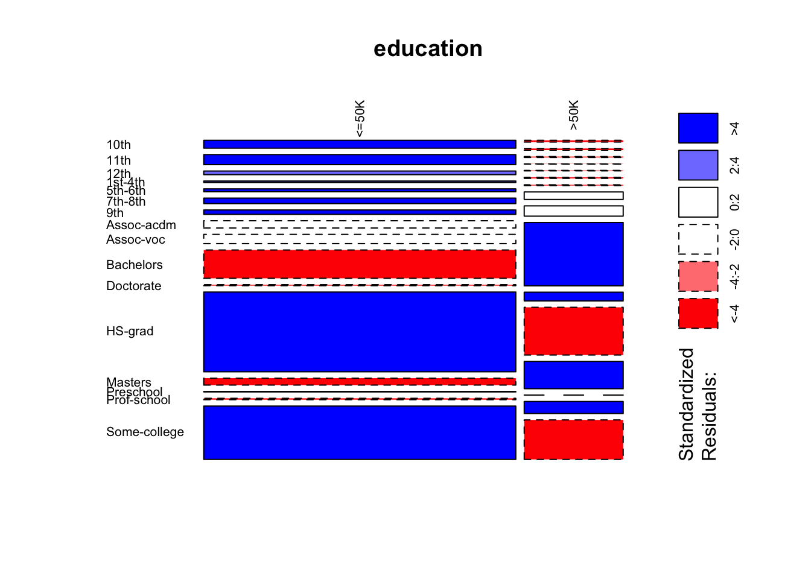
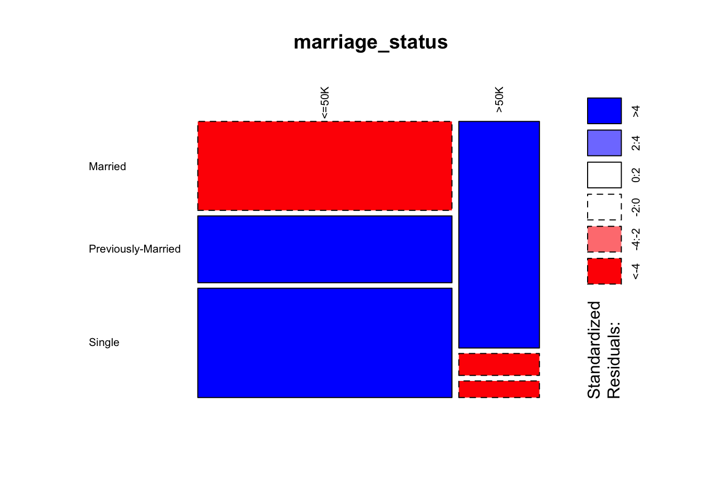
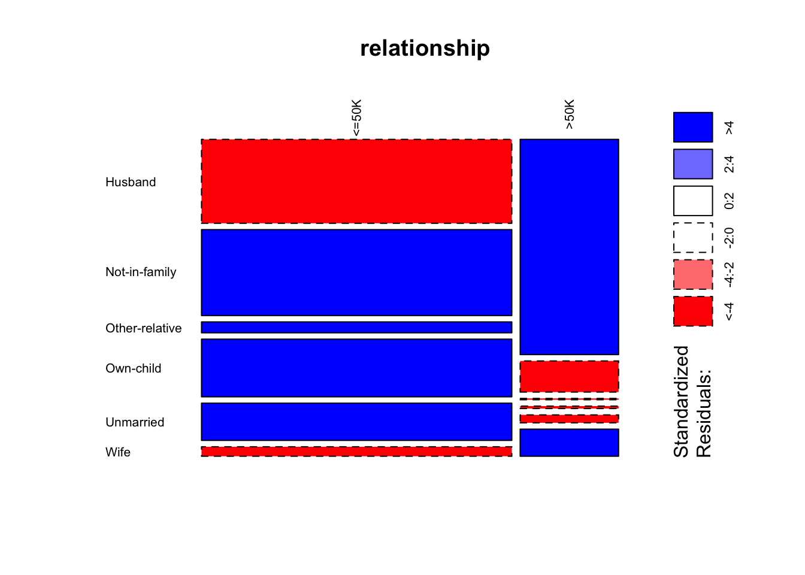

Predicting Income: EDA
Rick Fontenot, Tricia Herrera, Michael Mazel, Cameron Stewart
8/8/2021
library(glmnet)## Loading required package: Matrix## Loaded glmnet 4.1-1library(ROCR)
library(MASS)
library(ggplot2)
library(pheatmap)
library(randomForest)## randomForest 4.6-14## Type rfNews() to see new features/changes/bug fixes.##
## Attaching package: 'randomForest'## The following object is masked from 'package:ggplot2':
##
## marginlibrary(dplyr)##
## Attaching package: 'dplyr'## The following object is masked from 'package:randomForest':
##
## combine## The following object is masked from 'package:MASS':
##
## select## The following objects are masked from 'package:stats':
##
## filter, lag## The following objects are masked from 'package:base':
##
## intersect, setdiff, setequal, unionlibrary(tidyverse)## ── Attaching packages ─────────────────────────────────────── tidyverse 1.3.1 ──## ✓ tibble 3.1.1 ✓ purrr 0.3.4
## ✓ tidyr 1.1.3 ✓ stringr 1.4.0
## ✓ readr 1.4.0 ✓ forcats 0.5.1## ── Conflicts ────────────────────────────────────────── tidyverse_conflicts() ──
## x dplyr::combine() masks randomForest::combine()
## x tidyr::expand() masks Matrix::expand()
## x dplyr::filter() masks stats::filter()
## x dplyr::lag() masks stats::lag()
## x randomForest::margin() masks ggplot2::margin()
## x tidyr::pack() masks Matrix::pack()
## x dplyr::select() masks MASS::select()
## x tidyr::unpack() masks Matrix::unpack()library(VIM)## Loading required package: colorspace## Loading required package: grid## VIM is ready to use.## Suggestions and bug-reports can be submitted at: https://github.com/statistikat/VIM/issues##
## Attaching package: 'VIM'## The following object is masked from 'package:datasets':
##
## sleeplibrary(caret)## Loading required package: lattice##
## Attaching package: 'caret'## The following object is masked from 'package:purrr':
##
## liftlibrary(corrplot)## corrplot 0.88 loadedlibrary(ggplot2)
library(ggthemes)
library(vcd)
#install.packages("gtsummary")
library(gtsummary)## #BlackLivesMatter##
## Attaching package: 'gtsummary'## The following object is masked from 'package:MASS':
##
## selectlibrary(Hmisc)## Loading required package: survival##
## Attaching package: 'survival'## The following object is masked from 'package:caret':
##
## cluster## Loading required package: Formula##
## Attaching package: 'Hmisc'## The following objects are masked from 'package:dplyr':
##
## src, summarize## The following objects are masked from 'package:base':
##
## format.pval, unitslibrary(pROC)## Type 'citation("pROC")' for a citation.##
## Attaching package: 'pROC'## The following object is masked from 'package:colorspace':
##
## coords## The following objects are masked from 'package:stats':
##
## cov, smooth, varLoad Theme for plots
theme_set(theme_fivethirtyeight())
theme_update(axis.title = element_text()) #the default for fivethirtyeight is to not show axis labels, this removes that default so we can choose to specify and display axis titles
theme_update(plot.title = element_text(hjust = 0.5)) # changing default to center all titlesLoad Data downloaded from UCI and stored on github repo https://archive.ics.uci.edu/ml/datasets/Adult
adult = read.csv("https://raw.githubusercontent.com/rickfontenot/Predicting_Income/main/data/adult.data", header = FALSE)Description of variables from UCI:
Response: >50K, <=50K.
age: continuous. workclass: Private, Self-emp-not-inc, Self-emp-inc, Federal-gov, Local-gov, State-gov, Without-pay, Never-worked. fnlwgt: continuous. education: Bachelors, Some-college, 11th, HS-grad, Prof-school, Assoc-acdm, Assoc-voc, 9th, 7th-8th, 12th, Masters, 1st-4th, 10th, Doctorate, 5th-6th, Preschool. education-num: continuous. marital-status: Married-civ-spouse, Divorced, Never-married, Separated, Widowed, Married-spouse-absent, Married-AF-spouse. occupation: Tech-support, Craft-repair, Other-service, Sales, Exec-managerial, Prof-specialty, Handlers-cleaners, Machine-op-inspct, Adm-clerical, Farming-fishing, Transport-moving, Priv-house-serv, Protective-serv, Armed-Forces. relationship: Wife, Own-child, Husband, Not-in-family, Other-relative, Unmarried. race: White, Asian-Pac-Islander, Amer-Indian-Eskimo, Other, Black. sex: Female, Male. capital-gain: continuous. capital-loss: continuous. hours-per-week: continuous. native-country: United-States, Cambodia, England, Puerto-Rico, Canada, Germany, Outlying-US(Guam-USVI-etc), India, Japan, Greece, South, China, Cuba, Iran, Honduras, Philippines, Italy, Poland, Jamaica, Vietnam, Mexico, Portugal, Ireland, France, Dominican-Republic, Laos, Ecuador, Taiwan, Haiti, Columbia, Hungary, Guatemala, Nicaragua, Scotland, Thailand, Yugoslavia, El-Salvador, Trinadad&Tobago, Peru, Hong, Holand-Netherlands.
Add column names to data set:
# NOTE: names using underscore instead of hyphen so they can be referenced easier later
colnames(adult) <- c("age","workclass","fnlwgt","education","education_num","marital_status","occupation","relationship","race","sex","capital_gain","capital_loss","hours_per_week","native_country","income")Investigate NA values to determine what needs resolution
#Replace "?" with NA and re-do missing value analysis
missing_values <- adult
missing_values[, 1:14][missing_values[, 1:14] == " ?"] <- NA
aggr_plot <- aggr(missing_values, col=c('navyblue','red'), numbers=TRUE, sortVars=TRUE, labels=names(adult), cex.axis=.7, gap=3, ylab=c("Percent data missing","Combinations Missing"), prop=FALSE,cex.numbers=0.8)##
## Variables sorted by number of missings:
## Variable Count
## occupation 1843
## workclass 1836
## native_country 583
## age 0
## fnlwgt 0
## education 0
## education_num 0
## marital_status 0
## relationship 0
## race 0
## sex 0
## capital_gain 0
## capital_loss 0
## hours_per_week 0
## income 0#occupation missing 5.66% of values
#workclass missing 5.64% of values
#native-country missing 1.79& of values
#Note that half of the missing workclass values occur on observations that are also missing occupationExamine formats of data available
str(adult)## 'data.frame': 32561 obs. of 15 variables:
## $ age : int 39 50 38 53 28 37 49 52 31 42 ...
## $ workclass : chr " State-gov" " Self-emp-not-inc" " Private" " Private" ...
## $ fnlwgt : int 77516 83311 215646 234721 338409 284582 160187 209642 45781 159449 ...
## $ education : chr " Bachelors" " Bachelors" " HS-grad" " 11th" ...
## $ education_num : int 13 13 9 7 13 14 5 9 14 13 ...
## $ marital_status: chr " Never-married" " Married-civ-spouse" " Divorced" " Married-civ-spouse" ...
## $ occupation : chr " Adm-clerical" " Exec-managerial" " Handlers-cleaners" " Handlers-cleaners" ...
## $ relationship : chr " Not-in-family" " Husband" " Not-in-family" " Husband" ...
## $ race : chr " White" " White" " White" " Black" ...
## $ sex : chr " Male" " Male" " Male" " Male" ...
## $ capital_gain : int 2174 0 0 0 0 0 0 0 14084 5178 ...
## $ capital_loss : int 0 0 0 0 0 0 0 0 0 0 ...
## $ hours_per_week: int 40 13 40 40 40 40 16 45 50 40 ...
## $ native_country: chr " United-States" " United-States" " United-States" " United-States" ...
## $ income : chr " <=50K" " <=50K" " <=50K" " <=50K" ...adult[, 1:14][adult[, 1:14] == " ?"] <- "no_response"
#Convert character vars to factors and make list of vars
adult$workclass <- as.factor(adult$workclass)
adult$education <- as.factor(adult$education)
adult$marital_status <- as.factor(adult$marital_status)
adult$occupation <- as.factor(adult$occupation)
adult$relationship <- as.factor(adult$relationship)
adult$race <- as.factor(adult$race)
adult$sex <- as.factor(adult$sex)
adult$native_country <- as.factor(adult$native_country)
adult$income <- as.factor(adult$income)
categorical.explanatory = c("workclass","education","marital_status","occupation","relationship","race","sex","native_country")
str(adult)## 'data.frame': 32561 obs. of 15 variables:
## $ age : int 39 50 38 53 28 37 49 52 31 42 ...
## $ workclass : Factor w/ 9 levels " Federal-gov",..: 7 6 4 4 4 4 4 6 4 4 ...
## $ fnlwgt : int 77516 83311 215646 234721 338409 284582 160187 209642 45781 159449 ...
## $ education : Factor w/ 16 levels " 10th"," 11th",..: 10 10 12 2 10 13 7 12 13 10 ...
## $ education_num : int 13 13 9 7 13 14 5 9 14 13 ...
## $ marital_status: Factor w/ 7 levels " Divorced"," Married-AF-spouse",..: 5 3 1 3 3 3 4 3 5 3 ...
## $ occupation : Factor w/ 15 levels " Adm-clerical",..: 1 4 6 6 10 4 8 4 10 4 ...
## $ relationship : Factor w/ 6 levels " Husband"," Not-in-family",..: 2 1 2 1 6 6 2 1 2 1 ...
## $ race : Factor w/ 5 levels " Amer-Indian-Eskimo",..: 5 5 5 3 3 5 3 5 5 5 ...
## $ sex : Factor w/ 2 levels " Female"," Male": 2 2 2 2 1 1 1 2 1 2 ...
## $ capital_gain : int 2174 0 0 0 0 0 0 0 14084 5178 ...
## $ capital_loss : int 0 0 0 0 0 0 0 0 0 0 ...
## $ hours_per_week: int 40 13 40 40 40 40 16 45 50 40 ...
## $ native_country: Factor w/ 42 levels " Cambodia"," Canada",..: 39 39 39 39 5 39 23 39 39 39 ...
## $ income : Factor w/ 2 levels " <=50K"," >50K": 1 1 1 1 1 1 1 2 2 2 ...Summary Statistics for Categorical variables & Distributions for Numerical variables
categorical <- adult %>% select(categorical.explanatory, income)## Note: Using an external vector in selections is ambiguous.
## ℹ Use `all_of(categorical.explanatory)` instead of `categorical.explanatory` to silence this message.
## ℹ See <https://tidyselect.r-lib.org/reference/faq-external-vector.html>.
## This message is displayed once per session.categorical %>% tbl_summary()| Characteristic | N = 32,5611 |
|---|---|
| workclass | |
| Federal-gov | 960 (2.9%) |
| Local-gov | 2,093 (6.4%) |
| Never-worked | 7 (<0.1%) |
| Private | 22,696 (70%) |
| Self-emp-inc | 1,116 (3.4%) |
| Self-emp-not-inc | 2,541 (7.8%) |
| State-gov | 1,298 (4.0%) |
| Without-pay | 14 (<0.1%) |
| no_response | 1,836 (5.6%) |
| education | |
| 10th | 933 (2.9%) |
| 11th | 1,175 (3.6%) |
| 12th | 433 (1.3%) |
| 1st-4th | 168 (0.5%) |
| 5th-6th | 333 (1.0%) |
| 7th-8th | 646 (2.0%) |
| 9th | 514 (1.6%) |
| Assoc-acdm | 1,067 (3.3%) |
| Assoc-voc | 1,382 (4.2%) |
| Bachelors | 5,355 (16%) |
| Doctorate | 413 (1.3%) |
| HS-grad | 10,501 (32%) |
| Masters | 1,723 (5.3%) |
| Preschool | 51 (0.2%) |
| Prof-school | 576 (1.8%) |
| Some-college | 7,291 (22%) |
| marital_status | |
| Divorced | 4,443 (14%) |
| Married-AF-spouse | 23 (<0.1%) |
| Married-civ-spouse | 14,976 (46%) |
| Married-spouse-absent | 418 (1.3%) |
| Never-married | 10,683 (33%) |
| Separated | 1,025 (3.1%) |
| Widowed | 993 (3.0%) |
| occupation | |
| Adm-clerical | 3,770 (12%) |
| Armed-Forces | 9 (<0.1%) |
| Craft-repair | 4,099 (13%) |
| Exec-managerial | 4,066 (12%) |
| Farming-fishing | 994 (3.1%) |
| Handlers-cleaners | 1,370 (4.2%) |
| Machine-op-inspct | 2,002 (6.1%) |
| Other-service | 3,295 (10%) |
| Priv-house-serv | 149 (0.5%) |
| Prof-specialty | 4,140 (13%) |
| Protective-serv | 649 (2.0%) |
| Sales | 3,650 (11%) |
| Tech-support | 928 (2.9%) |
| Transport-moving | 1,597 (4.9%) |
| no_response | 1,843 (5.7%) |
| relationship | |
| Husband | 13,193 (41%) |
| Not-in-family | 8,305 (26%) |
| Other-relative | 981 (3.0%) |
| Own-child | 5,068 (16%) |
| Unmarried | 3,446 (11%) |
| Wife | 1,568 (4.8%) |
| race | |
| Amer-Indian-Eskimo | 311 (1.0%) |
| Asian-Pac-Islander | 1,039 (3.2%) |
| Black | 3,124 (9.6%) |
| Other | 271 (0.8%) |
| White | 27,816 (85%) |
| sex | |
| Female | 10,771 (33%) |
| Male | 21,790 (67%) |
| native_country | |
| Cambodia | 19 (<0.1%) |
| Canada | 121 (0.4%) |
| China | 75 (0.2%) |
| Columbia | 59 (0.2%) |
| Cuba | 95 (0.3%) |
| Dominican-Republic | 70 (0.2%) |
| Ecuador | 28 (<0.1%) |
| El-Salvador | 106 (0.3%) |
| England | 90 (0.3%) |
| France | 29 (<0.1%) |
| Germany | 137 (0.4%) |
| Greece | 29 (<0.1%) |
| Guatemala | 64 (0.2%) |
| Haiti | 44 (0.1%) |
| Holand-Netherlands | 1 (<0.1%) |
| Honduras | 13 (<0.1%) |
| Hong | 20 (<0.1%) |
| Hungary | 13 (<0.1%) |
| India | 100 (0.3%) |
| Iran | 43 (0.1%) |
| Ireland | 24 (<0.1%) |
| Italy | 73 (0.2%) |
| Jamaica | 81 (0.2%) |
| Japan | 62 (0.2%) |
| Laos | 18 (<0.1%) |
| Mexico | 643 (2.0%) |
| Nicaragua | 34 (0.1%) |
| Outlying-US(Guam-USVI-etc) | 14 (<0.1%) |
| Peru | 31 (<0.1%) |
| Philippines | 198 (0.6%) |
| Poland | 60 (0.2%) |
| Portugal | 37 (0.1%) |
| Puerto-Rico | 114 (0.4%) |
| Scotland | 12 (<0.1%) |
| South | 80 (0.2%) |
| Taiwan | 51 (0.2%) |
| Thailand | 18 (<0.1%) |
| Trinadad&Tobago | 19 (<0.1%) |
| United-States | 29,170 (90%) |
| Vietnam | 67 (0.2%) |
| Yugoslavia | 16 (<0.1%) |
| no_response | 583 (1.8%) |
| income | |
| <=50K | 24,720 (76%) |
| >50K | 7,841 (24%) |
|
1
n (%)
|
|
hist.data.frame(adult %>% select(-categorical.explanatory,-income),nclass=20)Check initial simple logistic regression with no cleaning or additional features (Dropped all NA, dropped fnlwgt, no imputing of missing values) *Note occupation and native_country not significant
AIC: 16561 Accuracy : 0.8188 Sensitivity : 0.9369
Specificity : 0.4584 **Poor Specificity
logit.set <- adult %>% select(-fnlwgt)
logit.set <- na.omit(logit.set)
logit.set$income.binary<-0
logit.set$income.binary[logit.set$income==" >50K"] <- 1
logit.set$income.binary = as.factor(logit.set$income.binary)
logit.set <- logit.set %>% select(-income)
logit.set$workclass <- as.numeric(logit.set$workclass)
logit.set$education <- as.numeric(logit.set$education)
logit.set$marital_status <- as.numeric(logit.set$marital_status)
logit.set$occupation <- as.numeric(logit.set$occupation)
logit.set$relationship <- as.numeric(logit.set$relationship)
logit.set$race <- as.numeric(logit.set$race)
logit.set$sex <- as.numeric(logit.set$sex)
logit.set$native_country <- as.numeric(logit.set$native_country)
trainIndices = sample(seq(1:length(logit.set$income.binary)),round(.7*length(logit.set$income.binary)))
logit.train = logit.set[trainIndices,]
logit.test = logit.set[-trainIndices,]
model <- glm(income.binary ~.,family=binomial(link='logit'),data=logit.train)## Warning: glm.fit: fitted probabilities numerically 0 or 1 occurredstr(logit.train)## 'data.frame': 22793 obs. of 14 variables:
## $ age : int 65 43 41 27 26 52 26 48 18 43 ...
## $ workclass : num 4 4 1 7 4 2 4 4 4 4 ...
## $ education : num 12 12 10 16 12 12 9 10 3 16 ...
## $ education_num : int 9 9 13 10 9 9 11 13 8 10 ...
## $ marital_status: num 7 1 5 3 3 3 1 3 5 3 ...
## $ occupation : num 8 4 4 14 7 8 3 10 12 10 ...
## $ relationship : num 2 2 2 1 1 6 4 1 4 1 ...
## $ race : num 5 5 5 5 5 3 5 5 5 5 ...
## $ sex : num 1 1 2 2 2 1 2 2 1 2 ...
## $ capital_gain : int 0 0 0 3411 0 0 0 0 0 5178 ...
## $ capital_loss : int 0 0 0 0 0 0 0 0 0 0 ...
## $ hours_per_week: int 15 30 40 40 40 20 40 45 20 40 ...
## $ native_country: num 39 39 39 39 39 39 39 2 39 39 ...
## $ income.binary : Factor w/ 2 levels "0","1": 1 2 2 1 1 1 1 2 1 2 ...summary(model)##
## Call:
## glm(formula = income.binary ~ ., family = binomial(link = "logit"),
## data = logit.train)
##
## Deviance Residuals:
## Min 1Q Median 3Q Max
## -4.6157 -0.6179 -0.3357 -0.0859 3.4072
##
## Coefficients:
## Estimate Std. Error z value Pr(>|z|)
## (Intercept) -8.594e+00 2.807e-01 -30.614 < 2e-16 ***
## age 3.623e-02 1.648e-03 21.979 < 2e-16 ***
## workclass -1.169e-01 1.316e-02 -8.882 < 2e-16 ***
## education 2.192e-02 6.293e-03 3.482 0.000497 ***
## education_num 3.310e-01 8.689e-03 38.101 < 2e-16 ***
## marital_status -2.364e-01 1.478e-02 -15.989 < 2e-16 ***
## occupation 1.062e-03 4.641e-03 0.229 0.818950
## relationship -1.146e-01 1.725e-02 -6.644 3.06e-11 ***
## race 9.592e-02 2.520e-02 3.806 0.000141 ***
## sex 9.074e-01 6.063e-02 14.966 < 2e-16 ***
## capital_gain 3.209e-04 1.185e-05 27.078 < 2e-16 ***
## capital_loss 7.025e-04 4.082e-05 17.209 < 2e-16 ***
## hours_per_week 3.001e-02 1.679e-03 17.873 < 2e-16 ***
## native_country 3.499e-03 3.382e-03 1.035 0.300852
## ---
## Signif. codes: 0 '***' 0.001 '**' 0.01 '*' 0.05 '.' 0.1 ' ' 1
##
## (Dispersion parameter for binomial family taken to be 1)
##
## Null deviance: 25051 on 22792 degrees of freedom
## Residual deviance: 17264 on 22779 degrees of freedom
## AIC: 17292
##
## Number of Fisher Scoring iterations: 7logit.test$IncomeProbability <- predict(model, newdata = logit.test, type = "response")
logit.test["Prediction"] = 0
logit.test$Prediction[logit.test$IncomeProbability>0.5] = 1
logit.test$Prediction=as.factor(logit.test$Prediction)
logit.test$income=as.factor(logit.test$income.binary)
confusionMatrix(logit.test$Prediction, logit.test$income.binary)## Confusion Matrix and Statistics
##
## Reference
## Prediction 0 1
## 0 6917 1329
## 1 450 1072
##
## Accuracy : 0.8179
## 95% CI : (0.8101, 0.8255)
## No Information Rate : 0.7542
## P-Value [Acc > NIR] : < 2.2e-16
##
## Kappa : 0.4396
##
## Mcnemar's Test P-Value : < 2.2e-16
##
## Sensitivity : 0.9389
## Specificity : 0.4465
## Pos Pred Value : 0.8388
## Neg Pred Value : 0.7043
## Prevalence : 0.7542
## Detection Rate : 0.7081
## Detection Prevalence : 0.8442
## Balanced Accuracy : 0.6927
##
## 'Positive' Class : 0
## Explore Categorical Varaibles vs. Income
workclass: reducing levels into work_sector improves model performance and simplifies interpretability so choosing to replace workclass
AIC: 16511 vs original 16561 –>improved Accuracy : 0.8201 vs original 0.8188 –>improved Sensitivity : 0.9395 vs original 0.9369 –> improved
Specificity : 0.4571 vs original 0.4584 –>dropped just a little
workclass = table(adult$income, adult$workclass)
mosaicplot(workclass, shade = TRUE, las=2, main = "workclass", pop = FALSE)## Warning: In mosaicplot.default(workclass, shade = TRUE, las = 2, main = "workclass",
## pop = FALSE) :
## extra argument 'pop' will be disregardedworkclasschisq <- chisq.test(workclass) ## Warning in chisq.test(workclass): Chi-squared approximation may be incorrectworkclasschisq##
## Pearson's Chi-squared test
##
## data: workclass
## X-squared = 1045.7, df = 8, p-value < 2.2e-16#X-squared = 827.72 , p-value=2.2e-16
#Evaluate reducing levels to Government, Private, Self-Employed, Other
adult$workclass <- trimws(adult$workclass)
adult$work_sector <- "Other"
adult$work_sector[adult$workclass %in% c("Federal-gov","Local-gov","State-gov")] <- "Government"
adult$work_sector[adult$workclass %in% c("Private")] <- "Private"
adult$work_sector[adult$workclass %in% c("Self-emp-inc","Self-emp-not-inc")] <- "Self_Employed"
adult$work_sector[adult$workclass %in% c("Never-worked","Without-pay")] <- "Not_Working"
adult$work_sector = as.factor(adult$work_sector)
work_sector = table(adult$income, adult$work_sector)
mosaicplot(work_sector, shade = TRUE, las=2, main = "work_sector", pop = FALSE)## Warning: In mosaicplot.default(work_sector, shade = TRUE, las = 2, main = "work_sector",
## pop = FALSE) :
## extra argument 'pop' will be disregardedwork_sectorchisq <- chisq.test(work_sector)
work_sectorchisq##
## Pearson's Chi-squared test
##
## data: work_sector
## X-squared = 687.39, df = 4, p-value < 2.2e-16#X-squared = 565.28 , p-value=2.2e-16
#Since X-Square decreased the difference between levels is not quite as strong but does simplify
#Re-run regression with work_sector to compare to workclass
logit.set <- adult %>% select(-fnlwgt,-workclass)
logit.set <- na.omit(logit.set)
logit.set$income.binary<-0
logit.set$income.binary[logit.set$income==" >50K"] <- 1
logit.set$income.binary = as.factor(logit.set$income.binary)
logit.set <- logit.set %>% select(-income)
logit.set$work_sector <- as.numeric(logit.set$work_sector)
logit.set$education <- as.numeric(logit.set$education)
logit.set$marital_status <- as.numeric(logit.set$marital_status)
logit.set$occupation <- as.numeric(logit.set$occupation)
logit.set$relationship <- as.numeric(logit.set$relationship)
logit.set$race <- as.numeric(logit.set$race)
logit.set$sex <- as.numeric(logit.set$sex)
logit.set$native_country <- as.numeric(logit.set$native_country)
trainIndices = sample(seq(1:length(logit.set$income.binary)),round(.7*length(logit.set$income.binary)))
logit.train = logit.set[trainIndices,]
logit.test = logit.set[-trainIndices,]
model <- glm(income.binary ~.,family=binomial(link='logit'),data=logit.train)## Warning: glm.fit: fitted probabilities numerically 0 or 1 occurredstr(logit.train)## 'data.frame': 22793 obs. of 14 variables:
## $ age : int 55 38 21 25 20 21 20 27 21 39 ...
## $ education : num 16 12 12 10 16 16 12 12 12 10 ...
## $ education_num : int 10 9 9 13 10 10 9 9 9 13 ...
## $ marital_status: num 3 5 5 5 3 5 5 3 5 5 ...
## $ occupation : num 13 7 9 4 12 12 8 6 14 10 ...
## $ relationship : num 1 2 2 4 3 4 4 1 4 2 ...
## $ race : num 5 5 5 5 5 5 5 5 3 5 ...
## $ sex : num 2 1 1 2 1 2 2 2 2 2 ...
## $ capital_gain : int 0 0 0 0 0 0 0 0 0 0 ...
## $ capital_loss : int 0 0 0 0 0 0 0 0 0 0 ...
## $ hours_per_week: int 40 40 25 40 30 35 50 40 20 40 ...
## $ native_country: num 39 39 39 39 39 39 39 39 39 39 ...
## $ work_sector : num 4 4 4 4 4 4 4 4 4 4 ...
## $ income.binary : Factor w/ 2 levels "0","1": 2 1 1 1 1 1 1 1 1 1 ...summary(model)##
## Call:
## glm(formula = income.binary ~ ., family = binomial(link = "logit"),
## data = logit.train)
##
## Deviance Residuals:
## Min 1Q Median 3Q Max
## -5.3483 -0.6233 -0.3401 -0.0874 3.1550
##
## Coefficients:
## Estimate Std. Error z value Pr(>|z|)
## (Intercept) -8.739e+00 2.804e-01 -31.164 < 2e-16 ***
## age 3.307e-02 1.619e-03 20.421 < 2e-16 ***
## education 1.296e-02 6.183e-03 2.096 0.0361 *
## education_num 3.398e-01 8.662e-03 39.226 < 2e-16 ***
## marital_status -2.406e-01 1.475e-02 -16.317 < 2e-16 ***
## occupation -8.887e-03 4.508e-03 -1.971 0.0487 *
## relationship -1.144e-01 1.711e-02 -6.684 2.33e-11 ***
## race 1.001e-01 2.536e-02 3.948 7.87e-05 ***
## sex 9.519e-01 6.047e-02 15.743 < 2e-16 ***
## capital_gain 3.177e-04 1.175e-05 27.029 < 2e-16 ***
## capital_loss 6.716e-04 4.024e-05 16.691 < 2e-16 ***
## hours_per_week 2.889e-02 1.657e-03 17.438 < 2e-16 ***
## native_country 1.751e-03 3.357e-03 0.522 0.6020
## work_sector -2.555e-02 1.594e-02 -1.603 0.1089
## ---
## Signif. codes: 0 '***' 0.001 '**' 0.01 '*' 0.05 '.' 0.1 ' ' 1
##
## (Dispersion parameter for binomial family taken to be 1)
##
## Null deviance: 25169 on 22792 degrees of freedom
## Residual deviance: 17474 on 22779 degrees of freedom
## AIC: 17502
##
## Number of Fisher Scoring iterations: 7logit.test$IncomeProbability <- predict(model, newdata = logit.test, type = "response")
logit.test["Prediction"] = 0
logit.test$Prediction[logit.test$IncomeProbability>0.5] = 1
logit.test$Prediction=as.factor(logit.test$Prediction)
logit.test$income=as.factor(logit.test$income.binary)
confusionMatrix(logit.test$Prediction, logit.test$income.binary)## Confusion Matrix and Statistics
##
## Reference
## Prediction 0 1
## 0 7001 1270
## 1 417 1080
##
## Accuracy : 0.8273
## 95% CI : (0.8196, 0.8347)
## No Information Rate : 0.7594
## P-Value [Acc > NIR] : < 2.2e-16
##
## Kappa : 0.4605
##
## Mcnemar's Test P-Value : < 2.2e-16
##
## Sensitivity : 0.9438
## Specificity : 0.4596
## Pos Pred Value : 0.8465
## Neg Pred Value : 0.7214
## Prevalence : 0.7594
## Detection Rate : 0.7167
## Detection Prevalence : 0.8467
## Balanced Accuracy : 0.7017
##
## 'Positive' Class : 0
## #adult <- adult %>% select(-work_sector)education
education = table(adult$income, adult$education)
mosaicplot(education, shade = TRUE, las=2, main = "education", pop = FALSE)## Warning: In mosaicplot.default(education, shade = TRUE, las = 2, main = "education",
## pop = FALSE) :
## extra argument 'pop' will be disregarded
educationchisq <- chisq.test(education)
educationchisq##
## Pearson's Chi-squared test
##
## data: education
## X-squared = 4429.7, df = 15, p-value < 2.2e-16#X-squared = 4429.7 , p-value=2.2e-16
#Hard to read since factor levels not in proper order
adult$education <- trimws(adult$education)
adult %>% mutate(education = fct_reorder(education, education_num)) %>% ggplot(aes(x=education,y=education_num)) +
geom_boxplot()+ labs(title= "education vs education_num" , x = "Level", y= "Number") +
theme(axis.text.x=element_text(angle=45,hjust=1))#Note these two columns are the same info, which is better categorical or numerical? Based on initial logistic regression the numeric has lower p-value and more significancemarital_status: reducing levels into marriage_status improves model performance and simplifies interpretability so choosing to replace marital_status
AIC: 14470 vs original 16561 –>improved Accuracy : 0.832 vs original 0.8188 –>improved Sensitivity : 0.9237 vs original 0.9369 –> dropped a little
Specificity : 0.5656 vs original 0.4584 –>improved
marital_status = table(adult$income, adult$marital_status)
mosaicplot(marital_status, shade = TRUE, las=2, main = "marital_status", pop = FALSE)## Warning: In mosaicplot.default(marital_status, shade = TRUE, las = 2, main = "marital_status",
## pop = FALSE) :
## extra argument 'pop' will be disregardedmarital_statuschisq <- chisq.test(marital_status)
marital_statuschisq##
## Pearson's Chi-squared test
##
## data: marital_status
## X-squared = 6517.7, df = 6, p-value < 2.2e-16#X-squared = 6518 , p-value=2.2e-16
#Evaluate reducing levels to Married, Single, Previously-Married
adult$marital_status <- trimws(adult$marital_status)
adult$marriage_status <- "Other"
adult$marriage_status[adult$marital_status %in% c("Married-AF-spouse","Married-civ-spouse")] <- "Married"
adult$marriage_status[adult$marital_status %in% c("Divorced","Married-spouse-absent","Separated","Widowed")] <- "Previously-Married"
adult$marriage_status[adult$marital_status %in% c("Never-married")] <- "Single"
adult$marriage_status = as.factor(adult$marriage_status)
marriage_status = table(adult$income, adult$marriage_status)
mosaicplot(marriage_status, shade = TRUE, las=2, main = "marriage_status", pop = FALSE)## Warning: In mosaicplot.default(marriage_status, shade = TRUE, las = 2, main = "marriage_status",
## pop = FALSE) :
## extra argument 'pop' will be disregarded
marriage_statuschisq <- chisq.test(marriage_status)
marriage_statuschisq##
## Pearson's Chi-squared test
##
## data: marriage_status
## X-squared = 6509.5, df = 2, p-value < 2.2e-16#X-squared = 6509 , p-value=2.2e-16
#Only slight decrease in X-squared much easier to interpret
#Relationship may be correlated
#Do marital status + gender = relationship status?
marriage_vs_relationship = table(adult$relationship, adult$marriage_status)
marriage_vs_relationship##
## Married Previously-Married Single
## Husband 13193 0 0
## Not-in-family 17 3582 4706
## Other-relative 125 245 611
## Own-child 96 487 4485
## Unmarried 0 2565 881
## Wife 1568 0 0chisq.test(marriage_vs_relationship)##
## Pearson's Chi-squared test
##
## data: marriage_vs_relationship
## X-squared = 38455, df = 10, p-value < 2.2e-16#Re-run regression with marriage_status to compare to workclass
logit.set <- adult %>% select(-fnlwgt,-work_sector,-marital_status)
logit.set <- na.omit(logit.set)
logit.set$income.binary<-0
logit.set$income.binary[logit.set$income==" >50K"] <- 1
logit.set$income.binary = as.factor(logit.set$income.binary)
logit.set <- logit.set %>% select(-income)
logit.set$workclass <- as.factor(logit.set$workclass)
logit.set$workclass <- as.numeric(logit.set$workclass)
logit.set$education <- as.factor(logit.set$education)
logit.set$education <- as.numeric(logit.set$education)
logit.set$marriage_status <- as.numeric(logit.set$marriage_status)
logit.set$occupation <- as.numeric(logit.set$occupation)
logit.set$relationship <- as.numeric(logit.set$relationship)
logit.set$race <- as.numeric(logit.set$race)
logit.set$sex <- as.numeric(logit.set$sex)
logit.set$native_country <- as.numeric(logit.set$native_country)
trainIndices = sample(seq(1:length(logit.set$income.binary)),round(.7*length(logit.set$income.binary)))
logit.train = logit.set[trainIndices,]
logit.test = logit.set[-trainIndices,]
model <- glm(income.binary ~.,family=binomial(link='logit'),data=logit.train)## Warning: glm.fit: fitted probabilities numerically 0 or 1 occurredstr(logit.train)## 'data.frame': 22793 obs. of 14 variables:
## $ age : int 60 23 18 52 46 35 26 45 45 32 ...
## $ workclass : num 7 5 5 2 7 5 5 5 5 5 ...
## $ education : num 12 12 2 13 16 12 15 12 16 10 ...
## $ education_num : int 9 9 7 14 10 9 15 9 10 13 ...
## $ occupation : num 8 3 6 10 4 3 10 1 14 7 ...
## $ relationship : num 2 2 4 1 1 2 1 5 2 2 ...
## $ race : num 3 5 5 3 5 5 5 5 5 5 ...
## $ sex : num 2 2 2 2 2 2 2 1 2 1 ...
## $ capital_gain : int 0 0 0 0 3137 0 0 0 0 0 ...
## $ capital_loss : int 1876 0 0 0 0 0 1977 0 0 1590 ...
## $ hours_per_week : int 50 40 12 40 40 50 40 40 50 42 ...
## $ native_country : num 39 39 39 39 39 39 39 39 39 39 ...
## $ marriage_status: num 2 3 3 1 1 2 1 2 2 2 ...
## $ income.binary : Factor w/ 2 levels "0","1": 1 1 1 2 1 1 2 1 1 1 ...summary(model)##
## Call:
## glm(formula = income.binary ~ ., family = binomial(link = "logit"),
## data = logit.train)
##
## Deviance Residuals:
## Min 1Q Median 3Q Max
## -5.3443 -0.5575 -0.2210 -0.0498 3.6563
##
## Coefficients:
## Estimate Std. Error z value Pr(>|z|)
## (Intercept) -6.715e+00 3.124e-01 -21.495 < 2e-16 ***
## age 1.977e-02 1.729e-03 11.432 < 2e-16 ***
## workclass -7.319e-02 1.377e-02 -5.315 1.07e-07 ***
## education 1.259e-02 6.560e-03 1.919 0.05499 .
## education_num 3.749e-01 9.354e-03 40.077 < 2e-16 ***
## occupation -1.040e-02 4.770e-03 -2.179 0.02930 *
## relationship 9.911e-02 2.012e-02 4.927 8.36e-07 ***
## race 7.308e-02 2.658e-02 2.749 0.00597 **
## sex 6.431e-01 8.133e-02 7.907 2.64e-15 ***
## capital_gain 3.139e-04 1.175e-05 26.723 < 2e-16 ***
## capital_loss 6.912e-04 4.319e-05 16.005 < 2e-16 ***
## hours_per_week 3.047e-02 1.777e-03 17.151 < 2e-16 ***
## native_country 5.072e-03 3.560e-03 1.425 0.15428
## marriage_status -1.539e+00 3.690e-02 -41.691 < 2e-16 ***
## ---
## Signif. codes: 0 '***' 0.001 '**' 0.01 '*' 0.05 '.' 0.1 ' ' 1
##
## (Dispersion parameter for binomial family taken to be 1)
##
## Null deviance: 25125 on 22792 degrees of freedom
## Residual deviance: 15325 on 22779 degrees of freedom
## AIC: 15353
##
## Number of Fisher Scoring iterations: 7logit.test$IncomeProbability <- predict(model, newdata = logit.test, type = "response")
logit.test["Prediction"] = 0
logit.test$Prediction[logit.test$IncomeProbability>0.5] = 1
logit.test$Prediction=as.factor(logit.test$Prediction)
logit.test$income=as.factor(logit.test$income.binary)
confusionMatrix(logit.test$Prediction, logit.test$income.binary)## Confusion Matrix and Statistics
##
## Reference
## Prediction 0 1
## 0 6879 1054
## 1 520 1315
##
## Accuracy : 0.8389
## 95% CI : (0.8314, 0.8461)
## No Information Rate : 0.7575
## P-Value [Acc > NIR] : < 2.2e-16
##
## Kappa : 0.525
##
## Mcnemar's Test P-Value : < 2.2e-16
##
## Sensitivity : 0.9297
## Specificity : 0.5551
## Pos Pred Value : 0.8671
## Neg Pred Value : 0.7166
## Prevalence : 0.7575
## Detection Rate : 0.7042
## Detection Prevalence : 0.8121
## Balanced Accuracy : 0.7424
##
## 'Positive' Class : 0
## #adult <- adult %>% select(-work_sector)occupation: reducing levels into collar improves model performance and simplifies interpretability so choosing to replace occupation which was not significant in original model anyways
AIC: 16362 vs original 16561 –>improved Accuracy : 0.8248 vs original 0.8188 –>improved Sensitivity : 0.9385 vs original 0.9369 –> improved
Specificity : 0.4724 vs original 0.4584 –>improved
occupation = table(adult$income, adult$occupation)
mosaicplot(occupation, shade = TRUE, las=2, main = "occupation", pop = FALSE)## Warning: In mosaicplot.default(occupation, shade = TRUE, las = 2, main = "occupation",
## pop = FALSE) :
## extra argument 'pop' will be disregardedoccupationchisq <- chisq.test(occupation) ## Warning in chisq.test(occupation): Chi-squared approximation may be incorrectoccupationchisq##
## Pearson's Chi-squared test
##
## data: occupation
## X-squared = 4032, df = 14, p-value < 2.2e-16#X-squared = 3745 , p-value = 2,2e-16
occupation_vs_workclass = table(adult$occupation, adult$workclass)
occupation_vs_workclass##
## Federal-gov Local-gov Never-worked no_response Private
## Adm-clerical 317 283 0 0 2833
## Armed-Forces 9 0 0 0 0
## Craft-repair 64 146 0 0 3195
## Exec-managerial 180 214 0 0 2691
## Farming-fishing 8 29 0 0 455
## Handlers-cleaners 23 47 0 0 1273
## Machine-op-inspct 14 12 0 0 1913
## Other-service 35 193 0 0 2740
## Priv-house-serv 0 0 0 0 149
## Prof-specialty 175 705 0 0 2313
## Protective-serv 28 304 0 0 190
## Sales 14 7 0 0 2942
## Tech-support 68 38 0 0 736
## Transport-moving 25 115 0 0 1266
## no_response 0 0 7 1836 0
##
## Self-emp-inc Self-emp-not-inc State-gov Without-pay
## Adm-clerical 31 50 253 3
## Armed-Forces 0 0 0 0
## Craft-repair 106 531 56 1
## Exec-managerial 400 392 189 0
## Farming-fishing 51 430 15 6
## Handlers-cleaners 2 15 9 1
## Machine-op-inspct 13 36 13 1
## Other-service 27 175 124 1
## Priv-house-serv 0 0 0 0
## Prof-specialty 160 373 414 0
## Protective-serv 5 6 116 0
## Sales 291 385 11 0
## Tech-support 3 26 57 0
## Transport-moving 27 122 41 1
## no_response 0 0 0 0chisq.test(occupation_vs_workclass) ## Warning in chisq.test(occupation_vs_workclass): Chi-squared approximation may be
## incorrect##
## Pearson's Chi-squared test
##
## data: occupation_vs_workclass
## X-squared = 41677, df = 112, p-value < 2.2e-16#Evaluate reducing levels to Government, Private, Self-Employed, Other
adult$occupation <- trimws(adult$occupation)
adult$collar <- "Other"
adult$collar[adult$occupation %in% c("Adm-clerical")] <- "White-support"
adult$collar[adult$occupation %in% c("Exec-managerial","Prof-specialty","Protective-serv","Sales","Tech-support
")] <- "White"
adult$collar[adult$occupation %in% c("Armed-Forces
","Craft-repair","Farming-fishing","Handlers-cleaners","Machine-op-inspct","Other-service","Priv-house-serv","Transport-moving")] <- "Blue"
adult$collar = as.factor(adult$collar)
collar = table(adult$income, adult$collar)
mosaicplot(collar, shade = TRUE, las=2, main = "Collar (Occupation Group)", pop = FALSE)## Warning: In mosaicplot.default(collar, shade = TRUE, las = 2, main = "Collar (Occupation Group)",
## pop = FALSE) :
## extra argument 'pop' will be disregardedcollarchisq <- chisq.test(collar)
collarchisq##
## Pearson's Chi-squared test
##
## data: collar
## X-squared = 2884.3, df = 3, p-value < 2.2e-16#X-squared = 2884 , p-value = 2,2e-16
# **Reduced X-squared but still significant check regression effect
#Re-run regression with collar to compare to workclass
logit.set <- adult %>% select(-fnlwgt,-work_sector,-marriage_status,-occupation)
logit.set <- na.omit(logit.set)
logit.set$income.binary<-0
logit.set$income.binary[logit.set$income==" >50K"] <- 1
logit.set$income.binary = as.factor(logit.set$income.binary)
logit.set <- logit.set %>% select(-income)
logit.set$workclass <- as.factor(logit.set$workclass)
logit.set$workclass <- as.numeric(logit.set$workclass)
logit.set$education <- as.factor(logit.set$education)
logit.set$education <- as.numeric(logit.set$education)
logit.set$marital_status <- as.factor(logit.set$marital_status)
logit.set$marital_status <- as.numeric(logit.set$marital_status)
logit.set$collar <- as.numeric(logit.set$collar)
logit.set$relationship <- as.numeric(logit.set$relationship)
logit.set$race <- as.numeric(logit.set$race)
logit.set$sex <- as.numeric(logit.set$sex)
logit.set$native_country <- as.numeric(logit.set$native_country)
trainIndices = sample(seq(1:length(logit.set$income.binary)),round(.7*length(logit.set$income.binary)))
logit.train = logit.set[trainIndices,]
logit.test = logit.set[-trainIndices,]
model <- glm(income.binary ~.,family=binomial(link='logit'),data=logit.train)## Warning: glm.fit: fitted probabilities numerically 0 or 1 occurredstr(logit.train)## 'data.frame': 22793 obs. of 14 variables:
## $ age : int 21 49 44 50 26 30 42 47 50 34 ...
## $ workclass : num 5 5 5 1 5 5 5 1 7 5 ...
## $ education : num 12 12 12 16 10 14 8 16 12 2 ...
## $ education_num : int 9 9 9 10 13 1 12 10 9 7 ...
## $ marital_status: num 5 3 5 1 5 5 1 3 3 5 ...
## $ relationship : num 4 1 3 5 3 2 2 1 1 4 ...
## $ race : num 5 5 5 5 5 5 5 3 5 3 ...
## $ sex : num 2 2 1 2 2 2 2 2 2 2 ...
## $ capital_gain : int 0 7688 0 0 0 0 0 0 0 0 ...
## $ capital_loss : int 0 0 0 0 0 0 0 0 1887 0 ...
## $ hours_per_week: int 40 45 30 40 40 40 40 40 40 45 ...
## $ native_country: num 39 39 39 39 39 26 39 39 39 39 ...
## $ collar : num 3 1 4 3 1 1 4 3 3 1 ...
## $ income.binary : Factor w/ 2 levels "0","1": 1 2 1 1 1 1 1 1 2 1 ...summary(model)##
## Call:
## glm(formula = income.binary ~ ., family = binomial(link = "logit"),
## data = logit.train)
##
## Deviance Residuals:
## Min 1Q Median 3Q Max
## -4.1274 -0.6119 -0.3344 -0.0888 3.3346
##
## Coefficients:
## Estimate Std. Error z value Pr(>|z|)
## (Intercept) -8.931e+00 2.831e-01 -31.550 < 2e-16 ***
## age 3.450e-02 1.629e-03 21.181 < 2e-16 ***
## workclass -5.804e-02 1.292e-02 -4.492 7.05e-06 ***
## education 1.247e-02 6.152e-03 2.027 0.0427 *
## education_num 2.914e-01 9.036e-03 32.246 < 2e-16 ***
## marital_status -2.353e-01 1.474e-02 -15.969 < 2e-16 ***
## relationship -1.194e-01 1.710e-02 -6.981 2.93e-12 ***
## race 1.271e-01 2.599e-02 4.889 1.02e-06 ***
## sex 1.048e+00 6.150e-02 17.044 < 2e-16 ***
## capital_gain 3.329e-04 1.203e-05 27.681 < 2e-16 ***
## capital_loss 6.984e-04 4.106e-05 17.009 < 2e-16 ***
## hours_per_week 2.840e-02 1.683e-03 16.874 < 2e-16 ***
## native_country -7.623e-04 3.327e-03 -0.229 0.8188
## collar 2.594e-01 1.993e-02 13.017 < 2e-16 ***
## ---
## Signif. codes: 0 '***' 0.001 '**' 0.01 '*' 0.05 '.' 0.1 ' ' 1
##
## (Dispersion parameter for binomial family taken to be 1)
##
## Null deviance: 25219 on 22792 degrees of freedom
## Residual deviance: 17304 on 22779 degrees of freedom
## AIC: 17332
##
## Number of Fisher Scoring iterations: 7logit.test$IncomeProbability <- predict(model, newdata = logit.test, type = "response")
logit.test["Prediction"] = 0
logit.test$Prediction[logit.test$IncomeProbability>0.5] = 1
logit.test$Prediction=as.factor(logit.test$Prediction)
logit.test$income=as.factor(logit.test$income.binary)
confusionMatrix(logit.test$Prediction, logit.test$income.binary)## Confusion Matrix and Statistics
##
## Reference
## Prediction 0 1
## 0 7003 1204
## 1 437 1124
##
## Accuracy : 0.832
## 95% CI : (0.8244, 0.8394)
## No Information Rate : 0.7617
## P-Value [Acc > NIR] : < 2.2e-16
##
## Kappa : 0.4782
##
## Mcnemar's Test P-Value : < 2.2e-16
##
## Sensitivity : 0.9413
## Specificity : 0.4828
## Pos Pred Value : 0.8533
## Neg Pred Value : 0.7201
## Prevalence : 0.7617
## Detection Rate : 0.7169
## Detection Prevalence : 0.8402
## Balanced Accuracy : 0.7120
##
## 'Positive' Class : 0
## #adult <- adult %>% select(-work_sector)relationship
relationship = table(adult$income, adult$relationship)
mosaicplot(relationship, shade = TRUE, las=2, main = "relationship", pop = FALSE)## Warning: In mosaicplot.default(relationship, shade = TRUE, las = 2, main = "relationship",
## pop = FALSE) :
## extra argument 'pop' will be disregarded
relationshipchisq <- chisq.test(relationship)
relationshipchisq##
## Pearson's Chi-squared test
##
## data: relationship
## X-squared = 6699.1, df = 5, p-value < 2.2e-16#X-squared = 6699 , p-value = 2,2e-16
#Appears to be correlated with Marriage_status and sex, drop from model and comparerace
race = table(adult$income, adult$race)
mosaicplot(race, shade = TRUE, las=2, main = "race", pop = FALSE)## Warning: In mosaicplot.default(race, shade = TRUE, las = 2, main = "race",
## pop = FALSE) :
## extra argument 'pop' will be disregardedracechisq <- chisq.test(race)
racechisq##
## Pearson's Chi-squared test
##
## data: race
## X-squared = 330.92, df = 4, p-value < 2.2e-16#X-squared = 331 , p-value = 2,2e-16
race_vs_native_country = table(adult$race, adult$native_country)
race_vs_native_country##
## Cambodia Canada China Columbia Cuba
## Amer-Indian-Eskimo 0 0 0 1 0
## Asian-Pac-Islander 18 1 73 0 0
## Black 1 0 0 0 3
## Other 0 1 0 7 2
## White 0 119 2 51 90
##
## Dominican-Republic Ecuador El-Salvador England
## Amer-Indian-Eskimo 0 0 0 0
## Asian-Pac-Islander 1 0 0 1
## Black 12 0 1 8
## Other 18 9 4 0
## White 39 19 101 81
##
## France Germany Greece Guatemala Haiti
## Amer-Indian-Eskimo 0 1 0 0 0
## Asian-Pac-Islander 0 3 1 0 1
## Black 1 8 0 0 43
## Other 0 1 0 4 0
## White 28 124 28 60 0
##
## Holand-Netherlands Honduras Hong Hungary India Iran
## Amer-Indian-Eskimo 0 0 1 0 0 0
## Asian-Pac-Islander 0 0 17 0 85 6
## Black 0 1 0 0 2 0
## Other 0 0 0 0 5 2
## White 1 12 2 13 8 35
##
## Ireland Italy Jamaica Japan Laos Mexico Nicaragua
## Amer-Indian-Eskimo 0 0 0 0 0 8 0
## Asian-Pac-Islander 1 0 0 38 18 1 0
## Black 0 0 75 3 0 4 2
## Other 0 0 1 2 0 40 4
## White 23 73 5 19 0 590 28
##
## Outlying-US(Guam-USVI-etc) Peru Philippines Poland
## Amer-Indian-Eskimo 0 0 1 0
## Asian-Pac-Islander 0 0 188 1
## Black 6 0 1 0
## Other 0 1 0 0
## White 8 30 8 59
##
## Portugal Puerto-Rico Scotland South Taiwan Thailand
## Amer-Indian-Eskimo 0 1 0 2 0 0
## Asian-Pac-Islander 1 1 0 77 48 16
## Black 0 9 0 0 0 0
## Other 0 21 0 0 1 0
## White 36 82 12 1 2 2
##
## Trinadad&Tobago United-States Vietnam Yugoslavia
## Amer-Indian-Eskimo 0 296 0 0
## Asian-Pac-Islander 2 292 65 0
## Black 16 2832 0 0
## Other 1 129 0 0
## White 0 25621 2 16
##
## no_response
## Amer-Indian-Eskimo 0
## Asian-Pac-Islander 83
## Black 96
## Other 18
## White 386chisq.test(race_vs_native_country) ## Warning in chisq.test(race_vs_native_country): Chi-squared approximation may be
## incorrect##
## Pearson's Chi-squared test
##
## data: race_vs_native_country
## X-squared = 21815, df = 164, p-value < 2.2e-16sex
sex = table(adult$income, adult$sex)
mosaicplot(sex, shade = TRUE, las=2, main = "sex", pop = FALSE)## Warning: In mosaicplot.default(sex, shade = TRUE, las = 2, main = "sex",
## pop = FALSE) :
## extra argument 'pop' will be disregardedsexchisq <- chisq.test(sex)
sexchisq##
## Pearson's Chi-squared test with Yates' continuity correction
##
## data: sex
## X-squared = 1517.8, df = 1, p-value < 2.2e-16#X-squared = 1518 , p-value = 2,2e-16native_country
#see above this is correlated to race which may be better predictor
native_country = table(adult$income, adult$native_country)
mosaicplot(native_country, shade = TRUE, las=2, main = "race", pop = FALSE)## Warning: In mosaicplot.default(native_country, shade = TRUE, las = 2, main = "race",
## pop = FALSE) :
## extra argument 'pop' will be disregardednative_countrychisq <- chisq.test(native_country) ## Warning in chisq.test(native_country): Chi-squared approximation may be
## incorrectnative_countrychisq##
## Pearson's Chi-squared test
##
## data: native_country
## X-squared = 317.23, df = 41, p-value < 2.2e-16#X-squared = NaN , p-value = NA
#Reduce to Native Born and Foreign Born then compare model
adult$native_country <- trimws(adult$native_country)
adult$native_born <- "No"
adult$native_born[adult$native_country %in% c("United-States")] <- "Yes"
adult$native_born = as.factor(adult$native_born)
native_born = table(adult$income, adult$native_born)
mosaicplot(native_born, shade = TRUE, las=2, main = "native_born", pop = FALSE)## Warning: In mosaicplot.default(native_born, shade = TRUE, las = 2, main = "native_born",
## pop = FALSE) :
## extra argument 'pop' will be disregardednative_bornchisq <- chisq.test(native_born)
native_bornchisq##
## Pearson's Chi-squared test with Yates' continuity correction
##
## data: native_born
## X-squared = 38.426, df = 1, p-value = 5.688e-10#X-squared = 38.426 , p-value = 5.688e-10
#Re-run regression with birthplace to compare to native_country
logit.set <- adult %>% select(-fnlwgt,-work_sector,-marriage_status,-collar,-native_country)
logit.set <- na.omit(logit.set)
logit.set$income.binary<-0
logit.set$income.binary[logit.set$income==" >50K"] <- 1
logit.set$income.binary = as.factor(logit.set$income.binary)
logit.set <- logit.set %>% select(-income)
logit.set$workclass <- as.factor(logit.set$workclass)
logit.set$workclass <- as.numeric(logit.set$workclass)
logit.set$education <- as.factor(logit.set$education)
logit.set$education <- as.numeric(logit.set$education)
logit.set$marital_status <- as.factor(logit.set$marital_status)
logit.set$marital_status <- as.numeric(logit.set$marital_status)
logit.set$occupation <- as.factor(logit.set$occupation)
logit.set$occupation <- as.numeric(logit.set$occupation)
logit.set$relationship <- as.numeric(logit.set$relationship)
logit.set$race <- as.numeric(logit.set$race)
logit.set$sex <- as.numeric(logit.set$sex)
logit.set$native_born <- as.numeric(logit.set$native_born)
trainIndices = sample(seq(1:length(logit.set$income.binary)),round(.7*length(logit.set$income.binary)))
logit.train = logit.set[trainIndices,]
logit.test = logit.set[-trainIndices,]
model <- glm(income.binary ~.,family=binomial(link='logit'),data=logit.train)## Warning: glm.fit: fitted probabilities numerically 0 or 1 occurredstr(logit.train)## 'data.frame': 22793 obs. of 14 variables:
## $ age : int 59 32 26 39 21 64 40 54 37 55 ...
## $ workclass : num 5 5 5 2 5 5 5 8 8 7 ...
## $ education : num 16 8 10 13 16 16 8 13 10 12 ...
## $ education_num : int 10 12 13 14 10 10 12 14 13 9 ...
## $ marital_status: num 1 3 5 3 5 3 1 4 3 3 ...
## $ occupation : num 3 1 11 11 1 9 1 11 11 3 ...
## $ relationship : num 2 1 2 6 4 1 5 2 1 1 ...
## $ race : num 5 5 5 5 5 5 5 2 5 5 ...
## $ sex : num 2 2 2 1 1 2 1 1 2 2 ...
## $ capital_gain : int 2907 0 0 0 0 0 0 0 0 0 ...
## $ capital_loss : int 0 0 0 1977 0 0 0 0 0 0 ...
## $ hours_per_week: int 40 45 48 20 16 40 40 40 55 60 ...
## $ native_born : num 2 2 2 2 2 2 2 1 2 2 ...
## $ income.binary : Factor w/ 2 levels "0","1": 1 2 1 2 1 1 1 1 2 1 ...summary(model)##
## Call:
## glm(formula = income.binary ~ ., family = binomial(link = "logit"),
## data = logit.train)
##
## Deviance Residuals:
## Min 1Q Median 3Q Max
## -5.3567 -0.6209 -0.3432 -0.0894 3.3326
##
## Coefficients:
## Estimate Std. Error z value Pr(>|z|)
## (Intercept) -8.776e+00 2.795e-01 -31.394 < 2e-16 ***
## age 3.437e-02 1.605e-03 21.417 < 2e-16 ***
## workclass -6.877e-02 1.300e-02 -5.289 1.23e-07 ***
## education 1.434e-02 6.169e-03 2.325 0.0201 *
## education_num 3.326e-01 8.628e-03 38.547 < 2e-16 ***
## marital_status -2.296e-01 1.459e-02 -15.738 < 2e-16 ***
## occupation -4.676e-03 4.363e-03 -1.072 0.2838
## relationship -1.215e-01 1.712e-02 -7.098 1.27e-12 ***
## race 1.204e-01 2.640e-02 4.562 5.06e-06 ***
## sex 9.103e-01 6.039e-02 15.074 < 2e-16 ***
## capital_gain 3.211e-04 1.175e-05 27.319 < 2e-16 ***
## capital_loss 6.699e-04 4.002e-05 16.738 < 2e-16 ***
## hours_per_week 3.006e-02 1.679e-03 17.896 < 2e-16 ***
## native_born 1.199e-01 7.159e-02 1.675 0.0939 .
## ---
## Signif. codes: 0 '***' 0.001 '**' 0.01 '*' 0.05 '.' 0.1 ' ' 1
##
## (Dispersion parameter for binomial family taken to be 1)
##
## Null deviance: 25142 on 22792 degrees of freedom
## Residual deviance: 17458 on 22779 degrees of freedom
## AIC: 17486
##
## Number of Fisher Scoring iterations: 7logit.test$IncomeProbability <- predict(model, newdata = logit.test, type = "response")
logit.test["Prediction"] = 0
logit.test$Prediction[logit.test$IncomeProbability>0.5] = 1
logit.test$Prediction=as.factor(logit.test$Prediction)
logit.test$income=as.factor(logit.test$income.binary)
confusionMatrix(logit.test$Prediction, logit.test$income.binary)## Confusion Matrix and Statistics
##
## Reference
## Prediction 0 1
## 0 6952 1302
## 1 454 1060
##
## Accuracy : 0.8202
## 95% CI : (0.8125, 0.8278)
## No Information Rate : 0.7582
## P-Value [Acc > NIR] : < 2.2e-16
##
## Kappa : 0.4414
##
## Mcnemar's Test P-Value : < 2.2e-16
##
## Sensitivity : 0.9387
## Specificity : 0.4488
## Pos Pred Value : 0.8423
## Neg Pred Value : 0.7001
## Prevalence : 0.7582
## Detection Rate : 0.7117
## Detection Prevalence : 0.8450
## Balanced Accuracy : 0.6937
##
## 'Positive' Class : 0
## #adult <- adult %>% select(-work_sector)
#Change to US, Mexico, and other then compare model
adult$native_country <- trimws(adult$native_country)
adult$birthplace <- "Other"
adult$birthplace[adult$native_country %in% c("United-States")] <- "USA"
adult$birthplace[adult$native_country %in% c("Mexico")] <- "Mexico"
adult$birthplace = as.factor(adult$birthplace)
birthplace = table(adult$income, adult$birthplace)
mosaicplot(birthplace, shade = TRUE, las=2, main = "birthplace", pop = FALSE)## Warning: In mosaicplot.default(birthplace, shade = TRUE, las = 2, main = "birthplace",
## pop = FALSE) :
## extra argument 'pop' will be disregarded
birthplacechisq <- chisq.test(birthplace)
birthplacechisq##
## Pearson's Chi-squared test
##
## data: birthplace
## X-squared = 131.53, df = 2, p-value < 2.2e-16#X-squared = 131.53 , p-value = 2.2e-16
#Re-run regression with birthplace to compare to native_country
logit.set <- adult %>% select(-fnlwgt,-work_sector,-marriage_status,-collar,-native_country,-native_born)
logit.set <- na.omit(logit.set)
logit.set$income.binary<-0
logit.set$income.binary[logit.set$income==" >50K"] <- 1
logit.set$income.binary = as.factor(logit.set$income.binary)
logit.set <- logit.set %>% select(-income)
logit.set$workclass <- as.factor(logit.set$workclass)
logit.set$workclass <- as.numeric(logit.set$workclass)
logit.set$education <- as.factor(logit.set$education)
logit.set$education <- as.numeric(logit.set$education)
logit.set$marital_status <- as.factor(logit.set$marital_status)
logit.set$marital_status <- as.numeric(logit.set$marital_status)
logit.set$occupation <- as.factor(logit.set$occupation)
logit.set$occupation <- as.numeric(logit.set$occupation)
logit.set$relationship <- as.numeric(logit.set$relationship)
logit.set$race <- as.numeric(logit.set$race)
logit.set$sex <- as.numeric(logit.set$sex)
logit.set$birthplace <- as.numeric(logit.set$birthplace)
trainIndices = sample(seq(1:length(logit.set$income.binary)),round(.7*length(logit.set$income.binary)))
logit.train = logit.set[trainIndices,]
logit.test = logit.set[-trainIndices,]
model <- glm(income.binary ~.,family=binomial(link='logit'),data=logit.train)## Warning: glm.fit: fitted probabilities numerically 0 or 1 occurredstr(logit.train)## 'data.frame': 22793 obs. of 14 variables:
## $ age : int 66 55 25 41 36 38 48 23 27 39 ...
## $ workclass : num 5 8 5 5 5 2 5 5 5 7 ...
## $ education : num 12 9 7 6 12 10 8 12 12 10 ...
## $ education_num : int 9 11 5 4 9 13 12 9 9 13 ...
## $ marital_status: num 7 7 3 3 3 3 3 5 5 5 ...
## $ occupation : num 4 4 6 3 1 4 15 6 3 13 ...
## $ relationship : num 2 2 1 1 6 1 1 4 2 4 ...
## $ race : num 5 1 5 2 5 5 5 5 3 2 ...
## $ sex : num 1 1 2 2 1 2 2 2 2 2 ...
## $ capital_gain : int 0 0 0 0 0 0 0 0 3325 0 ...
## $ capital_loss : int 0 0 0 0 0 0 0 0 0 0 ...
## $ hours_per_week: int 25 38 40 40 40 40 50 24 40 60 ...
## $ birthplace : num 3 3 3 2 3 3 3 3 3 2 ...
## $ income.binary : Factor w/ 2 levels "0","1": 1 1 1 1 2 2 1 1 1 1 ...summary(model)##
## Call:
## glm(formula = income.binary ~ ., family = binomial(link = "logit"),
## data = logit.train)
##
## Deviance Residuals:
## Min 1Q Median 3Q Max
## -5.2719 -0.6230 -0.3388 -0.0825 3.4350
##
## Coefficients:
## Estimate Std. Error z value Pr(>|z|)
## (Intercept) -8.781e+00 2.996e-01 -29.312 < 2e-16 ***
## age 3.347e-02 1.614e-03 20.733 < 2e-16 ***
## workclass -6.062e-02 1.296e-02 -4.679 2.88e-06 ***
## education 1.701e-02 6.244e-03 2.724 0.00644 **
## education_num 3.383e-01 8.697e-03 38.899 < 2e-16 ***
## marital_status -2.480e-01 1.473e-02 -16.843 < 2e-16 ***
## occupation -3.657e-04 4.339e-03 -0.084 0.93282
## relationship -1.219e-01 1.720e-02 -7.087 1.37e-12 ***
## race 1.016e-01 2.587e-02 3.927 8.59e-05 ***
## sex 9.414e-01 6.065e-02 15.523 < 2e-16 ***
## capital_gain 3.095e-04 1.160e-05 26.679 < 2e-16 ***
## capital_loss 6.677e-04 4.041e-05 16.524 < 2e-16 ***
## hours_per_week 2.985e-02 1.655e-03 18.036 < 2e-16 ***
## birthplace 7.791e-02 6.231e-02 1.250 0.21118
## ---
## Signif. codes: 0 '***' 0.001 '**' 0.01 '*' 0.05 '.' 0.1 ' ' 1
##
## (Dispersion parameter for binomial family taken to be 1)
##
## Null deviance: 25235 on 22792 degrees of freedom
## Residual deviance: 17459 on 22779 degrees of freedom
## AIC: 17487
##
## Number of Fisher Scoring iterations: 7logit.test$IncomeProbability <- predict(model, newdata = logit.test, type = "response")
logit.test["Prediction"] = 0
logit.test$Prediction[logit.test$IncomeProbability>0.5] = 1
logit.test$Prediction=as.factor(logit.test$Prediction)
logit.test$income=as.factor(logit.test$income.binary)
confusionMatrix(logit.test$Prediction, logit.test$income.binary)## Confusion Matrix and Statistics
##
## Reference
## Prediction 0 1
## 0 6998 1265
## 1 449 1056
##
## Accuracy : 0.8245
## 95% CI : (0.8168, 0.832)
## No Information Rate : 0.7624
## P-Value [Acc > NIR] : < 2.2e-16
##
## Kappa : 0.449
##
## Mcnemar's Test P-Value : < 2.2e-16
##
## Sensitivity : 0.9397
## Specificity : 0.4550
## Pos Pred Value : 0.8469
## Neg Pred Value : 0.7017
## Prevalence : 0.7624
## Detection Rate : 0.7164
## Detection Prevalence : 0.8459
## Balanced Accuracy : 0.6973
##
## 'Positive' Class : 0
## #adult <- adult %>% select(-work_sector)
#Re-run regression with birthplace to compare to native_country
logit.set <- adult %>% select(-fnlwgt,-work_sector,-marriage_status,-collar,-native_country,-native_born, -birthplace)
logit.set <- na.omit(logit.set)
logit.set$income.binary<-0
logit.set$income.binary[logit.set$income==" >50K"] <- 1
logit.set$income.binary = as.factor(logit.set$income.binary)
logit.set <- logit.set %>% select(-income)
logit.set$workclass <- as.factor(logit.set$workclass)
logit.set$workclass <- as.numeric(logit.set$workclass)
logit.set$education <- as.factor(logit.set$education)
logit.set$education <- as.numeric(logit.set$education)
logit.set$marital_status <- as.factor(logit.set$marital_status)
logit.set$marital_status <- as.numeric(logit.set$marital_status)
logit.set$occupation <- as.factor(logit.set$occupation)
logit.set$occupation <- as.numeric(logit.set$occupation)
logit.set$relationship <- as.numeric(logit.set$relationship)
logit.set$race <- as.numeric(logit.set$race)
logit.set$sex <- as.numeric(logit.set$sex)
#logit.set$birthplace <- as.numeric(logit.set$birthplace)
trainIndices = sample(seq(1:length(logit.set$income.binary)),round(.7*length(logit.set$income.binary)))
logit.train = logit.set[trainIndices,]
logit.test = logit.set[-trainIndices,]
model <- glm(income.binary ~.,family=binomial(link='logit'),data=logit.train)## Warning: glm.fit: fitted probabilities numerically 0 or 1 occurredstr(logit.train)## 'data.frame': 22793 obs. of 13 variables:
## $ age : int 50 52 33 48 35 44 18 33 32 44 ...
## $ workclass : num 5 2 5 7 5 5 5 5 6 1 ...
## $ education : num 12 12 6 10 10 13 12 16 10 16 ...
## $ education_num : int 9 9 4 13 13 14 9 10 13 10 ...
## $ marital_status: num 3 1 5 4 3 3 5 3 5 5 ...
## $ occupation : num 5 14 9 4 4 4 9 4 4 1 ...
## $ relationship : num 1 5 5 2 1 1 4 1 2 2 ...
## $ race : num 5 5 3 3 5 2 5 5 5 5 ...
## $ sex : num 2 2 1 2 2 2 1 2 2 2 ...
## $ capital_gain : int 0 4934 0 0 7688 0 0 0 0 13550 ...
## $ capital_loss : int 0 0 0 0 0 0 0 0 0 0 ...
## $ hours_per_week: int 35 36 14 40 50 48 30 45 55 50 ...
## $ income.binary : Factor w/ 2 levels "0","1": 1 2 1 2 2 1 1 2 1 2 ...summary(model)##
## Call:
## glm(formula = income.binary ~ ., family = binomial(link = "logit"),
## data = logit.train)
##
## Deviance Residuals:
## Min 1Q Median 3Q Max
## -5.2789 -0.6198 -0.3373 -0.0916 3.4162
##
## Coefficients:
## Estimate Std. Error z value Pr(>|z|)
## (Intercept) -8.505e+00 2.578e-01 -32.990 < 2e-16 ***
## age 3.280e-02 1.613e-03 20.329 < 2e-16 ***
## workclass -5.916e-02 1.303e-02 -4.539 5.66e-06 ***
## education 1.479e-02 6.191e-03 2.389 0.0169 *
## education_num 3.341e-01 8.602e-03 38.842 < 2e-16 ***
## marital_status -2.447e-01 1.474e-02 -16.603 < 2e-16 ***
## occupation 3.775e-03 4.364e-03 0.865 0.3870
## relationship -1.255e-01 1.709e-02 -7.345 2.06e-13 ***
## race 1.241e-01 2.540e-02 4.884 1.04e-06 ***
## sex 8.831e-01 6.031e-02 14.643 < 2e-16 ***
## capital_gain 3.124e-04 1.170e-05 26.703 < 2e-16 ***
## capital_loss 6.972e-04 3.967e-05 17.576 < 2e-16 ***
## hours_per_week 2.932e-02 1.667e-03 17.588 < 2e-16 ***
## ---
## Signif. codes: 0 '***' 0.001 '**' 0.01 '*' 0.05 '.' 0.1 ' ' 1
##
## (Dispersion parameter for binomial family taken to be 1)
##
## Null deviance: 25121 on 22792 degrees of freedom
## Residual deviance: 17392 on 22780 degrees of freedom
## AIC: 17418
##
## Number of Fisher Scoring iterations: 7logit.test$IncomeProbability <- predict(model, newdata = logit.test, type = "response")
logit.test["Prediction"] = 0
logit.test$Prediction[logit.test$IncomeProbability>0.5] = 1
logit.test$Prediction=as.factor(logit.test$Prediction)
logit.test$income=as.factor(logit.test$income.binary)
confusionMatrix(logit.test$Prediction, logit.test$income.binary)## Confusion Matrix and Statistics
##
## Reference
## Prediction 0 1
## 0 7007 1333
## 1 390 1038
##
## Accuracy : 0.8236
## 95% CI : (0.8159, 0.8311)
## No Information Rate : 0.7573
## P-Value [Acc > NIR] : < 2.2e-16
##
## Kappa : 0.4452
##
## Mcnemar's Test P-Value : < 2.2e-16
##
## Sensitivity : 0.9473
## Specificity : 0.4378
## Pos Pred Value : 0.8402
## Neg Pred Value : 0.7269
## Prevalence : 0.7573
## Detection Rate : 0.7173
## Detection Prevalence : 0.8538
## Balanced Accuracy : 0.6925
##
## 'Positive' Class : 0
## #adult <- adult %>% select(-work_sector)
#Note none of these show as significant in the model, drop allExplore numerical variables vs income
capital_gain
adult$income.binary<-0
adult$income.binary[adult$income==" >50K"] <- 1
capital_gain <- adult %>% group_by(capital_gain) %>% summarise(income_above = mean(income.binary))
capital_gain %>% ggplot(mapping=aes(y=income_above, x=capital_gain)) + geom_point(size=1.5)+ labs(title="%Income above 50K vs education_num")#Not a usefull plot need to bin capital gains
capital_gain <- adult %>% mutate(capital_gain_bin = cut(capital_gain, seq(min(capital_gain), max(capital_gain) + 10000, 10000), right = FALSE))
capital_gain_rates <- capital_gain %>% group_by(capital_gain_bin) %>% summarise(n=n(),income_above = mean(income.binary))
capital_gain_rates %>% ggplot(mapping=aes(y=income_above, x=capital_gain_bin)) + geom_point(aes(size=n))+ labs(title="%Income above 50K vs capital_gain_bin")+geom_text(aes(label=n),hjust=-0.5, vjust=0.5)#Create Bins for yes/no on capital gains
adult$capital_gain_bin <- "No"
adult$capital_gain_bin[adult$capital_gain > 0] <- "Yes"
adult$capital_gain_bin = as.factor(adult$capital_gain_bin)
#Re-run regression with birthplace to compare to native_country
logit.set <- adult %>% select(-fnlwgt,-work_sector,-marriage_status,-collar,-native_country,-native_born, -birthplace,-capital_gain)
logit.set <- na.omit(logit.set)
logit.set$income.binary<-0
logit.set$income.binary[logit.set$income==" >50K"] <- 1
logit.set$income.binary = as.factor(logit.set$income.binary)
logit.set <- logit.set %>% select(-income)
logit.set$capital_gain_bin <- as.factor(logit.set$capital_gain_bin)
logit.set$capital_gain_bin <- as.numeric(logit.set$capital_gain_bin)
logit.set$workclass <- as.factor(logit.set$workclass)
logit.set$workclass <- as.numeric(logit.set$workclass)
logit.set$education <- as.factor(logit.set$education)
logit.set$education <- as.numeric(logit.set$education)
logit.set$marital_status <- as.factor(logit.set$marital_status)
logit.set$marital_status <- as.numeric(logit.set$marital_status)
logit.set$occupation <- as.factor(logit.set$occupation)
logit.set$occupation <- as.numeric(logit.set$occupation)
logit.set$relationship <- as.numeric(logit.set$relationship)
logit.set$race <- as.numeric(logit.set$race)
logit.set$sex <- as.numeric(logit.set$sex)
#logit.set$birthplace <- as.numeric(logit.set$birthplace)
trainIndices = sample(seq(1:length(logit.set$income.binary)),round(.7*length(logit.set$income.binary)))
logit.train = logit.set[trainIndices,]
logit.test = logit.set[-trainIndices,]
model <- glm(income.binary ~.,family=binomial(link='logit'),data=logit.train)
str(logit.train)## 'data.frame': 22793 obs. of 13 variables:
## $ age : int 28 37 26 58 39 59 44 42 47 60 ...
## $ workclass : num 5 5 5 7 7 5 5 2 2 6 ...
## $ education : num 10 12 12 16 11 12 12 16 12 12 ...
## $ education_num : int 13 9 9 10 16 9 9 10 9 9 ...
## $ marital_status : num 5 5 3 3 1 3 3 1 3 3 ...
## $ occupation : num 13 7 3 5 1 1 15 3 3 1 ...
## $ relationship : num 2 2 1 1 3 1 1 2 1 6 ...
## $ race : num 5 5 5 5 4 5 5 5 5 5 ...
## $ sex : num 2 2 2 2 2 2 2 2 2 1 ...
## $ capital_loss : int 0 0 0 2415 0 0 0 0 0 0 ...
## $ hours_per_week : int 40 38 40 40 40 15 50 40 40 15 ...
## $ income.binary : Factor w/ 2 levels "0","1": 1 1 1 2 1 1 2 1 1 2 ...
## $ capital_gain_bin: num 1 1 1 1 1 2 1 1 1 2 ...summary(model)##
## Call:
## glm(formula = income.binary ~ ., family = binomial(link = "logit"),
## data = logit.train)
##
## Deviance Residuals:
## Min 1Q Median 3Q Max
## -2.7709 -0.6347 -0.3478 -0.0899 3.4268
##
## Coefficients:
## Estimate Std. Error z value Pr(>|z|)
## (Intercept) -1.037e+01 2.627e-01 -39.495 < 2e-16 ***
## age 3.374e-02 1.570e-03 21.493 < 2e-16 ***
## workclass -6.024e-02 1.273e-02 -4.731 2.23e-06 ***
## education 2.211e-02 6.130e-03 3.606 0.000311 ***
## education_num 3.391e-01 8.465e-03 40.057 < 2e-16 ***
## marital_status -2.259e-01 1.424e-02 -15.858 < 2e-16 ***
## occupation -3.978e-04 4.264e-03 -0.093 0.925681
## relationship -1.221e-01 1.663e-02 -7.342 2.10e-13 ***
## race 1.149e-01 2.475e-02 4.642 3.45e-06 ***
## sex 9.013e-01 5.858e-02 15.387 < 2e-16 ***
## capital_loss 6.839e-04 4.081e-05 16.760 < 2e-16 ***
## hours_per_week 3.080e-02 1.626e-03 18.939 < 2e-16 ***
## capital_gain_bin 1.649e+00 5.941e-02 27.748 < 2e-16 ***
## ---
## Signif. codes: 0 '***' 0.001 '**' 0.01 '*' 0.05 '.' 0.1 ' ' 1
##
## (Dispersion parameter for binomial family taken to be 1)
##
## Null deviance: 25146 on 22792 degrees of freedom
## Residual deviance: 18115 on 22780 degrees of freedom
## AIC: 18141
##
## Number of Fisher Scoring iterations: 5logit.test$IncomeProbability <- predict(model, newdata = logit.test, type = "response")
logit.test["Prediction"] = 0
logit.test$Prediction[logit.test$IncomeProbability>0.5] = 1
logit.test$Prediction=as.factor(logit.test$Prediction)
logit.test$income=as.factor(logit.test$income.binary)
confusionMatrix(logit.test$Prediction, logit.test$income.binary)## Confusion Matrix and Statistics
##
## Reference
## Prediction 0 1
## 0 6939 1324
## 1 469 1036
##
## Accuracy : 0.8164
## 95% CI : (0.8086, 0.8241)
## No Information Rate : 0.7584
## P-Value [Acc > NIR] : < 2.2e-16
##
## Kappa : 0.4286
##
## Mcnemar's Test P-Value : < 2.2e-16
##
## Sensitivity : 0.9367
## Specificity : 0.4390
## Pos Pred Value : 0.8398
## Neg Pred Value : 0.6884
## Prevalence : 0.7584
## Detection Rate : 0.7104
## Detection Prevalence : 0.8459
## Balanced Accuracy : 0.6878
##
## 'Positive' Class : 0
## #adult <- adult %>% select(-work_sector)capital_loss
capital_loss <- adult %>% group_by(capital_loss) %>% summarise(income_above = mean(income.binary))
capital_loss %>% ggplot(mapping=aes(y=income_above, x=capital_loss)) + geom_point(size=1.5)+ labs(title="%Income above 50K vs education_num")#Not a usefull plot need to bin capital gains
capital_loss <- adult %>% mutate(capital_loss_bin = cut(capital_loss, seq(min(capital_loss), max(capital_loss) + 1000, 1000), right = FALSE))
capital_loss_rates <- capital_loss %>% group_by(capital_loss_bin) %>% summarise(n=n(),income_above = mean(income.binary))
capital_loss_rates %>% ggplot(mapping=aes(y=income_above, x=capital_loss_bin)) + geom_point(aes(size=n))+ labs(title="%Income above 50K vs capital_loss_bin")+geom_text(aes(label=n),hjust=-0.5, vjust=0.5)#Create Bins for yes/no on capital gains
adult$capital_loss_bin <- "No"
adult$capital_loss_bin[adult$capital_loss > 0] <- "Yes"
adult$capital_loss_bin = as.factor(adult$capital_loss_bin)
#Re-run regression with birthplace to compare to native_country
logit.set <- adult %>% select(-fnlwgt,-work_sector,-marriage_status,-collar,-native_country,-native_born, -birthplace,-capital_gain_bin,-capital_loss)
logit.set <- na.omit(logit.set)
logit.set$income.binary<-0
logit.set$income.binary[logit.set$income==" >50K"] <- 1
logit.set$income.binary = as.factor(logit.set$income.binary)
logit.set <- logit.set %>% select(-income)
logit.set$capital_loss_bin <- as.factor(logit.set$capital_loss_bin)
logit.set$capital_loss_bin <- as.numeric(logit.set$capital_loss_bin)
logit.set$workclass <- as.factor(logit.set$workclass)
logit.set$workclass <- as.numeric(logit.set$workclass)
logit.set$education <- as.factor(logit.set$education)
logit.set$education <- as.numeric(logit.set$education)
logit.set$marital_status <- as.factor(logit.set$marital_status)
logit.set$marital_status <- as.numeric(logit.set$marital_status)
logit.set$occupation <- as.factor(logit.set$occupation)
logit.set$occupation <- as.numeric(logit.set$occupation)
logit.set$relationship <- as.numeric(logit.set$relationship)
logit.set$race <- as.numeric(logit.set$race)
logit.set$sex <- as.numeric(logit.set$sex)
#logit.set$birthplace <- as.numeric(logit.set$birthplace)
trainIndices = sample(seq(1:length(logit.set$income.binary)),round(.7*length(logit.set$income.binary)))
logit.train = logit.set[trainIndices,]
logit.test = logit.set[-trainIndices,]
model <- glm(income.binary ~.,family=binomial(link='logit'),data=logit.train)## Warning: glm.fit: fitted probabilities numerically 0 or 1 occurredstr(logit.train)## 'data.frame': 22793 obs. of 13 variables:
## $ age : int 36 35 43 48 53 57 49 24 75 59 ...
## $ workclass : num 5 5 5 8 5 6 4 5 5 7 ...
## $ education : num 4 12 10 16 12 12 12 10 16 10 ...
## $ education_num : int 2 9 13 10 9 9 9 13 10 13 ...
## $ marital_status : num 7 3 3 1 1 3 5 5 3 3 ...
## $ occupation : num 9 3 13 9 7 13 8 11 15 13 ...
## $ relationship : num 3 1 1 4 4 1 2 4 1 1 ...
## $ race : num 5 5 5 5 5 5 3 5 5 5 ...
## $ sex : num 1 2 2 2 2 2 2 2 2 2 ...
## $ capital_gain : int 0 3137 0 0 0 0 0 0 0 15024 ...
## $ hours_per_week : int 20 40 65 40 40 30 40 30 16 55 ...
## $ income.binary : Factor w/ 2 levels "0","1": 1 1 2 1 1 2 1 1 1 2 ...
## $ capital_loss_bin: num 1 1 1 1 1 2 1 1 1 1 ...summary(model)##
## Call:
## glm(formula = income.binary ~ ., family = binomial(link = "logit"),
## data = logit.train)
##
## Deviance Residuals:
## Min 1Q Median 3Q Max
## -5.4524 -0.6185 -0.3390 -0.0858 3.1167
##
## Coefficients:
## Estimate Std. Error z value Pr(>|z|)
## (Intercept) -9.933e+00 2.731e-01 -36.369 < 2e-16 ***
## age 3.409e-02 1.613e-03 21.137 < 2e-16 ***
## workclass -6.179e-02 1.304e-02 -4.738 2.16e-06 ***
## education 1.063e-02 6.175e-03 1.722 0.0851 .
## education_num 3.444e-01 8.683e-03 39.664 < 2e-16 ***
## marital_status -2.376e-01 1.454e-02 -16.343 < 2e-16 ***
## occupation -2.707e-03 4.370e-03 -0.619 0.5356
## relationship -1.082e-01 1.705e-02 -6.345 2.23e-10 ***
## race 1.475e-01 2.573e-02 5.732 9.91e-09 ***
## sex 8.987e-01 6.023e-02 14.921 < 2e-16 ***
## capital_gain 3.330e-04 1.204e-05 27.654 < 2e-16 ***
## hours_per_week 2.989e-02 1.663e-03 17.974 < 2e-16 ***
## capital_loss_bin 1.170e+00 7.465e-02 15.667 < 2e-16 ***
## ---
## Signif. codes: 0 '***' 0.001 '**' 0.01 '*' 0.05 '.' 0.1 ' ' 1
##
## (Dispersion parameter for binomial family taken to be 1)
##
## Null deviance: 25208 on 22792 degrees of freedom
## Residual deviance: 17399 on 22780 degrees of freedom
## AIC: 17425
##
## Number of Fisher Scoring iterations: 7logit.test$IncomeProbability <- predict(model, newdata = logit.test, type = "response")
logit.test["Prediction"] = 0
logit.test$Prediction[logit.test$IncomeProbability>0.5] = 1
logit.test$Prediction=as.factor(logit.test$Prediction)
logit.test$income=as.factor(logit.test$income.binary)
confusionMatrix(logit.test$Prediction, logit.test$income.binary)## Confusion Matrix and Statistics
##
## Reference
## Prediction 0 1
## 0 6986 1303
## 1 449 1030
##
## Accuracy : 0.8206
## 95% CI : (0.8129, 0.8282)
## No Information Rate : 0.7612
## P-Value [Acc > NIR] : < 2.2e-16
##
## Kappa : 0.4358
##
## Mcnemar's Test P-Value : < 2.2e-16
##
## Sensitivity : 0.9396
## Specificity : 0.4415
## Pos Pred Value : 0.8428
## Neg Pred Value : 0.6964
## Prevalence : 0.7612
## Detection Rate : 0.7152
## Detection Prevalence : 0.8486
## Balanced Accuracy : 0.6906
##
## 'Positive' Class : 0
## #adult <- adult %>% select(-work_sector)Look at binning to just some capital gain or loss vs zero
#Create Bins for yes/no on capital gains
adult$capital_gain_or_loss <- "No"
adult$capital_gain_or_loss[(adult$capital_loss+adult$capital_gain > 0)] <- "Yes"
adult$capital_gain_or_loss = as.factor(adult$capital_gain_or_loss)
#Re-run regression with birthplace to compare to native_country
logit.set <- adult %>% select(-fnlwgt,-work_sector,-marriage_status,-collar,-native_country,-native_born, -birthplace,-capital_gain_bin,-capital_loss_bin,-capital_gain,-capital_loss)
logit.set <- na.omit(logit.set)
logit.set$income.binary<-0
logit.set$income.binary[logit.set$income==" >50K"] <- 1
logit.set$income.binary = as.factor(logit.set$income.binary)
logit.set <- logit.set %>% select(-income)
logit.set$capital_gain_or_loss <- as.factor(logit.set$capital_gain_or_loss)
logit.set$capital_gain_or_loss <- as.numeric(logit.set$capital_gain_or_loss)
logit.set$workclass <- as.factor(logit.set$workclass)
logit.set$workclass <- as.numeric(logit.set$workclass)
logit.set$education <- as.factor(logit.set$education)
logit.set$education <- as.numeric(logit.set$education)
logit.set$marital_status <- as.factor(logit.set$marital_status)
logit.set$marital_status <- as.numeric(logit.set$marital_status)
logit.set$occupation <- as.factor(logit.set$occupation)
logit.set$occupation <- as.numeric(logit.set$occupation)
logit.set$relationship <- as.numeric(logit.set$relationship)
logit.set$race <- as.numeric(logit.set$race)
logit.set$sex <- as.numeric(logit.set$sex)
#logit.set$birthplace <- as.numeric(logit.set$birthplace)
trainIndices = sample(seq(1:length(logit.set$income.binary)),round(.7*length(logit.set$income.binary)))
logit.train = logit.set[trainIndices,]
logit.test = logit.set[-trainIndices,]
model <- glm(income.binary ~.,family=binomial(link='logit'),data=logit.train)
str(logit.train)## 'data.frame': 22793 obs. of 12 variables:
## $ age : int 67 57 38 20 27 50 31 31 28 21 ...
## $ workclass : num 4 4 5 5 4 5 5 7 5 5 ...
## $ education : num 12 16 15 2 12 12 16 9 3 16 ...
## $ education_num : int 9 10 15 7 9 9 10 11 8 10 ...
## $ marital_status : num 1 3 3 3 5 7 6 3 5 5 ...
## $ occupation : num 8 8 11 9 8 11 13 4 13 4 ...
## $ relationship : num 2 1 6 1 2 5 5 1 5 2 ...
## $ race : num 5 2 5 5 5 3 5 5 3 5 ...
## $ sex : num 1 2 1 2 1 1 1 2 1 2 ...
## $ hours_per_week : int 7 60 40 40 25 40 40 50 40 40 ...
## $ income.binary : Factor w/ 2 levels "0","1": 1 2 1 1 1 1 1 1 1 1 ...
## $ capital_gain_or_loss: num 1 1 1 1 1 1 1 2 1 1 ...summary(model)##
## Call:
## glm(formula = income.binary ~ ., family = binomial(link = "logit"),
## data = logit.train)
##
## Deviance Residuals:
## Min 1Q Median 3Q Max
## -2.7382 -0.6350 -0.3473 -0.0882 3.4133
##
## Coefficients:
## Estimate Std. Error z value Pr(>|z|)
## (Intercept) -10.227507 0.260400 -39.276 < 2e-16 ***
## age 0.035115 0.001582 22.201 < 2e-16 ***
## workclass -0.056000 0.012689 -4.413 1.02e-05 ***
## education 0.019039 0.006103 3.120 0.00181 **
## education_num 0.338742 0.008435 40.161 < 2e-16 ***
## marital_status -0.212211 0.014158 -14.989 < 2e-16 ***
## occupation -0.001474 0.004253 -0.347 0.72886
## relationship -0.124531 0.016745 -7.437 1.03e-13 ***
## race 0.097514 0.024235 4.024 5.73e-05 ***
## sex 0.902928 0.058443 15.450 < 2e-16 ***
## hours_per_week 0.032287 0.001637 19.722 < 2e-16 ***
## capital_gain_or_loss 1.454882 0.048849 29.783 < 2e-16 ***
## ---
## Signif. codes: 0 '***' 0.001 '**' 0.01 '*' 0.05 '.' 0.1 ' ' 1
##
## (Dispersion parameter for binomial family taken to be 1)
##
## Null deviance: 25088 on 22792 degrees of freedom
## Residual deviance: 18150 on 22781 degrees of freedom
## AIC: 18174
##
## Number of Fisher Scoring iterations: 5logit.test$IncomeProbability <- predict(model, newdata = logit.test, type = "response")
logit.test["Prediction"] = 0
logit.test$Prediction[logit.test$IncomeProbability>0.5] = 1
logit.test$Prediction=as.factor(logit.test$Prediction)
logit.test$income=as.factor(logit.test$income.binary)
confusionMatrix(logit.test$Prediction, logit.test$income.binary)## Confusion Matrix and Statistics
##
## Reference
## Prediction 0 1
## 0 6883 1335
## 1 500 1050
##
## Accuracy : 0.8121
## 95% CI : (0.8043, 0.8198)
## No Information Rate : 0.7558
## P-Value [Acc > NIR] : < 2.2e-16
##
## Kappa : 0.4226
##
## Mcnemar's Test P-Value : < 2.2e-16
##
## Sensitivity : 0.9323
## Specificity : 0.4403
## Pos Pred Value : 0.8376
## Neg Pred Value : 0.6774
## Prevalence : 0.7558
## Detection Rate : 0.7046
## Detection Prevalence : 0.8413
## Balanced Accuracy : 0.6863
##
## 'Positive' Class : 0
## #adult <- adult %>% select(-work_sector)age
adult$income.binary<-0
adult$income.binary[adult$income==" >50K"] <- 1
age_rates <- adult %>% group_by(age) %>% summarise(income_above = mean(income.binary))
age_rates %>% ggplot(mapping=aes(y=income_above, x=age)) + geom_point(size=1.5)+ labs(title="%Income above 50K vs Age")#Note this relationship is not linear, can it be transformed?
linearModel <- lm(income_above ~ age, data=age_rates)
summary(linearModel)##
## Call:
## lm(formula = income_above ~ age, data = age_rates)
##
## Residuals:
## Min 1Q Median 3Q Max
## -0.232272 -0.119139 0.006878 0.121938 0.211329
##
## Coefficients:
## Estimate Std. Error t value Pr(>|t|)
## (Intercept) 0.2090075 0.0439919 4.751 1.02e-05 ***
## age 0.0002644 0.0007710 0.343 0.733
## ---
## Signif. codes: 0 '***' 0.001 '**' 0.01 '*' 0.05 '.' 0.1 ' ' 1
##
## Residual standard error: 0.139 on 71 degrees of freedom
## Multiple R-squared: 0.001653, Adjusted R-squared: -0.01241
## F-statistic: 0.1176 on 1 and 71 DF, p-value: 0.7327#Adj. R2 ~=0 age is not significant
age_rates$age2 = age_rates$age^2
quadraticModel2 <- lm(income_above ~ age + age2, data=age_rates)
summary(quadraticModel2)##
## Call:
## lm(formula = income_above ~ age + age2, data = age_rates)
##
## Residuals:
## Min 1Q Median 3Q Max
## -0.119181 -0.051391 -0.005641 0.036783 0.246704
##
## Coefficients:
## Estimate Std. Error t value Pr(>|t|)
## (Intercept) -4.921e-01 5.418e-02 -9.083 1.86e-13 ***
## age 3.166e-02 2.243e-03 14.118 < 2e-16 ***
## age2 -2.959e-04 2.081e-05 -14.221 < 2e-16 ***
## ---
## Signif. codes: 0 '***' 0.001 '**' 0.01 '*' 0.05 '.' 0.1 ' ' 1
##
## Residual standard error: 0.07097 on 70 degrees of freedom
## Multiple R-squared: 0.7433, Adjusted R-squared: 0.736
## F-statistic: 101.3 on 2 and 70 DF, p-value: < 2.2e-16#Adj. R2 = 0.726 and second order term is significant
#income = -0.49214 + 0.0316588*age - 0.0002959*age^2
age <- seq(from = 17, to = 90, by = 1)
second_order<- data.frame(age)
second_order$income_above <- -0.49214 + 0.0316588*second_order$age - 0.0002959*second_order$age^2
ggplot(age_rates, aes(y=income_above, x=age)) + geom_point() +geom_line(data = second_order) + labs(title="%Income above 50K vs Age + Age^2")age_rates$age3 = age_rates$age^3
quadraticModel3 <- lm(income_above ~ age + age2 + age3, data=age_rates)
summary(quadraticModel3)##
## Call:
## lm(formula = income_above ~ age + age2 + age3, data = age_rates)
##
## Residuals:
## Min 1Q Median 3Q Max
## -0.118078 -0.042849 -0.004719 0.033859 0.260369
##
## Coefficients:
## Estimate Std. Error t value Pr(>|t|)
## (Intercept) -9.188e-01 1.195e-01 -7.691 7.35e-11 ***
## age 6.215e-02 8.040e-03 7.731 6.21e-11 ***
## age2 -9.301e-04 1.628e-04 -5.712 2.60e-07 ***
## age3 3.979e-06 1.015e-06 3.921 0.000205 ***
## ---
## Signif. codes: 0 '***' 0.001 '**' 0.01 '*' 0.05 '.' 0.1 ' ' 1
##
## Residual standard error: 0.06464 on 69 degrees of freedom
## Multiple R-squared: 0.7901, Adjusted R-squared: 0.7809
## F-statistic: 86.56 on 3 and 69 DF, p-value: < 2.2e-16#Adj. R2 = 0.78 and third order term is significant
#income = -0.9188 + 0.06215*age - 0.0009301*age^2 + 0.000003979*age^3
third_order<- data.frame(age)
third_order$income_above <- -0.9188 + 0.06215*third_order$age - 0.0009301*third_order$age^2 + 0.000003979*age^3
ggplot(age_rates, aes(y=income_above, x=age)) + geom_point() +geom_line(data = third_order) + ggtitle("%Income above 50K vs Age") + ylim(0, 0.5) + theme(plot.title=element_text(size=24,face="bold")) + annotate('text', x = 50, y = 0.48, label = 'Income above = -0.92 + 0.062*Age - 0.0009*Age^2 + 0.000004*Age^3')## Warning: Removed 4 row(s) containing missing values (geom_path).#How can we transform this for regression? or should we add Age^2 and Age^3 to model?
age_rates$income_above_odds = age_rates$income_above / (1 - age_rates$income_above)
age_rates$log_income_above_odds = log(age_rates$income_above_odds)
age_rates %>% ggplot(mapping=aes(y=log_income_above_odds, x=age)) + geom_point(size=1.5)+ labs(title="%Income above 50K vs Age")Re-check logistic regression with Age^2 and Age^3 Both Terms are significant
AIC: 14568 vs original 14884 –>improved Accuracy : 0.8391 vs original 0.8382 –>improved Sensitivity : 0.9315 vs original 0.9321 –> dropped a little
Specificity : 0.5655 vs original 0.5640 –>improved
logit.set <- adult %>% select(-fnlwgt,-education,-marital_status,-relationship,-native_country)
logit.set$age2 = logit.set$age^2
logit.set$age3 = logit.set$age^3
logit.set <- na.omit(logit.set)
logit.set$income.binary<-0
logit.set$income.binary[logit.set$income==" >50K"] <- 1
logit.set$income.binary = as.factor(logit.set$income.binary)
logit.set <- logit.set %>% select(-income)
logit.set$workclass <- as.factor(logit.set$workclass)
logit.set$workclass <- as.numeric(logit.set$workclass)
#logit.set$education <- as.numeric(logit.set$education)
#logit.set$marriage_status <- as.numeric(logit.set$marriage_status)
logit.set$occupation <- as.factor(logit.set$occupation)
logit.set$occupation <- as.numeric(logit.set$occupation)
#logit.set$relationship <- as.numeric(logit.set$relationship)
logit.set$race <- as.numeric(logit.set$race)
logit.set$sex <- as.numeric(logit.set$sex)
#logit.set$native_country <- as.numeric(logit.set$native_country)
trainIndices = sample(seq(1:length(logit.set$income.binary)),round(.7*length(logit.set$income.binary)))
logit.train = logit.set[trainIndices,]
logit.test = logit.set[-trainIndices,]
model <- glm(income.binary ~.,family=binomial(link='logit'),data=logit.train)## Warning: glm.fit: fitted probabilities numerically 0 or 1 occurredstr(logit.train)## 'data.frame': 22793 obs. of 20 variables:
## $ age : int 24 64 90 53 41 49 28 44 42 62 ...
## $ workclass : num 5 5 5 5 5 2 5 5 5 5 ...
## $ education_num : int 10 10 13 13 9 10 10 12 14 10 ...
## $ occupation : num 13 1 4 6 7 12 14 11 11 13 ...
## $ race : num 5 5 5 5 3 5 5 3 5 5 ...
## $ sex : num 1 1 1 2 2 2 2 1 2 2 ...
## $ capital_gain : int 5060 0 0 0 0 0 0 1151 0 0 ...
## $ capital_loss : int 0 0 0 0 0 0 0 0 0 0 ...
## $ hours_per_week : int 30 40 40 55 40 40 40 50 40 40 ...
## $ work_sector : Factor w/ 5 levels "Government","Not_Working",..: 4 4 4 4 4 1 4 4 4 4 ...
## $ marriage_status : Factor w/ 3 levels "Married","Previously-Married",..: 3 3 1 1 1 1 2 3 1 1 ...
## $ collar : Factor w/ 4 levels "Blue","Other",..: 3 4 3 1 1 3 2 3 3 3 ...
## $ native_born : Factor w/ 2 levels "No","Yes": 2 2 1 2 2 2 2 2 2 2 ...
## $ birthplace : Factor w/ 3 levels "Mexico","Other",..: 3 3 2 3 3 3 3 3 3 3 ...
## $ income.binary : Factor w/ 2 levels "0","1": 1 1 2 1 1 1 2 1 2 1 ...
## $ capital_gain_bin : Factor w/ 2 levels "No","Yes": 2 1 1 1 1 1 1 2 1 1 ...
## $ capital_loss_bin : Factor w/ 2 levels "No","Yes": 1 1 1 1 1 1 1 1 1 1 ...
## $ capital_gain_or_loss: Factor w/ 2 levels "No","Yes": 2 1 1 1 1 1 1 2 1 1 ...
## $ age2 : num 576 4096 8100 2809 1681 ...
## $ age3 : num 13824 262144 729000 148877 68921 ...summary(model)##
## Call:
## glm(formula = income.binary ~ ., family = binomial(link = "logit"),
## data = logit.train)
##
## Deviance Residuals:
## Min 1Q Median 3Q Max
## -7.1965 -0.4945 -0.2016 -0.0303 3.7958
##
## Coefficients: (2 not defined because of singularities)
## Estimate Std. Error z value Pr(>|z|)
## (Intercept) -1.505e+01 8.187e-01 -18.384 < 2e-16 ***
## age 4.701e-01 4.887e-02 9.621 < 2e-16 ***
## workclass -6.124e-02 1.847e-02 -3.315 0.000916 ***
## education_num 2.650e-01 1.043e-02 25.404 < 2e-16 ***
## occupation -3.539e-02 5.811e-03 -6.091 1.12e-09 ***
## race 9.320e-02 2.942e-02 3.168 0.001536 **
## sex 2.377e-01 6.184e-02 3.844 0.000121 ***
## capital_gain 6.793e-04 3.860e-05 17.598 < 2e-16 ***
## capital_loss 1.547e-03 2.336e-04 6.622 3.54e-11 ***
## hours_per_week 2.232e-02 1.893e-03 11.789 < 2e-16 ***
## work_sectorNot_Working -1.062e+01 1.127e+02 -0.094 0.924929
## work_sectorOther -1.064e+00 1.747e-01 -6.093 1.11e-09 ***
## work_sectorPrivate 1.763e-01 6.784e-02 2.599 0.009362 **
## work_sectorSelf_Employed -1.424e-02 9.985e-02 -0.143 0.886591
## marriage_statusPreviously-Married -2.199e+00 7.099e-02 -30.982 < 2e-16 ***
## marriage_statusSingle -2.401e+00 7.753e-02 -30.966 < 2e-16 ***
## collarOther 1.174e+00 1.260e-01 9.319 < 2e-16 ***
## collarWhite 9.736e-01 5.484e-02 17.754 < 2e-16 ***
## collarWhite-support 1.515e-01 9.077e-02 1.669 0.095162 .
## native_bornYes 9.653e-01 2.735e-01 3.529 0.000417 ***
## birthplaceOther 8.143e-01 2.844e-01 2.863 0.004197 **
## birthplaceUSA NA NA NA NA
## capital_gain_binYes -2.239e+00 2.158e-01 -10.378 < 2e-16 ***
## capital_loss_binYes -1.858e+00 4.535e-01 -4.097 4.18e-05 ***
## capital_gain_or_lossYes NA NA NA NA
## age2 -7.384e-03 1.032e-03 -7.155 8.40e-13 ***
## age3 3.478e-05 7.006e-06 4.965 6.89e-07 ***
## ---
## Signif. codes: 0 '***' 0.001 '**' 0.01 '*' 0.05 '.' 0.1 ' ' 1
##
## (Dispersion parameter for binomial family taken to be 1)
##
## Null deviance: 25098 on 22792 degrees of freedom
## Residual deviance: 14315 on 22768 degrees of freedom
## AIC: 14365
##
## Number of Fisher Scoring iterations: 12logit.test$IncomeProbability <- predict(model, newdata = logit.test, type = "response")## Warning in predict.lm(object, newdata, se.fit, scale = 1, type = if (type == :
## prediction from a rank-deficient fit may be misleadinglogit.test["Prediction"] = 0
logit.test$Prediction[logit.test$IncomeProbability>0.5] = 1
logit.test$Prediction=as.factor(logit.test$Prediction)
logit.test$income=as.factor(logit.test$income.binary)
confusionMatrix(logit.test$Prediction, logit.test$income.binary)## Confusion Matrix and Statistics
##
## Reference
## Prediction 0 1
## 0 6916 944
## 1 471 1437
##
## Accuracy : 0.8551
## 95% CI : (0.848, 0.8621)
## No Information Rate : 0.7562
## P-Value [Acc > NIR] : < 2.2e-16
##
## Kappa : 0.5787
##
## Mcnemar's Test P-Value : < 2.2e-16
##
## Sensitivity : 0.9362
## Specificity : 0.6035
## Pos Pred Value : 0.8799
## Neg Pred Value : 0.7531
## Prevalence : 0.7562
## Detection Rate : 0.7080
## Detection Prevalence : 0.8047
## Balanced Accuracy : 0.7699
##
## 'Positive' Class : 0
## fnlwgt
fnlwgt_rates <- adult %>% group_by(fnlwgt) %>% summarise(income_above = mean(income.binary))
fnlwgt_rates %>% ggplot(mapping=aes(y=income_above, x=fnlwgt)) + geom_point(size=1.5)+ labs(title="%Income above 50K vs fnlwgt")#No relationship, as mentioned previously drop this variableeducation_num
adult$income.binary<-0
adult$income.binary[adult$income==" >50K"] <- 1
education_num_rates <- adult %>% group_by(education_num) %>% summarise(income_above = mean(income.binary))
education_num_rates %>% ggplot(mapping=aes(y=income_above, x=education_num)) + geom_point(size=1.5)+ labs(title="%Income above 50K vs education_num")#Note this relationship is not linear, check quadratic transformation
linearModel <- lm(income_above ~ education_num, data=education_num_rates)
summary(linearModel)##
## Call:
## lm(formula = income_above ~ education_num, data = education_num_rates)
##
## Residuals:
## Min 1Q Median 3Q Max
## -0.14649 -0.09872 -0.02087 0.08284 0.19918
##
## Coefficients:
## Estimate Std. Error t value Pr(>|t|)
## (Intercept) -0.166522 0.060428 -2.756 0.0155 *
## education_num 0.046781 0.006249 7.486 2.94e-06 ***
## ---
## Signif. codes: 0 '***' 0.001 '**' 0.01 '*' 0.05 '.' 0.1 ' ' 1
##
## Residual standard error: 0.1152 on 14 degrees of freedom
## Multiple R-squared: 0.8001, Adjusted R-squared: 0.7858
## F-statistic: 56.04 on 1 and 14 DF, p-value: 2.942e-06#Adj. R2 =0.7858
education_num_rates$education_num2 = education_num_rates$education_num^2
quadraticModel2 <- lm(income_above ~ education_num + education_num2, data=education_num_rates)
summary(quadraticModel2)##
## Call:
## lm(formula = income_above ~ education_num + education_num2, data = education_num_rates)
##
## Residuals:
## Min 1Q Median 3Q Max
## -0.099364 -0.021572 -0.004801 0.028032 0.089210
##
## Coefficients:
## Estimate Std. Error t value Pr(>|t|)
## (Intercept) 0.1005427 0.0405495 2.480 0.02764 *
## education_num -0.0422404 0.0109785 -3.848 0.00202 **
## education_num2 0.0052366 0.0006278 8.341 1.41e-06 ***
## ---
## Signif. codes: 0 '***' 0.001 '**' 0.01 '*' 0.05 '.' 0.1 ' ' 1
##
## Residual standard error: 0.04745 on 13 degrees of freedom
## Multiple R-squared: 0.9685, Adjusted R-squared: 0.9637
## F-statistic: 200 on 2 and 13 DF, p-value: 1.723e-10#Adj. R2 = 0.9637 and second order term is significant
#income = 0.1005427 - 0.0422404*education_num - 0.0052366*education_num^2
education_num <- seq(from = 1, to = 16, by = 1)
second_order<- data.frame(education_num_rates)
second_order$income_above <- 0.1005427 - 0.0422404*second_order$education_num + 0.0052366*second_order$education_num^2
ggplot(education_num_rates, aes(y=income_above, x=education_num)) + geom_point() +geom_line(data = second_order) + ggtitle("%Income above 50K vs Education") + ylim(0, 0.75) + theme(plot.title=element_text(size=24,face="bold")) + annotate('text', x = 9, y = 0.65, label = 'Income above = 0.1 - 0.042*Education - 0.005*Education^2')## Warning: Removed 1 row(s) containing missing values (geom_path).#Second degree quadratic fits well, add Education^2 to logistic regressionhours_per_week
hours_per_week <- adult
hours_per_week$income.binary<-0
hours_per_week$income.binary[hours_per_week$income==" >50K"] <- 1
hours_per_week_rates <- hours_per_week %>% group_by(hours_per_week) %>% summarise(n=n(),income_above = mean(income.binary))
hours_per_week_rates %>% ggplot(mapping=aes(y=income_above, x=hours_per_week)) + geom_point(aes(size=n))+ labs(title="%Income above 50K vs hours_per_week")#Doesn't appear linear, explore quadratic fits
linearModel <- lm(income_above ~ hours_per_week, data=hours_per_week_rates)
summary(linearModel)##
## Call:
## lm(formula = income_above ~ hours_per_week, data = hours_per_week_rates)
##
## Residuals:
## Min 1Q Median 3Q Max
## -0.33418 -0.07409 -0.01386 0.10078 0.75309
##
## Coefficients:
## Estimate Std. Error t value Pr(>|t|)
## (Intercept) 0.0856118 0.0356319 2.403 0.0183 *
## hours_per_week 0.0026443 0.0006342 4.170 6.89e-05 ***
## ---
## Signif. codes: 0 '***' 0.001 '**' 0.01 '*' 0.05 '.' 0.1 ' ' 1
##
## Residual standard error: 0.1749 on 92 degrees of freedom
## Multiple R-squared: 0.159, Adjusted R-squared: 0.1498
## F-statistic: 17.39 on 1 and 92 DF, p-value: 6.89e-05#Adj. R2 =0.15
hours_per_week_rates$hours_per_week2 = hours_per_week_rates$hours_per_week^2
quadraticModel2 <- lm(income_above ~ hours_per_week + hours_per_week2, data=hours_per_week_rates)
summary(quadraticModel2)##
## Call:
## lm(formula = income_above ~ hours_per_week + hours_per_week2,
## data = hours_per_week_rates)
##
## Residuals:
## Min 1Q Median 3Q Max
## -0.29872 -0.07525 -0.00144 0.08581 0.69952
##
## Coefficients:
## Estimate Std. Error t value Pr(>|t|)
## (Intercept) -4.471e-02 5.121e-02 -0.873 0.38492
## hours_per_week 1.044e-02 2.379e-03 4.386 3.1e-05 ***
## hours_per_week2 -7.831e-05 2.314e-05 -3.384 0.00105 **
## ---
## Signif. codes: 0 '***' 0.001 '**' 0.01 '*' 0.05 '.' 0.1 ' ' 1
##
## Residual standard error: 0.1657 on 91 degrees of freedom
## Multiple R-squared: 0.253, Adjusted R-squared: 0.2366
## F-statistic: 15.41 on 2 and 91 DF, p-value: 1.724e-06#Adj. R2 = 0.2366 and second order term is significant
#income = -0.04471 + 0.01044*hours_per_week - 0.00007831*hours_per_week^2
hours_per_week <- seq(from = 1, to = 99, by = 1)
second_order<- data.frame(hours_per_week)
second_order$income_above <- -0.04471 + 0.01044*second_order$hours_per_week - 0.00007831*second_order$hours_per_week^2
ggplot(hours_per_week_rates, aes(y=income_above, x=hours_per_week)) + geom_point() +geom_line(data = second_order) + ggtitle("%Income above 50K vs hours_per_week") + theme(plot.title=element_text(size=24,face="bold")) + annotate('text', x = 50, y = 0.825, label = 'Income above = -0.04 + 0.01*Hours - 0.00008*Hours^2')#Fit is not great, try adding term
hours_per_week_rates$hours_per_week3 = hours_per_week_rates$hours_per_week^3
quadraticModel3 <- lm(income_above ~ hours_per_week + hours_per_week2 + hours_per_week3, data=hours_per_week_rates)
summary(quadraticModel3)##
## Call:
## lm(formula = income_above ~ hours_per_week + hours_per_week2 +
## hours_per_week3, data = hours_per_week_rates)
##
## Residuals:
## Min 1Q Median 3Q Max
## -0.35517 -0.06306 -0.00387 0.06889 0.65943
##
## Coefficients:
## Estimate Std. Error t value Pr(>|t|)
## (Intercept) 8.125e-02 6.712e-02 1.210 0.22928
## hours_per_week -4.452e-03 5.838e-03 -0.763 0.44768
## hours_per_week2 2.951e-04 1.365e-04 2.163 0.03323 *
## hours_per_week3 -2.499e-06 9.011e-07 -2.774 0.00674 **
## ---
## Signif. codes: 0 '***' 0.001 '**' 0.01 '*' 0.05 '.' 0.1 ' ' 1
##
## Residual standard error: 0.1599 on 90 degrees of freedom
## Multiple R-squared: 0.3118, Adjusted R-squared: 0.2889
## F-statistic: 13.59 on 3 and 90 DF, p-value: 2.17e-07#Adj. R2 = 0.2889 but first order term is not significant
#income = -0.08125 - 0.004452*hours_per_week + 0.0002951*hours_per_week^2 - 0.000002499*hours_per_week^3
third_order<- data.frame(hours_per_week)
third_order$income_above <- -0.08125 - 0.004452*third_order$hours_per_week + 0.0002951*third_order$hours_per_week^2 - 0.000002499*third_order$hours_per_week^3
ggplot(hours_per_week_rates, aes(y=income_above, x=hours_per_week)) + geom_point() +geom_line(data = third_order) + labs(title="%Income above 50K vs hours_per_week + hours_per_week^3")#Third order doesn't look like good fit. Try adding secod order into model, but non-parametric may be better with this variableRe-run and compare new simplified model based on EDA above:
replace workclass with work_sector replace marital_status with marriage_status replace occupation with collar drop native_country, native_born, birthplace, none show as significant drop education, keep education_num *quadratics will be added to more complex model not part 1
#Re-run regression with birthplace to compare to native_country
logit.set <- adult %>% select(-fnlwgt,-workclass,-marital_status,-occupation,-native_country,-native_born, -birthplace,-capital_gain_bin,-capital_loss_bin,-capital_gain_or_loss,-education)
logit.set <- na.omit(logit.set)
logit.set$income.binary<-0
logit.set$income.binary[logit.set$income==" >50K"] <- 1
logit.set$income.binary = as.factor(logit.set$income.binary)
logit.set <- logit.set %>% select(-income)
logit.set$work_sector <- as.factor(logit.set$work_sector)
logit.set$work_sector <- as.numeric(logit.set$work_sector)
logit.set$marriage_status <- as.factor(logit.set$marriage_status)
logit.set$marriage_status <- as.numeric(logit.set$marriage_status)
logit.set$collar <- as.factor(logit.set$collar)
logit.set$collar <- as.numeric(logit.set$collar)
logit.set$relationship <- as.numeric(logit.set$relationship)
logit.set$race <- as.numeric(logit.set$race)
logit.set$sex <- as.numeric(logit.set$sex)
#logit.set$birthplace <- as.numeric(logit.set$birthplace)
trainIndices = sample(seq(1:length(logit.set$income.binary)),round(.7*length(logit.set$income.binary)))
logit.train = logit.set[trainIndices,]
logit.test = logit.set[-trainIndices,]
model <- glm(income.binary ~.,family=binomial(link='logit'),data=logit.train)## Warning: glm.fit: fitted probabilities numerically 0 or 1 occurredstr(logit.train)## 'data.frame': 22793 obs. of 12 variables:
## $ age : int 58 47 52 38 68 30 33 26 26 55 ...
## $ education_num : int 13 10 9 9 14 9 13 9 10 4 ...
## $ relationship : num 1 6 6 1 1 4 2 1 1 3 ...
## $ race : num 5 5 5 5 5 5 5 5 5 5 ...
## $ sex : num 2 1 1 2 2 2 2 2 2 1 ...
## $ capital_gain : int 0 0 0 0 0 0 0 0 0 0 ...
## $ capital_loss : int 0 0 0 0 0 0 0 0 0 0 ...
## $ hours_per_week : int 60 30 30 44 18 30 40 70 40 60 ...
## $ work_sector : num 5 1 2 4 4 3 4 4 4 5 ...
## $ marriage_status: num 1 1 1 1 1 3 3 1 1 3 ...
## $ collar : num 3 4 4 1 3 2 3 1 1 1 ...
## $ income.binary : Factor w/ 2 levels "0","1": 2 1 1 1 1 1 1 1 1 1 ...summary(model)##
## Call:
## glm(formula = income.binary ~ ., family = binomial(link = "logit"),
## data = logit.train)
##
## Deviance Residuals:
## Min 1Q Median 3Q Max
## -5.2264 -0.5572 -0.2160 -0.0508 3.6051
##
## Coefficients:
## Estimate Std. Error z value Pr(>|z|)
## (Intercept) -6.958e+00 2.843e-01 -24.472 < 2e-16 ***
## age 1.900e-02 1.723e-03 11.028 < 2e-16 ***
## education_num 3.112e-01 9.610e-03 32.385 < 2e-16 ***
## relationship 8.657e-02 2.011e-02 4.306 1.66e-05 ***
## race 1.166e-01 2.670e-02 4.366 1.26e-05 ***
## sex 7.405e-01 8.219e-02 9.009 < 2e-16 ***
## capital_gain 3.105e-04 1.160e-05 26.780 < 2e-16 ***
## capital_loss 7.027e-04 4.369e-05 16.083 < 2e-16 ***
## hours_per_week 2.961e-02 1.771e-03 16.715 < 2e-16 ***
## work_sector -2.661e-02 1.687e-02 -1.577 0.115
## marriage_status -1.554e+00 3.704e-02 -41.947 < 2e-16 ***
## collar 2.891e-01 2.120e-02 13.632 < 2e-16 ***
## ---
## Signif. codes: 0 '***' 0.001 '**' 0.01 '*' 0.05 '.' 0.1 ' ' 1
##
## (Dispersion parameter for binomial family taken to be 1)
##
## Null deviance: 25290 on 22792 degrees of freedom
## Residual deviance: 15326 on 22781 degrees of freedom
## AIC: 15350
##
## Number of Fisher Scoring iterations: 7logit.test$IncomeProbability <- predict(model, newdata = logit.test, type = "response")
logit.test["Prediction"] = 0
logit.test$Prediction[logit.test$IncomeProbability>0.5] = 1
logit.test$Prediction=as.factor(logit.test$Prediction)
logit.test$income=as.factor(logit.test$income.binary)
confusionMatrix(logit.test$Prediction, logit.test$income.binary)## Confusion Matrix and Statistics
##
## Reference
## Prediction 0 1
## 0 6978 1009
## 1 493 1288
##
## Accuracy : 0.8462
## 95% CI : (0.8389, 0.8533)
## No Information Rate : 0.7648
## P-Value [Acc > NIR] : < 2.2e-16
##
## Kappa : 0.5365
##
## Mcnemar's Test P-Value : < 2.2e-16
##
## Sensitivity : 0.9340
## Specificity : 0.5607
## Pos Pred Value : 0.8737
## Neg Pred Value : 0.7232
## Prevalence : 0.7648
## Detection Rate : 0.7144
## Detection Prevalence : 0.8177
## Balanced Accuracy : 0.7474
##
## 'Positive' Class : 0
## car::vif(model)## age education_num relationship race sex
## 1.056650 1.163683 2.617421 1.009280 2.602483
## capital_gain capital_loss hours_per_week work_sector marriage_status
## 1.024557 1.007838 1.062964 1.053456 1.215788
## collar
## 1.230038#Race & sex show VIF > 2.5
#Note work_sector shows as not significant now, re-run model without
logit.set <- adult %>% select(-fnlwgt,-workclass,-marital_status,-occupation,-native_country,-native_born, -birthplace,-capital_gain_bin,-capital_loss_bin,-capital_gain_or_loss,-education,-work_sector)
logit.set <- na.omit(logit.set)
logit.set$income.binary<-0
logit.set$income.binary[logit.set$income==" >50K"] <- 1
logit.set$income.binary = as.factor(logit.set$income.binary)
logit.set <- logit.set %>% select(-income)
#logit.set$work_sector <- as.factor(logit.set$work_sector)
#logit.set$work_sector <- as.numeric(logit.set$work_sector)
logit.set$marriage_status <- as.factor(logit.set$marriage_status)
logit.set$marriage_status <- as.numeric(logit.set$marriage_status)
logit.set$collar <- as.factor(logit.set$collar)
logit.set$collar <- as.numeric(logit.set$collar)
logit.set$relationship <- as.numeric(logit.set$relationship)
logit.set$race <- as.numeric(logit.set$race)
logit.set$sex <- as.numeric(logit.set$sex)
#logit.set$birthplace <- as.numeric(logit.set$birthplace)
trainIndices = sample(seq(1:length(logit.set$income.binary)),round(.7*length(logit.set$income.binary)))
logit.train = logit.set[trainIndices,]
logit.test = logit.set[-trainIndices,]
model <- glm(income.binary ~.,family=binomial(link='logit'),data=logit.train)## Warning: glm.fit: fitted probabilities numerically 0 or 1 occurredstr(logit.train)## 'data.frame': 22793 obs. of 11 variables:
## $ age : int 31 44 18 34 55 53 47 66 44 47 ...
## $ education_num : int 10 9 9 9 10 9 13 16 9 9 ...
## $ relationship : num 2 1 4 1 1 5 1 1 2 1 ...
## $ race : num 5 3 5 5 5 3 5 5 5 2 ...
## $ sex : num 1 2 1 2 2 1 2 2 2 2 ...
## $ capital_gain : int 0 0 0 0 0 0 0 0 0 0 ...
## $ capital_loss : int 1504 0 0 0 0 0 0 2377 0 0 ...
## $ hours_per_week : int 40 40 24 50 50 48 70 25 40 25 ...
## $ marriage_status: num 3 1 3 1 1 2 1 1 2 1 ...
## $ collar : num 3 1 2 3 1 1 3 3 1 1 ...
## $ income.binary : Factor w/ 2 levels "0","1": 1 1 1 1 1 1 1 2 1 1 ...summary(model)##
## Call:
## glm(formula = income.binary ~ ., family = binomial(link = "logit"),
## data = logit.train)
##
## Deviance Residuals:
## Min 1Q Median 3Q Max
## -4.3355 -0.5538 -0.2194 -0.0578 3.6501
##
## Coefficients:
## Estimate Std. Error z value Pr(>|z|)
## (Intercept) -7.273e+00 2.802e-01 -25.953 < 2e-16 ***
## age 1.977e-02 1.740e-03 11.365 < 2e-16 ***
## education_num 3.259e-01 9.767e-03 33.368 < 2e-16 ***
## relationship 8.781e-02 2.019e-02 4.350 1.36e-05 ***
## race 9.728e-02 2.668e-02 3.647 0.000265 ***
## sex 7.454e-01 8.225e-02 9.062 < 2e-16 ***
## capital_gain 3.176e-04 1.197e-05 26.545 < 2e-16 ***
## capital_loss 7.013e-04 4.432e-05 15.822 < 2e-16 ***
## hours_per_week 3.166e-02 1.792e-03 17.675 < 2e-16 ***
## marriage_status -1.527e+00 3.714e-02 -41.111 < 2e-16 ***
## collar 2.742e-01 2.128e-02 12.889 < 2e-16 ***
## ---
## Signif. codes: 0 '***' 0.001 '**' 0.01 '*' 0.05 '.' 0.1 ' ' 1
##
## (Dispersion parameter for binomial family taken to be 1)
##
## Null deviance: 24925 on 22792 degrees of freedom
## Residual deviance: 15101 on 22782 degrees of freedom
## AIC: 15123
##
## Number of Fisher Scoring iterations: 7logit.test$IncomeProbability <- predict(model, newdata = logit.test, type = "response")
logit.test["Prediction"] = 0
logit.test$Prediction[logit.test$IncomeProbability>0.5] = 1
logit.test$Prediction=as.factor(logit.test$Prediction)
logit.test$income=as.factor(logit.test$income.binary)
confusionMatrix(logit.test$Prediction, logit.test$income.binary)## Confusion Matrix and Statistics
##
## Reference
## Prediction 0 1
## 0 6796 1049
## 1 517 1406
##
## Accuracy : 0.8397
## 95% CI : (0.8323, 0.8469)
## No Information Rate : 0.7487
## P-Value [Acc > NIR] : < 2.2e-16
##
## Kappa : 0.5409
##
## Mcnemar's Test P-Value : < 2.2e-16
##
## Sensitivity : 0.9293
## Specificity : 0.5727
## Pos Pred Value : 0.8663
## Neg Pred Value : 0.7311
## Prevalence : 0.7487
## Detection Rate : 0.6957
## Detection Prevalence : 0.8031
## Balanced Accuracy : 0.7510
##
## 'Positive' Class : 0
## car::vif(model)## age education_num relationship race sex
## 1.059555 1.165796 2.585116 1.007589 2.556441
## capital_gain capital_loss hours_per_week marriage_status collar
## 1.021727 1.007522 1.054189 1.217852 1.223674#Relationship & sex show VIF > 2.5Use LASSO for variable selection
lasso.set <- adult %>% select(-fnlwgt,-workclass,-marital_status,-occupation,-native_country,-education)
lasso.set <- na.omit(lasso.set)
lasso.set$marriage_status <- as.factor(lasso.set$marriage_status)
lasso.set$marriage_status <- as.numeric(lasso.set$marriage_status)
lasso.set$collar <- as.factor(lasso.set$collar)
lasso.set$collar <- as.numeric(lasso.set$collar)
lasso.set$relationship <- as.numeric(lasso.set$relationship)
lasso.set$race <- as.numeric(lasso.set$race)
lasso.set$sex <- as.numeric(lasso.set$sex)
trainIndices = sample(seq(1:length(lasso.set$income)),round(.7*length(lasso.set$income)))
lasso.train = lasso.set[trainIndices,]
lasso.test = lasso.set[-trainIndices,]
train.x <- model.matrix(income~.,lasso.train %>% select(-income.binary))
train.y<-lasso.train$income
cvfit <- cv.glmnet(train.x, train.y, family = "binomial", type.measure = "class", nlambda = 1000)
plot(cvfit)coef(cvfit, s = "lambda.min")## 22 x 1 sparse Matrix of class "dgCMatrix"
## 1
## (Intercept) -7.114936e+00
## (Intercept) .
## age 2.212723e-02
## education_num 3.152164e-01
## relationship 9.458314e-02
## race 8.537181e-02
## sex 7.375026e-01
## capital_gain 5.087182e-04
## capital_loss 9.502461e-04
## hours_per_week 2.906856e-02
## work_sectorNot_Working -2.195946e+00
## work_sectorOther -6.186107e-01
## work_sectorPrivate 3.075154e-02
## work_sectorSelf_Employed -2.325250e-01
## marriage_status -1.557998e+00
## collar 2.672037e-01
## native_bornYes 1.720709e-01
## birthplaceOther .
## birthplaceUSA 1.600981e-14
## capital_gain_binYes -7.589352e-01
## capital_loss_binYes .
## capital_gain_or_lossYes -5.769346e-01#CV misclassification error rate is little below .1
print("CV Error Rate:")## [1] "CV Error Rate:"cvfit$cvm[which(cvfit$lambda==cvfit$lambda.min)]## [1] 0.1507042#Optimal penalty
print("Penalty Value:")## [1] "Penalty Value:"cvfit$lambda.min## [1] 0.0006943596#For final model predictions go ahead and refit lasso using entire
#data set
finalmodel<-glmnet(train.x, train.y, family = "binomial",lambda=cvfit$lambda.min)
coef(finalmodel)## 22 x 1 sparse Matrix of class "dgCMatrix"
## s0
## (Intercept) -7.1145200319
## (Intercept) .
## age 0.0221194712
## education_num 0.3152264830
## relationship 0.0946805049
## race 0.0853472054
## sex 0.7375854161
## capital_gain 0.0005080907
## capital_loss 0.0009723761
## hours_per_week 0.0290708241
## work_sectorNot_Working -2.1966123012
## work_sectorOther -0.6192288415
## work_sectorPrivate 0.0306445113
## work_sectorSelf_Employed -0.2327239794
## marriage_status -1.5583245535
## collar 0.2672037285
## native_bornYes 0.1716724755
## birthplaceOther .
## birthplaceUSA 0.0004310805
## capital_gain_binYes -0.7119716846
## capital_loss_binYes .
## capital_gain_or_lossYes -0.6197937237#Lasso dropped relationship and work_sector, re-run regression and compare
#Re-run regression with birthplace to compare to native_country
logit.set <- adult %>% select(-fnlwgt,-workclass,-marital_status,-occupation,-native_country,-native_born, -birthplace,-capital_gain_bin,-capital_loss_bin,-capital_gain_or_loss,-education,-relationship,-work_sector)
logit.set <- na.omit(logit.set)
logit.set$income.binary<-0
logit.set$income.binary[logit.set$income==" >50K"] <- 1
logit.set$income.binary = as.factor(logit.set$income.binary)
logit.set <- logit.set %>% select(-income)
logit.set$marriage_status <- as.factor(logit.set$marriage_status)
logit.set$marriage_status <- as.numeric(logit.set$marriage_status)
logit.set$collar <- as.factor(logit.set$collar)
logit.set$collar <- as.numeric(logit.set$collar)
logit.set$race <- as.numeric(logit.set$race)
logit.set$sex <- as.numeric(logit.set$sex)
#logit.set$birthplace <- as.numeric(logit.set$birthplace)
trainIndices = sample(seq(1:length(logit.set$income.binary)),round(.7*length(logit.set$income.binary)))
logit.train = logit.set[trainIndices,]
logit.test = logit.set[-trainIndices,]
model <- glm(income.binary ~.,family=binomial(link='logit'),data=logit.train)## Warning: glm.fit: fitted probabilities numerically 0 or 1 occurredstr(logit.train)## 'data.frame': 22793 obs. of 10 variables:
## $ age : int 50 62 23 25 51 31 55 35 25 60 ...
## $ education_num : int 14 5 13 5 9 10 9 9 10 13 ...
## $ race : num 5 3 5 5 5 5 5 5 3 5 ...
## $ sex : num 2 2 2 2 2 1 2 2 1 2 ...
## $ capital_gain : int 0 0 0 0 0 0 7688 0 0 7298 ...
## $ capital_loss : int 0 0 0 0 0 0 0 0 0 0 ...
## $ hours_per_week : int 50 24 50 15 81 40 40 40 20 60 ...
## $ marriage_status: num 1 2 3 3 2 3 1 1 2 1 ...
## $ collar : num 3 3 1 1 3 3 1 4 4 3 ...
## $ income.binary : Factor w/ 2 levels "0","1": 1 1 1 1 1 1 2 1 1 2 ...summary(model)##
## Call:
## glm(formula = income.binary ~ ., family = binomial(link = "logit"),
## data = logit.train)
##
## Deviance Residuals:
## Min 1Q Median 3Q Max
## -5.3158 -0.5552 -0.2189 -0.0567 3.6625
##
## Coefficients:
## Estimate Std. Error z value Pr(>|z|)
## (Intercept) -6.270e+00 2.299e-01 -27.270 < 2e-16 ***
## age 1.693e-02 1.722e-03 9.836 < 2e-16 ***
## education_num 3.115e-01 9.604e-03 32.439 < 2e-16 ***
## race 1.227e-01 2.719e-02 4.513 6.38e-06 ***
## sex 4.158e-01 5.670e-02 7.333 2.25e-13 ***
## capital_gain 3.223e-04 1.184e-05 27.216 < 2e-16 ***
## capital_loss 6.455e-04 4.287e-05 15.056 < 2e-16 ***
## hours_per_week 2.962e-02 1.781e-03 16.633 < 2e-16 ***
## marriage_status -1.551e+00 3.768e-02 -41.167 < 2e-16 ***
## collar 2.811e-01 2.120e-02 13.260 < 2e-16 ***
## ---
## Signif. codes: 0 '***' 0.001 '**' 0.01 '*' 0.05 '.' 0.1 ' ' 1
##
## (Dispersion parameter for binomial family taken to be 1)
##
## Null deviance: 25031 on 22792 degrees of freedom
## Residual deviance: 15206 on 22783 degrees of freedom
## AIC: 15226
##
## Number of Fisher Scoring iterations: 7logit.test$IncomeProbability <- predict(model, newdata = logit.test, type = "response")
logit.test["Prediction"] = 0
logit.test$Prediction[logit.test$IncomeProbability>0.5] = 1
logit.test$Prediction=as.factor(logit.test$Prediction)
logit.test$income=as.factor(logit.test$income.binary)
confusionMatrix(logit.test$Prediction, logit.test$income.binary)## Confusion Matrix and Statistics
##
## Reference
## Prediction 0 1
## 0 6923 1090
## 1 435 1320
##
## Accuracy : 0.8439
## 95% CI : (0.8365, 0.851)
## No Information Rate : 0.7533
## P-Value [Acc > NIR] : < 2.2e-16
##
## Kappa : 0.5377
##
## Mcnemar's Test P-Value : < 2.2e-16
##
## Sensitivity : 0.9409
## Specificity : 0.5477
## Pos Pred Value : 0.8640
## Neg Pred Value : 0.7521
## Prevalence : 0.7533
## Detection Rate : 0.7087
## Detection Prevalence : 0.8203
## Balanced Accuracy : 0.7443
##
## 'Positive' Class : 0
## car::vif(model)## age education_num race sex capital_gain
## 1.041130 1.153524 1.006987 1.253900 1.024393
## capital_loss hours_per_week marriage_status collar
## 1.007111 1.052953 1.212905 1.216635#Race & sex show VIF > 2.5More complex model: Use simple reduced model from LASSO as starting point then add: Age quadratic terms age^2 and age^3 Education_num quadratic terms education_num^2 hours_per_week quadratic terms hours_per_week^2
logit.set <- adult %>% select(-fnlwgt,-workclass,-marital_status,-occupation,-native_country,-native_born, -birthplace,-capital_gain_bin,-capital_loss_bin,-capital_gain_or_loss,-education,-relationship,-work_sector)
logit.set <- na.omit(logit.set)
logit.set$income.binary<-0
logit.set$income.binary[logit.set$income==" >50K"] <- 1
logit.set$income.binary = as.factor(logit.set$income.binary)
logit.set <- logit.set %>% select(-income)
logit.set$age2 = logit.set$age^2
logit.set$age3 = logit.set$age^3
logit.set$education_num2 = logit.set$education_num^2
logit.set$hours_per_week2 = logit.set$hours_per_week^2
logit.set$marriage_status <- as.factor(logit.set$marriage_status)
logit.set$marriage_status <- as.numeric(logit.set$marriage_status)
logit.set$collar <- as.factor(logit.set$collar)
logit.set$collar <- as.numeric(logit.set$collar)
logit.set$race <- as.numeric(logit.set$race)
logit.set$sex <- as.numeric(logit.set$sex)
#logit.set$birthplace <- as.numeric(logit.set$birthplace)
trainIndices = sample(seq(1:length(logit.set$income.binary)),round(.7*length(logit.set$income.binary)))
logit.train = logit.set[trainIndices,]
logit.test = logit.set[-trainIndices,]
model <- glm(income.binary ~.,family=binomial(link='logit'),data=logit.train)## Warning: glm.fit: fitted probabilities numerically 0 or 1 occurredstr(logit.train)## 'data.frame': 22793 obs. of 14 variables:
## $ age : int 31 51 39 53 21 22 46 22 61 64 ...
## $ education_num : int 9 9 11 9 4 10 11 13 9 10 ...
## $ race : num 5 5 5 3 5 5 5 5 3 5 ...
## $ sex : num 2 2 2 2 2 2 1 2 1 2 ...
## $ capital_gain : int 0 0 0 0 0 0 0 0 0 0 ...
## $ capital_loss : int 0 0 0 0 0 0 0 0 0 0 ...
## $ hours_per_week : int 40 50 60 45 40 40 45 45 35 4 ...
## $ marriage_status: num 1 1 1 1 3 3 2 1 2 2 ...
## $ collar : num 1 1 3 3 1 3 3 1 4 2 ...
## $ income.binary : Factor w/ 2 levels "0","1": 2 1 2 2 1 1 1 1 1 1 ...
## $ age2 : num 961 2601 1521 2809 441 ...
## $ age3 : num 29791 132651 59319 148877 9261 ...
## $ education_num2 : num 81 81 121 81 16 100 121 169 81 100 ...
## $ hours_per_week2: num 1600 2500 3600 2025 1600 ...summary(model)##
## Call:
## glm(formula = income.binary ~ ., family = binomial(link = "logit"),
## data = logit.train)
##
## Deviance Residuals:
## Min 1Q Median 3Q Max
## -2.8072 -0.5301 -0.1932 -0.0241 3.7973
##
## Coefficients:
## Estimate Std. Error z value Pr(>|z|)
## (Intercept) -1.382e+01 8.051e-01 -17.171 < 2e-16 ***
## age 4.194e-01 4.737e-02 8.854 < 2e-16 ***
## education_num 1.498e-01 5.390e-02 2.779 0.00545 **
## race 1.235e-01 2.713e-02 4.553 5.28e-06 ***
## sex 5.135e-01 5.813e-02 8.834 < 2e-16 ***
## capital_gain 3.292e-04 1.206e-05 27.283 < 2e-16 ***
## capital_loss 6.912e-04 4.432e-05 15.594 < 2e-16 ***
## hours_per_week 7.823e-02 7.454e-03 10.495 < 2e-16 ***
## marriage_status -1.455e+00 3.890e-02 -37.416 < 2e-16 ***
## collar 2.892e-01 2.156e-02 13.414 < 2e-16 ***
## age2 -6.745e-03 9.991e-04 -6.751 1.47e-11 ***
## age3 3.275e-05 6.762e-06 4.843 1.28e-06 ***
## education_num2 7.361e-03 2.530e-03 2.909 0.00362 **
## hours_per_week2 -5.683e-04 7.293e-05 -7.792 6.61e-15 ***
## ---
## Signif. codes: 0 '***' 0.001 '**' 0.01 '*' 0.05 '.' 0.1 ' ' 1
##
## (Dispersion parameter for binomial family taken to be 1)
##
## Null deviance: 25100 on 22792 degrees of freedom
## Residual deviance: 14735 on 22779 degrees of freedom
## AIC: 14763
##
## Number of Fisher Scoring iterations: 7logit.test$IncomeProbability <- predict(model, newdata = logit.test, type = "response")
logit.test["Prediction"] = 0
logit.test$Prediction[logit.test$IncomeProbability>0.5] = 1
logit.test$Prediction=as.factor(logit.test$Prediction)
logit.test$income=as.factor(logit.test$income.binary)
confusionMatrix(logit.test$Prediction, logit.test$income.binary)## Confusion Matrix and Statistics
##
## Reference
## Prediction 0 1
## 0 6909 1037
## 1 479 1343
##
## Accuracy : 0.8448
## 95% CI : (0.8375, 0.8519)
## No Information Rate : 0.7563
## P-Value [Acc > NIR] : < 2.2e-16
##
## Kappa : 0.5426
##
## Mcnemar's Test P-Value : < 2.2e-16
##
## Sensitivity : 0.9352
## Specificity : 0.5643
## Pos Pred Value : 0.8695
## Neg Pred Value : 0.7371
## Prevalence : 0.7563
## Detection Rate : 0.7073
## Detection Prevalence : 0.8135
## Balanced Accuracy : 0.7497
##
## 'Positive' Class : 0
## car::vif(model)## age education_num race sex capital_gain
## 649.084395 36.690384 1.007466 1.276125 1.032742
## capital_loss hours_per_week marriage_status collar age2
## 1.008402 15.743276 1.239194 1.236500 2504.435989
## age3 education_num2 hours_per_week2
## 655.653843 36.651397 15.363427Import train/test splits created by Cameron
train_na_rm = read.csv("https://raw.githubusercontent.com/rickfontenot/Predicting_Income/main/data/Test_Train_Set/NAs_Removed/train_na_rm.csv", header = TRUE)
test_na_rm = read.csv("https://raw.githubusercontent.com/rickfontenot/Predicting_Income/main/data/Test_Train_Set/NAs_Removed/test_na_rm.csv", header = TRUE)
train_na_as_cat = read.csv("https://raw.githubusercontent.com/rickfontenot/Predicting_Income/main/data/Test_Train_Set/NAs_as_a_category/train_na_as_cat.csv", header = TRUE)
test_na_as_cat = read.csv("https://raw.githubusercontent.com/rickfontenot/Predicting_Income/main/data/Test_Train_Set/NAs_as_a_category/test_na_as_cat.csv", header = TRUE)Create Feature lists for models
features.simple = c("age","education_num","race","sex","capital_gain","capital_loss","hours_per_week","marriage_status","collar")
features.complex = c("age","education_num","race","sex","capital_gain","capital_loss","hours_per_week","marriage_status","collar","age2","age3","education_num2","hours_per_week2")Add features from EDA to the train/test sets
#train_na_rm
train_na_rm$income.binary<-0
train_na_rm$income.binary[train_na_rm$income==" >50K"] <- 1
train_na_rm$income.binary = as.factor(train_na_rm$income.binary)
train_na_rm$marriage_status <- "Other"
train_na_rm$marriage_status[train_na_rm$marital_status %in% c("Married-AF-spouse","Married-civ-spouse")] <- "Married"
train_na_rm$marriage_status[train_na_rm$marital_status %in% c("Divorced","Married-spouse-absent","Separated","Widowed")] <- "Previously-Married"
train_na_rm$marriage_status[train_na_rm$marital_status %in% c("Never-married")] <- "Single"
train_na_rm$collar <- "Other"
train_na_rm$collar[train_na_rm$occupation %in% c("Adm-clerical")] <- "White-support"
train_na_rm$collar[train_na_rm$occupation %in% c("Exec-managerial","Prof-specialty","Protective-serv","Sales","Tech-support
")] <- "White"
train_na_rm$collar[train_na_rm$occupation %in% c("Armed-Forces
","Craft-repair","Farming-fishing","Handlers-cleaners","Machine-op-inspct","Other-service","Priv-house-serv","Transport-moving")] <- "Blue"
train_na_rm$age2 = train_na_rm$age^2
train_na_rm$age3 = train_na_rm$age^3
train_na_rm$education_num2 = train_na_rm$education_num^2
train_na_rm$hours_per_week2 = train_na_rm$hours_per_week^2
train_na_rm$race <- as.factor(train_na_rm$race)
train_na_rm$sex <- as.factor(train_na_rm$sex)
train_na_rm$marriage_status <- as.factor(train_na_rm$marriage_status)
train_na_rm$collar <- as.factor(train_na_rm$collar)
#test_na_rm
test_na_rm$income.binary<-0
test_na_rm$income.binary[test_na_rm$income==" >50K"] <- 1
test_na_rm$income.binary = as.factor(test_na_rm$income.binary)
test_na_rm$marriage_status <- "Other"
test_na_rm$marriage_status[test_na_rm$marital_status %in% c("Married-AF-spouse","Married-civ-spouse")] <- "Married"
test_na_rm$marriage_status[test_na_rm$marital_status %in% c("Divorced","Married-spouse-absent","Separated","Widowed")] <- "Previously-Married"
test_na_rm$marriage_status[test_na_rm$marital_status %in% c("Never-married")] <- "Single"
test_na_rm$collar <- "Other"
test_na_rm$collar[test_na_rm$occupation %in% c("Adm-clerical")] <- "White-support"
test_na_rm$collar[test_na_rm$occupation %in% c("Exec-managerial","Prof-specialty","Protective-serv","Sales","Tech-support
")] <- "White"
test_na_rm$collar[test_na_rm$occupation %in% c("Armed-Forces
","Craft-repair","Farming-fishing","Handlers-cleaners","Machine-op-inspct","Other-service","Priv-house-serv","Transport-moving")] <- "Blue"
test_na_rm$age2 = test_na_rm$age^2
test_na_rm$age3 = test_na_rm$age^3
test_na_rm$education_num2 = test_na_rm$education_num^2
test_na_rm$hours_per_week2 = test_na_rm$hours_per_week^2
test_na_rm$race <- as.factor(test_na_rm$race)
test_na_rm$sex <- as.factor(test_na_rm$sex)
test_na_rm$marriage_status <- as.factor(test_na_rm$marriage_status)
test_na_rm$collar <- as.factor(test_na_rm$collar)
#train_na_as_cat
train_na_as_cat$income.binary<-0
train_na_as_cat$income.binary[train_na_as_cat$income==" >50K"] <- 1
train_na_as_cat$income.binary = as.factor(train_na_as_cat$income.binary)
#Evaluate reducing levels to Government, Private, Self-Employed, Other
train_na_as_cat$workclass <- trimws(train_na_as_cat$workclass)
train_na_as_cat$work_sector <- "Other"
train_na_as_cat$work_sector[train_na_as_cat$workclass %in% c("Federal-gov","Local-gov","State-gov")] <- "Government"
train_na_as_cat$work_sector[train_na_as_cat$workclass %in% c("Private")] <- "Private"
train_na_as_cat$work_sector[train_na_as_cat$workclass %in% c("Self-emp-inc","Self-emp-not-inc")] <- "Self_Employed"
train_na_as_cat$work_sector[train_na_as_cat$workclass %in% c("Never-worked","Without-pay")] <- "Not_Working"
train_na_as_cat$work_sector = as.factor(train_na_as_cat$work_sector)
train_na_as_cat$marriage_status <- "Other"
train_na_as_cat$marriage_status[train_na_as_cat$marital_status %in% c("Married-AF-spouse","Married-civ-spouse")] <- "Married"
train_na_as_cat$marriage_status[train_na_as_cat$marital_status %in% c("Divorced","Married-spouse-absent","Separated","Widowed")] <- "Previously-Married"
train_na_as_cat$marriage_status[train_na_as_cat$marital_status %in% c("Never-married")] <- "Single"
train_na_as_cat$collar <- "Other"
train_na_as_cat$collar[train_na_as_cat$occupation %in% c("Adm-clerical")] <- "White-support"
train_na_as_cat$collar[train_na_as_cat$occupation %in% c("Exec-managerial","Prof-specialty","Protective-serv","Sales","Tech-support
")] <- "White"
train_na_as_cat$collar[train_na_as_cat$occupation %in% c("Armed-Forces
","Craft-repair","Farming-fishing","Handlers-cleaners","Machine-op-inspct","Other-service","Priv-house-serv","Transport-moving")] <- "Blue"
train_na_as_cat$age2 = train_na_as_cat$age^2
train_na_as_cat$age3 = train_na_as_cat$age^3
train_na_as_cat$education_num2 = train_na_as_cat$education_num^2
train_na_as_cat$hours_per_week2 = train_na_as_cat$hours_per_week^2
train_na_as_cat$race <- as.factor(train_na_as_cat$race)
train_na_as_cat$sex <- as.factor(train_na_as_cat$sex)
train_na_as_cat$marriage_status <- as.factor(train_na_as_cat$marriage_status)
train_na_as_cat$collar <- as.factor(train_na_as_cat$collar)
#test_na_as_cat
test_na_as_cat$income.binary<-0
test_na_as_cat$income.binary[test_na_as_cat$income==" >50K"] <- 1
test_na_as_cat$income.binary = as.factor(test_na_as_cat$income.binary)
#Evaluate reducing levels to Government, Private, Self-Employed, Other
test_na_as_cat$workclass <- trimws(test_na_as_cat$workclass)
test_na_as_cat$work_sector <- "Other"
test_na_as_cat$work_sector[test_na_as_cat$workclass %in% c("Federal-gov","Local-gov","State-gov")] <- "Government"
test_na_as_cat$work_sector[test_na_as_cat$workclass %in% c("Private")] <- "Private"
test_na_as_cat$work_sector[test_na_as_cat$workclass %in% c("Self-emp-inc","Self-emp-not-inc")] <- "Self_Employed"
test_na_as_cat$work_sector[test_na_as_cat$workclass %in% c("Never-worked","Without-pay")] <- "Not_Working"
test_na_as_cat$work_sector = as.factor(test_na_as_cat$work_sector)
test_na_as_cat$marriage_status <- "Other"
test_na_as_cat$marriage_status[test_na_as_cat$marital_status %in% c("Married-AF-spouse","Married-civ-spouse")] <- "Married"
test_na_as_cat$marriage_status[test_na_as_cat$marital_status %in% c("Divorced","Married-spouse-absent","Separated","Widowed")] <- "Previously-Married"
test_na_as_cat$marriage_status[test_na_as_cat$marital_status %in% c("Never-married")] <- "Single"
test_na_as_cat$collar <- "Other"
test_na_as_cat$collar[test_na_as_cat$occupation %in% c("Adm-clerical")] <- "White-support"
test_na_as_cat$collar[test_na_as_cat$occupation %in% c("Exec-managerial","Prof-specialty","Protective-serv","Sales","Tech-support
")] <- "White"
test_na_as_cat$collar[test_na_as_cat$occupation %in% c("Armed-Forces
","Craft-repair","Farming-fishing","Handlers-cleaners","Machine-op-inspct","Other-service","Priv-house-serv","Transport-moving")] <- "Blue"
test_na_as_cat$age2 = test_na_as_cat$age^2
test_na_as_cat$age3 = test_na_as_cat$age^3
test_na_as_cat$education_num2 = test_na_as_cat$education_num^2
test_na_as_cat$hours_per_week2 = test_na_as_cat$hours_per_week^2
test_na_as_cat$race <- as.factor(test_na_as_cat$race)
test_na_as_cat$sex <- as.factor(test_na_as_cat$sex)
test_na_as_cat$marriage_status <- as.factor(test_na_as_cat$marriage_status)
test_na_as_cat$collar <- as.factor(test_na_as_cat$collar)Base Logistic regression model with all original variables for comparison
original.variables <- c("age","workclass","fnlwgt","education","education_num","marital_status","occupation","relationship","race","sex","capital_gain","capital_loss","hours_per_week","native_country")
dat.train.x <- train_na_as_cat %>% select(original.variables)## Note: Using an external vector in selections is ambiguous.
## ℹ Use `all_of(original.variables)` instead of `original.variables` to silence this message.
## ℹ See <https://tidyselect.r-lib.org/reference/faq-external-vector.html>.
## This message is displayed once per session.dat.train.x %>% summarise_all(funs(sum(is.na(.))))## Warning: `funs()` was deprecated in dplyr 0.8.0.
## Please use a list of either functions or lambdas:
##
## # Simple named list:
## list(mean = mean, median = median)
##
## # Auto named with `tibble::lst()`:
## tibble::lst(mean, median)
##
## # Using lambdas
## list(~ mean(., trim = .2), ~ median(., na.rm = TRUE))## age workclass fnlwgt education education_num marital_status occupation
## 1 0 0 0 0 0 0 0
## relationship race sex capital_gain capital_loss hours_per_week native_country
## 1 0 0 0 0 0 0 0dat.train.x <- mutate_if(dat.train.x, is.factor, ~ as.numeric(as.factor(.x)))
dat.train.y <- train_na_as_cat$income
dat.train.y <- as.factor(as.character(dat.train.y))
dat.train.x %>% summarise_all(funs(sum(is.na(.))))## age workclass fnlwgt education education_num marital_status occupation
## 1 0 0 0 0 0 0 0
## relationship race sex capital_gain capital_loss hours_per_week native_country
## 1 0 0 0 0 0 0 0#glmnet requires a matrix
dat.train.x <- data.matrix(dat.train.x)
cvfit <- cv.glmnet(dat.train.x, dat.train.y, family = "binomial", type.measure = "class", nlambda = 1000)
plot(cvfit)
coef(cvfit, s = "lambda.min")## 15 x 1 sparse Matrix of class "dgCMatrix"
## 1
## (Intercept) -8.158966e+00
## age 3.203800e-02
## workclass -5.196272e-02
## fnlwgt 3.498009e-07
## education 1.252358e-02
## education_num 3.210900e-01
## marital_status -2.313005e-01
## occupation .
## relationship -1.160674e-01
## race 8.545135e-02
## sex 8.345323e-01
## capital_gain 2.738226e-04
## capital_loss 6.546118e-04
## hours_per_week 2.935723e-02
## native_country 4.340067e-04#Get training set predictions...We know they are biased but lets create ROC's.
#These are predicted probabilities from logistic model exp(b)/(1+exp(b))
fit.pred <- predict(cvfit, newx = dat.train.x, type = "response")
#Compare the prediction to the real outcome
head(fit.pred)## 1
## [1,] 0.01154077
## [2,] 0.22092069
## [3,] 0.08371202
## [4,] 0.24010471
## [5,] 0.05585730
## [6,] 0.22396898head(dat.train.y)## [1] <=50K >50K <=50K <=50K <=50K <=50K
## Levels: <=50K >50K#Create ROC curves
pred <- prediction(fit.pred[,1], dat.train.y)
roc.perf = performance(pred, measure = "tpr", x.measure = "fpr")
auc.train <- performance(pred, measure = "auc")
auc.train <- auc.train@y.values
#Plot ROC
plot(roc.perf)
abline(a=0, b= 1) #Ref line indicating poor performance
text(x = .40, y = .6,paste("AUC = ", round(auc.train[[1]],3), sep = ""))#Get Test Set
dat.val1.x <- test_na_as_cat %>% select(original.variables)
dat.val1.x <- mutate_if(dat.val1.x, is.factor, ~ as.numeric(as.factor(.x)))
dat.val1.x <- data.matrix(dat.val1.x)
dat.val1.y <- test_na_as_cat$income
dat.val1.y <- as.factor(as.character(dat.val1.y))
#Run model from training set on valid set I
fit.pred1 <- predict(cvfit, newx = dat.val1.x, type = "response")
#ROC curves
pred1 <- prediction(fit.pred1[,1], dat.val1.y)
roc.perf1 = performance(pred1, measure = "tpr", x.measure = "fpr")
auc.val1 <- performance(pred1, measure = "auc")
auc.val1 <- auc.val1@y.values
plot(roc.perf1)
abline(a=0, b= 1)
text(x = .40, y = .6,paste("AUC = ", round(auc.val1[[1]],3), sep = ""))significance_check <- train_na_as_cat %>% select(original.variables,"income")
significance_check$income.binary<-0
significance_check$income.binary[significance_check$income==">50K"] <- 1
significance_check <- significance_check %>% select(-income)
significance_check <- mutate_if(significance_check, is.factor, ~ as.numeric(as.factor(.x)))
significance_check <- mutate_if(significance_check, is.character, ~ as.numeric(as.factor(.x)))
model <- glm(income.binary ~.,family=binomial(link='logit'),data=significance_check)## Warning: glm.fit: fitted probabilities numerically 0 or 1 occurredsummary(model)##
## Call:
## glm(formula = income.binary ~ ., family = binomial(link = "logit"),
## data = significance_check)
##
## Deviance Residuals:
## Min 1Q Median 3Q Max
## -5.3075 -0.6183 -0.3409 -0.0904 3.2944
##
## Coefficients:
## Estimate Std. Error z value Pr(>|z|)
## (Intercept) -8.685e+00 2.664e-01 -32.603 < 2e-16 ***
## age 3.339e-02 1.509e-03 22.127 < 2e-16 ***
## workclass -6.389e-02 1.216e-02 -5.254 1.49e-07 ***
## fnlwgt 5.338e-07 1.715e-07 3.112 0.00186 **
## education 1.858e-02 5.814e-03 3.196 0.00139 **
## education_num 3.318e-01 8.086e-03 41.032 < 2e-16 ***
## marital_status -2.438e-01 1.373e-02 -17.755 < 2e-16 ***
## occupation -3.330e-04 4.079e-03 -0.082 0.93495
## relationship -1.187e-01 1.604e-02 -7.396 1.40e-13 ***
## race 1.050e-01 2.385e-02 4.402 1.07e-05 ***
## sex 8.829e-01 5.628e-02 15.688 < 2e-16 ***
## capital_gain 3.143e-04 1.079e-05 29.130 < 2e-16 ***
## capital_loss 6.932e-04 3.772e-05 18.378 < 2e-16 ***
## hours_per_week 3.086e-02 1.567e-03 19.693 < 2e-16 ***
## native_country 2.636e-03 3.008e-03 0.876 0.38099
## ---
## Signif. codes: 0 '***' 0.001 '**' 0.01 '*' 0.05 '.' 0.1 ' ' 1
##
## (Dispersion parameter for binomial family taken to be 1)
##
## Null deviance: 28706 on 26048 degrees of freedom
## Residual deviance: 19914 on 26034 degrees of freedom
## AIC: 19944
##
## Number of Fisher Scoring iterations: 7#occupation and native_country are not significant
significance_check2 <- significance_check %>% select(-fnlwgt)
model2 <- glm(income.binary ~.,family=binomial(link='logit'),data=significance_check2)## Warning: glm.fit: fitted probabilities numerically 0 or 1 occurredsummary(model2)##
## Call:
## glm(formula = income.binary ~ ., family = binomial(link = "logit"),
## data = significance_check2)
##
## Deviance Residuals:
## Min 1Q Median 3Q Max
## -5.2947 -0.6195 -0.3409 -0.0904 3.2838
##
## Coefficients:
## Estimate Std. Error z value Pr(>|z|)
## (Intercept) -8.539e+00 2.617e-01 -32.625 < 2e-16 ***
## age 3.308e-02 1.505e-03 21.982 < 2e-16 ***
## workclass -6.480e-02 1.215e-02 -5.332 9.73e-08 ***
## education 1.847e-02 5.814e-03 3.177 0.00149 **
## education_num 3.313e-01 8.083e-03 40.991 < 2e-16 ***
## marital_status -2.435e-01 1.373e-02 -17.738 < 2e-16 ***
## occupation -2.786e-04 4.079e-03 -0.068 0.94555
## relationship -1.187e-01 1.604e-02 -7.402 1.34e-13 ***
## race 1.036e-01 2.380e-02 4.354 1.34e-05 ***
## sex 8.872e-01 5.626e-02 15.771 < 2e-16 ***
## capital_gain 3.143e-04 1.078e-05 29.148 < 2e-16 ***
## capital_loss 6.916e-04 3.769e-05 18.349 < 2e-16 ***
## hours_per_week 3.065e-02 1.565e-03 19.593 < 2e-16 ***
## native_country 2.218e-03 3.005e-03 0.738 0.46049
## ---
## Signif. codes: 0 '***' 0.001 '**' 0.01 '*' 0.05 '.' 0.1 ' ' 1
##
## (Dispersion parameter for binomial family taken to be 1)
##
## Null deviance: 28706 on 26048 degrees of freedom
## Residual deviance: 19924 on 26035 degrees of freedom
## AIC: 19952
##
## Number of Fisher Scoring iterations: 7Re-run Base model without CV
#Setup Training set
base.train <- train_na_as_cat %>% select(original.variables,"income")
base.train <- mutate_if(base.train, is.character, ~ (as.factor(.x)))
base.train <- mutate_if(base.train, is.factor, ~ as.numeric(as.factor(.x)))
base.train$income <- base.train$income-1
#Run Model
base.model1 <- glm(income ~ .,family="binomial",data=base.train)## Warning: glm.fit: fitted probabilities numerically 0 or 1 occurred#Setup Test set
base.test <- test_na_as_cat %>% select(original.variables,"income")
base.test <- mutate_if(base.test, is.character, ~ (as.factor(.x)))
base.test <- mutate_if(base.test, is.factor, ~ as.numeric(as.factor(.x)))
base.test$income <- base.test$income-1
#Make Predictions and check performance
predprobs<-predict(base.model1,base.test,type="response")
base.roc<-roc(response=base.test$income,predictor=predprobs,levels=c(0,1))## Setting direction: controls < casesplot(base.roc,print.thres="best", main="Base Logistic Regression") #This graph is nice because the x axis is plotted in terms of specificity rather than FPR
text(x = .40, y = .6,paste("AUC-test = ", round(auc(base.roc),3), sep = ""))auc(base.roc)## Area under the curve: 0.8538#AUC=0.905
threshold=0.214
log.predclass<-ifelse(predprobs>threshold,1,0)
log.predclass<-factor(log.predclass)
confusionMatrix(as.factor(log.predclass),as.factor(base.test$income))## Confusion Matrix and Statistics
##
## Reference
## Prediction 0 1
## 0 3663 297
## 1 1258 1294
##
## Accuracy : 0.7612
## 95% CI : (0.7507, 0.7715)
## No Information Rate : 0.7557
## P-Value [Acc > NIR] : 0.1529
##
## Kappa : 0.4631
##
## Mcnemar's Test P-Value : <2e-16
##
## Sensitivity : 0.7444
## Specificity : 0.8133
## Pos Pred Value : 0.9250
## Neg Pred Value : 0.5071
## Prevalence : 0.7557
## Detection Rate : 0.5625
## Detection Prevalence : 0.6081
## Balanced Accuracy : 0.7788
##
## 'Positive' Class : 0
## From above: Drop fnlwgt not a relevant predictor of income Drop native_country (not significant)
From EDA replace workclass with work_sector replace marital_status with marriage_status replace occupation with collar Drop Education, redundant with education_num
dat.train.x <- train_na_as_cat %>% select(original.variables,"work_sector","marriage_status","collar")
dat.train.x = dat.train.x %>% select(-"workclass",-"marital_status",-"occupation",-"education",-"fnlwgt",-"native_country")
dat.train.x <- mutate_if(dat.train.x, is.factor, ~ as.numeric(as.factor(.x)))
dat.train.y <- train_na_as_cat$income
dat.train.y <- as.factor(as.character(dat.train.y))
dat.train.x %>% summarise_all(funs(sum(is.na(.))))## age education_num relationship race sex capital_gain capital_loss
## 1 0 0 0 0 0 0 0
## hours_per_week work_sector marriage_status collar
## 1 0 0 0 0#glmnet requires a matrix
dat.train.x <- data.matrix(dat.train.x)
cvfit <- cv.glmnet(dat.train.x, dat.train.y, family = "binomial", type.measure = "class", nlambda = 1000)
plot(cvfit)coef(cvfit, s = "lambda.min")## 12 x 1 sparse Matrix of class "dgCMatrix"
## 1
## (Intercept) -6.2435882109
## age 0.0177253374
## education_num 0.3109518700
## relationship 0.0451181999
## race 0.0685165083
## sex 0.5210273355
## capital_gain 0.0002893658
## capital_loss 0.0006524981
## hours_per_week 0.0295686532
## work_sector -0.0088786987
## marriage_status -1.5181263794
## collar 0.2618111686#Get training set predictions...We know they are biased but lets create ROC's.
#These are predicted probabilities from logistic model exp(b)/(1+exp(b))
fit.pred <- predict(cvfit, newx = dat.train.x, type = "response")
#Compare the prediction to the real outcome
head(fit.pred)## 1
## [1,] 0.006822733
## [2,] 0.280683285
## [3,] 0.023241052
## [4,] 0.077343848
## [5,] 0.013644221
## [6,] 0.070800985head(dat.train.y)## [1] <=50K >50K <=50K <=50K <=50K <=50K
## Levels: <=50K >50K#Create ROC curves
pred <- prediction(fit.pred[,1], dat.train.y)
roc.perf = performance(pred, measure = "tpr", x.measure = "fpr")
auc.train <- performance(pred, measure = "auc")
auc.train <- auc.train@y.values
#Plot ROC
plot(roc.perf)
abline(a=0, b= 1) #Ref line indicating poor performance
text(x = .40, y = .6,paste("AUC = ", round(auc.train[[1]],3), sep = ""))#Get Test Set
dat.val1.x <- test_na_as_cat %>% select(original.variables,"work_sector","marriage_status","collar")
dat.val1.x = dat.val1.x %>% select(-"workclass",-"marital_status",-"occupation",-"education",-"fnlwgt",-"native_country")
dat.val1.x <- mutate_if(dat.val1.x, is.factor, ~ as.numeric(as.factor(.x)))
dat.val1.x <- data.matrix(dat.val1.x)
dat.val1.y <- test_na_as_cat$income
dat.val1.y <- as.factor(as.character(dat.val1.y))
#Run model from training set on valid set I
fit.pred1 <- predict(cvfit, newx = dat.val1.x, type = "response")
#ROC curves
pred1 <- prediction(fit.pred1[,1], dat.val1.y)
roc.perf1 = performance(pred1, measure = "tpr", x.measure = "fpr")
auc.val1 <- performance(pred1, measure = "auc")
auc.val1 <- auc.val1@y.values
plot(roc.perf1)
abline(a=0, b= 1)
text(x = .40, y = .6,paste("AUC = ", round(auc.val1[[1]],3), sep = ""))dat.train.x <- train_na_as_cat %>% select(original.variables,"work_sector","marriage_status","collar")
dat.train.x = dat.train.x %>% select(-"workclass",-"marital_status",-"occupation",-"education",-"fnlwgt",-"native_country")
significance_check3 <- train_na_as_cat %>% select(original.variables,"work_sector","marriage_status","collar","income")
significance_check3 = significance_check3 %>% select(-"workclass",-"marital_status",-"occupation",-"education",-"fnlwgt",-"native_country")
significance_check3$income.binary<-0
significance_check3$income.binary[significance_check3$income==">50K"] <- 1
significance_check3 <- significance_check3 %>% select(-income)
significance_check3 <- mutate_if(significance_check3, is.factor, ~ as.numeric(as.factor(.x)))
significance_check3 <- mutate_if(significance_check3, is.character, ~ as.numeric(as.factor(.x)))
model3 <- glm(income.binary ~.,family=binomial(link='logit'),data=significance_check3)## Warning: glm.fit: fitted probabilities numerically 0 or 1 occurredsummary(model3)##
## Call:
## glm(formula = income.binary ~ ., family = binomial(link = "logit"),
## data = significance_check3)
##
## Deviance Residuals:
## Min 1Q Median 3Q Max
## -5.3271 -0.5543 -0.2146 -0.0534 3.3818
##
## Coefficients:
## Estimate Std. Error z value Pr(>|z|)
## (Intercept) -6.889e+00 2.677e-01 -25.731 < 2e-16 ***
## age 1.930e-02 1.622e-03 11.902 < 2e-16 ***
## education_num 3.185e-01 9.064e-03 35.141 < 2e-16 ***
## relationship 9.135e-02 1.891e-02 4.831 1.36e-06 ***
## race 8.943e-02 2.495e-02 3.585 0.000338 ***
## sex 6.845e-01 7.723e-02 8.863 < 2e-16 ***
## capital_gain 3.226e-04 1.106e-05 29.155 < 2e-16 ***
## capital_loss 6.873e-04 4.088e-05 16.812 < 2e-16 ***
## hours_per_week 3.126e-02 1.682e-03 18.584 < 2e-16 ***
## work_sector -1.929e-02 1.596e-02 -1.209 0.226742
## marriage_status -1.573e+00 3.503e-02 -44.903 < 2e-16 ***
## collar 2.753e-01 1.998e-02 13.781 < 2e-16 ***
## ---
## Signif. codes: 0 '***' 0.001 '**' 0.01 '*' 0.05 '.' 0.1 ' ' 1
##
## (Dispersion parameter for binomial family taken to be 1)
##
## Null deviance: 28706 on 26048 degrees of freedom
## Residual deviance: 17337 on 26037 degrees of freedom
## AIC: 17361
##
## Number of Fisher Scoring iterations: 7#Work_sector is not significantFrom above: Drop work_sector
dat.train.x <- train_na_as_cat %>% select(original.variables,"marriage_status","collar")
dat.train.x = dat.train.x %>% select(-"workclass",-"marital_status",-"occupation",-"education",-"fnlwgt",-"native_country",-"relationship")
#dat.train.x <- mutate_if(dat.train.x, is.factor, ~ as.numeric(as.factor(.x)))
dat.train.x <- mutate_if(dat.train.x, is.character, ~ as.factor(.x))
dat.train.y <- train_na_as_cat$income
dat.train.y <- as.factor(as.character(dat.train.y))
dat.train.x %>% summarise_all(funs(sum(is.na(.))))## age education_num race sex capital_gain capital_loss hours_per_week
## 1 0 0 0 0 0 0 0
## marriage_status collar
## 1 0 0#glmnet requires a matrix
dat.train.x <- data.matrix(dat.train.x)
cvfit <- cv.glmnet(dat.train.x, dat.train.y, family = "binomial", type.measure = "class", nlambda = 1000)
plot(cvfit)coef(cvfit, s = "lambda.min")## 10 x 1 sparse Matrix of class "dgCMatrix"
## 1
## (Intercept) -5.8314165258
## age 0.0169651178
## education_num 0.3087849112
## race 0.0600248005
## sex 0.3822834590
## capital_gain 0.0002807290
## capital_loss 0.0006424647
## hours_per_week 0.0288745770
## marriage_status -1.4977405637
## collar 0.2598319174#Get training set predictions...We know they are biased but lets create ROC's.
#These are predicted probabilities from logistic model exp(b)/(1+exp(b))
fit.pred <- predict(cvfit, newx = dat.train.x, type = "response")
#Compare the prediction to the real outcome
head(fit.pred)## 1
## [1,] 0.005806516
## [2,] 0.275808150
## [3,] 0.020784317
## [4,] 0.073838041
## [5,] 0.012066640
## [6,] 0.066567257head(dat.train.y)## [1] <=50K >50K <=50K <=50K <=50K <=50K
## Levels: <=50K >50K#Create ROC curves
pred <- prediction(fit.pred[,1], dat.train.y)
roc.perf = performance(pred, measure = "tpr", x.measure = "fpr")
auc.train <- performance(pred, measure = "auc")
auc.train <- auc.train@y.values
#Plot ROC
plot(roc.perf)
abline(a=0, b= 1) #Ref line indicating poor performance
text(x = .40, y = .6,paste("AUC = ", round(auc.train[[1]],3), sep = ""))#Get Test Set
dat.val1.x <- test_na_as_cat %>% select(original.variables,"marriage_status","collar")
dat.val1.x = dat.val1.x %>% select(-"workclass",-"marital_status",-"occupation",-"education",-"fnlwgt",-"native_country",-"relationship")
dat.val1.x <- mutate_if(dat.val1.x, is.factor, ~ as.numeric(as.factor(.x)))
dat.val1.x <- data.matrix(dat.val1.x)
dat.val1.y <- test_na_as_cat$income
dat.val1.y <- as.factor(as.character(dat.val1.y))
#Run model from training set on valid set I
fit.pred1 <- predict(cvfit, newx = dat.val1.x, type = "response")
#ROC curves
pred1 <- prediction(fit.pred1[,1], dat.val1.y)
roc.perf1 = performance(pred1, measure = "tpr", x.measure = "fpr")
auc.val1 <- performance(pred1, measure = "auc")
auc.val1 <- auc.val1@y.values
plot(roc.perf1)
abline(a=0, b= 1)
text(x = .40, y = .6,paste("AUC = ", round(auc.val1[[1]],3), sep = ""))dat.train.x <- train_na_as_cat %>% select(original.variables,"marriage_status","collar")
dat.train.x = dat.train.x %>% select(-"workclass",-"marital_status",-"occupation",-"education",-"fnlwgt",-"native_country")
significance_check4 <- train_na_as_cat %>% select(original.variables,"marriage_status","collar","income")
significance_check4 = significance_check4 %>% select(-"workclass",-"marital_status",-"occupation",-"education",-"fnlwgt",-"native_country",-"relationship")
significance_check4$income.binary<-0
significance_check4$income.binary[significance_check4$income==">50K"] <- 1
significance_check4 <- significance_check4 %>% select(-income)
#significance_check4 <- mutate_if(significance_check4, is.factor, ~ as.numeric(as.factor(.x)))
significance_check4 <- mutate_if(significance_check4, is.character, ~ as.factor(.x))
model3 <- glm(income.binary ~.,family=binomial(link='logit'),data=significance_check4)## Warning: glm.fit: fitted probabilities numerically 0 or 1 occurredsummary(model3)##
## Call:
## glm(formula = income.binary ~ ., family = binomial(link = "logit"),
## data = significance_check4)
##
## Deviance Residuals:
## Min 1Q Median 3Q Max
## -5.2827 -0.5271 -0.2207 -0.0665 3.2753
##
## Coefficients:
## Estimate Std. Error z value Pr(>|z|)
## (Intercept) -6.889e+00 2.822e-01 -24.413 < 2e-16 ***
## age 2.195e-02 1.670e-03 13.147 < 2e-16 ***
## education_num 2.905e-01 9.407e-03 30.883 < 2e-16 ***
## raceAsian-Pac-Islander 3.692e-01 2.653e-01 1.392 0.163902
## raceBlack 4.732e-01 2.541e-01 1.862 0.062573 .
## raceOther 2.204e-02 3.728e-01 0.059 0.952853
## raceWhite 5.464e-01 2.434e-01 2.245 0.024753 *
## sexMale 1.722e-01 5.563e-02 3.095 0.001965 **
## capital_gain 3.188e-04 1.110e-05 28.724 < 2e-16 ***
## capital_loss 6.841e-04 4.124e-05 16.590 < 2e-16 ***
## hours_per_week 3.006e-02 1.698e-03 17.701 < 2e-16 ***
## marriage_statusPreviously-Married -2.139e+00 6.443e-02 -33.205 < 2e-16 ***
## marriage_statusSingle -2.758e+00 7.016e-02 -39.316 < 2e-16 ***
## collarOther 2.716e-01 8.080e-02 3.362 0.000775 ***
## collarWhite 8.125e-01 4.796e-02 16.941 < 2e-16 ***
## collarWhite-support 4.125e-01 7.652e-02 5.390 7.03e-08 ***
## ---
## Signif. codes: 0 '***' 0.001 '**' 0.01 '*' 0.05 '.' 0.1 ' ' 1
##
## (Dispersion parameter for binomial family taken to be 1)
##
## Null deviance: 28706 on 26048 degrees of freedom
## Residual deviance: 17121 on 26033 degrees of freedom
## AIC: 17153
##
## Number of Fisher Scoring iterations: 7Re-Run Simple Logistic regression on full train set instead of using CV
#Setup Training set
simple1.train <- train_na_as_cat %>% select(original.variables,"marriage_status","collar","income")
simple1.train = simple1.train %>% select(-"workclass",-"marital_status",-"occupation",-"education",-"fnlwgt",-"native_country",-"relationship")
simple1.train$income <- as.factor(simple1.train$income)
#Run Model
simple.model1 <- glm(income ~ .,family="binomial",data=simple1.train)## Warning: glm.fit: fitted probabilities numerically 0 or 1 occurred#Setup Test set
simple1.test <- test_na_as_cat %>% select(original.variables,"marriage_status","collar","income")
simple1.test = simple1.test %>% select(-"workclass",-"marital_status",-"occupation",-"education",-"fnlwgt",-"native_country",-"relationship")
simple1.test$income <- as.factor(simple1.test$income)
#Make Predictions and check performance
predprobs<-predict(simple.model1,simple1.test,type="response")
simple.roc<-roc(response=simple1.test$income,predictor=predprobs,levels=c("<=50K",">50K"))## Setting direction: controls < casesplot(simple.roc,print.thres="best", main="Simple Logistic Regression") #This graph is nice because the x axis is plotted in terms of specificity rather than FPR
text(x = .40, y = .6,paste("AUC-test = ", round(auc(simple.roc),3), sep = ""))auc(simple.roc)## Area under the curve: 0.8958#AUC=0.896
threshold=0.218
log.predclass<-ifelse(predprobs>threshold,">50K","<=50K")
log.predclass<-factor(log.predclass)
confusionMatrix(log.predclass,simple1.test$income)## Confusion Matrix and Statistics
##
## Reference
## Prediction <=50K >50K
## <=50K 3840 264
## >50K 1081 1327
##
## Accuracy : 0.7935
## 95% CI : (0.7834, 0.8032)
## No Information Rate : 0.7557
## P-Value [Acc > NIR] : 2.764e-13
##
## Kappa : 0.5234
##
## Mcnemar's Test P-Value : < 2.2e-16
##
## Sensitivity : 0.7803
## Specificity : 0.8341
## Pos Pred Value : 0.9357
## Neg Pred Value : 0.5511
## Prevalence : 0.7557
## Detection Rate : 0.5897
## Detection Prevalence : 0.6302
## Balanced Accuracy : 0.8072
##
## 'Positive' Class : <=50K
## Run Complex Logistic regression with NA removed, add AUC metric
dat.train.x <- train_na_rm %>% select(features.complex)## Note: Using an external vector in selections is ambiguous.
## ℹ Use `all_of(features.complex)` instead of `features.complex` to silence this message.
## ℹ See <https://tidyselect.r-lib.org/reference/faq-external-vector.html>.
## This message is displayed once per session.dat.train.x <- mutate_if(dat.train.x, is.factor, ~ as.numeric(as.factor(.x)))
dat.train.y <- train_na_rm$income
dat.train.y <- as.factor(as.character(dat.train.y))
#glmnet requires a matrix
dat.train.x <- as.matrix(dat.train.x)
cvfit <- cv.glmnet(dat.train.x, dat.train.y, family = "binomial", type.measure = "class", nlambda = 1000)
plot(cvfit)coef(cvfit, s = "lambda.min")## 14 x 1 sparse Matrix of class "dgCMatrix"
## 1
## (Intercept) -8.124467e+00
## age 8.964044e-02
## education_num 1.889180e-01
## race 7.959121e-02
## sex 4.430381e-01
## capital_gain 2.930046e-04
## capital_loss 6.280692e-04
## hours_per_week 5.612929e-02
## marriage_status -1.428864e+00
## collar 2.701323e-01
## age2 .
## age3 -1.060933e-05
## education_num2 5.783400e-03
## hours_per_week2 -3.407889e-04#Get training set predictions...We know they are biased but lets create ROC's.
#These are predicted probabilities from logistic model exp(b)/(1+exp(b))
fit.pred <- predict(cvfit, newx = dat.train.x, type = "response")
#Compare the prediction to the real outcome
head(fit.pred)## 1
## [1,] 0.356837284
## [2,] 0.099340283
## [3,] 0.004860508
## [4,] 0.020547775
## [5,] 0.446304858
## [6,] 0.009895423head(dat.train.y)## [1] <=50K <=50K <=50K <=50K >50K <=50K
## Levels: <=50K >50K#Create ROC curves
pred <- prediction(fit.pred[,1], dat.train.y)
roc.perf = performance(pred, measure = "tpr", x.measure = "fpr")
auc.train <- performance(pred, measure = "auc")
auc.train <- auc.train@y.values
#Plot ROC
plot(roc.perf)
abline(a=0, b= 1) #Ref line indicating poor performance
text(x = .40, y = .6,paste("AUC = ", round(auc.train[[1]],3), sep = ""))
#Get Test Set
dat.val1.x <- test_na_rm %>% select(features.complex)
dat.val1.x <- mutate_if(dat.val1.x, is.factor, ~ as.numeric(as.factor(.x)))
dat.val1.x <- as.matrix(dat.val1.x)
dat.val1.y <- test_na_rm$income
dat.val1.y <- as.factor(as.character(dat.val1.y))
#Run model from training set on valid set I
fit.pred1 <- predict(cvfit, newx = dat.val1.x, type = "response")
#ROC curves
pred1 <- prediction(fit.pred1[,1], dat.val1.y)
roc.perf1 = performance(pred1, measure = "tpr", x.measure = "fpr")
auc.val1 <- performance(pred1, measure = "auc")
auc.val1 <- auc.val1@y.values
plot(roc.perf1)
abline(a=0, b= 1)
text(x = .40, y = .6,paste("AUC = ", round(auc.val1[[1]],3), sep = ""))Run Simple Logistic regression with NA as category, add AUC metric
dat.train.x <- train_na_as_cat %>% select(features.simple)## Note: Using an external vector in selections is ambiguous.
## ℹ Use `all_of(features.simple)` instead of `features.simple` to silence this message.
## ℹ See <https://tidyselect.r-lib.org/reference/faq-external-vector.html>.
## This message is displayed once per session.dat.train.x <- mutate_if(dat.train.x, is.factor, ~ as.numeric(as.factor(.x)))
dat.train.y <- train_na_as_cat$income
dat.train.y <- as.factor(as.character(dat.train.y))
#glmnet requires a matrix
dat.train.x <- as.matrix(dat.train.x)
cvfit <- cv.glmnet(dat.train.x, dat.train.y, family = "binomial", type.measure = "class", nlambda = 1000)
plot(cvfit)coef(cvfit, s = "lambda.min")## 10 x 1 sparse Matrix of class "dgCMatrix"
## 1
## (Intercept) -5.8639843134
## age 0.0170820755
## education_num 0.3095283675
## race 0.0618316084
## sex 0.3849096600
## capital_gain 0.0002840471
## capital_loss 0.0006460277
## hours_per_week 0.0290148380
## marriage_status -1.5021724957
## collar 0.2615506082#Get training set predictions...We know they are biased but lets create ROC's.
#These are predicted probabilities from logistic model exp(b)/(1+exp(b))
fit.pred <- predict(cvfit, newx = dat.train.x, type = "response")
#Compare the prediction to the real outcome
head(fit.pred)## 1
## [1,] 0.005766617
## [2,] 0.275600835
## [3,] 0.020684854
## [4,] 0.073689793
## [5,] 0.012003137
## [6,] 0.066389508head(dat.train.y)## [1] <=50K >50K <=50K <=50K <=50K <=50K
## Levels: <=50K >50K#Create ROC curves
pred <- prediction(fit.pred[,1], dat.train.y)
roc.perf = performance(pred, measure = "tpr", x.measure = "fpr")
auc.train <- performance(pred, measure = "auc")
auc.train <- auc.train@y.values
#Plot ROC
plot(roc.perf)
abline(a=0, b= 1) #Ref line indicating poor performance
text(x = .40, y = .6,paste("AUC = ", round(auc.train[[1]],3), sep = ""))#Get Test Set
dat.val1.x <- test_na_as_cat %>% select(features.simple)
dat.val1.x <- mutate_if(dat.val1.x, is.factor, ~ as.numeric(as.factor(.x)))
dat.val1.x <- as.matrix(dat.val1.x)
dat.val1.y <- test_na_as_cat$income
dat.val1.y <- as.factor(as.character(dat.val1.y))
#Run model from training set on valid set I
fit.pred1 <- predict(cvfit, newx = dat.val1.x, type = "response")
#ROC curves
pred1 <- prediction(fit.pred1[,1], dat.val1.y)
roc.perf1 = performance(pred1, measure = "tpr", x.measure = "fpr")
auc.val1 <- performance(pred1, measure = "auc")
auc.val1 <- auc.val1@y.values
plot(roc.perf1)
abline(a=0, b= 1)
text(x = .40, y = .6,paste("AUC = ", round(auc.val1[[1]],3), sep = ""))Run Complex Logistic regression with NA as category, add AUC metric
dat.train.x <- train_na_rm %>% select(features.complex)
dat.train.x <- dat.train.x %>% select(-age2)
#dat.train.x$sex_marriage <- paste(dat.train.x$sex, "_", dat.train.x$marriage_status)
#dat.train.x$sex_marriage <- as.factor(dat.train.x$sex_marriage)
#dat.train.x$relationship <- as.factor(dat.train.x$relationship)
dat.train.x <- mutate_if(dat.train.x, is.factor, ~ as.numeric(as.factor(.x)))
dat.train.y <- train_na_rm$income
dat.train.y <- as.factor(as.character(dat.train.y))
#glmnet requires a matrix
dat.train.x <- as.matrix(dat.train.x)
set.seed(284)
flds <- createFolds(dat.train.y, k = 5, list = TRUE, returnTrain = FALSE)
foldids = rep(1,length(dat.train.y))
foldids[flds$Fold2] = 2
foldids[flds$Fold3] = 3
foldids[flds$Fold4] = 4
foldids[flds$Fold5] = 5
cvfit <- cv.glmnet(dat.train.x, dat.train.y, family = "binomial", type.measure = "class", nlambda = 1000)
#cvfit <- cv.glmnet(dat.train.x, dat.train.y, family = "binomial", type.measure = "class", nlambda = 1000,foldid = foldids)
plot(cvfit)coef(cvfit, s = "lambda.min")## 13 x 1 sparse Matrix of class "dgCMatrix"
## 1
## (Intercept) -8.253238e+00
## age 9.155500e-02
## education_num 1.898890e-01
## race 8.101149e-02
## sex 4.445380e-01
## capital_gain 2.954228e-04
## capital_loss 6.306582e-04
## hours_per_week 5.846497e-02
## marriage_status -1.431178e+00
## collar 2.712842e-01
## age3 -1.088501e-05
## education_num2 5.761275e-03
## hours_per_week2 -3.641796e-04#Get training set predictions...We know they are biased but lets create ROC's.
#These are predicted probabilities from logistic model exp(b)/(1+exp(b))
fit.pred <- predict(cvfit, newx = dat.train.x, type = "response")
#Compare the prediction to the real outcome
head(fit.pred)## 1
## [1,] 0.361106566
## [2,] 0.097771655
## [3,] 0.004554286
## [4,] 0.020135860
## [5,] 0.449555445
## [6,] 0.009541062head(dat.train.y)## [1] <=50K <=50K <=50K <=50K >50K <=50K
## Levels: <=50K >50K#Create ROC curves
pred <- prediction(fit.pred[,1], dat.train.y)
roc.perf = performance(pred, measure = "tpr", x.measure = "fpr")
auc.train <- performance(pred, measure = "auc")
auc.train <- auc.train@y.values
#Plot ROC
plot(roc.perf,print.thres="best")
abline(a=0, b= 1) #Ref line indicating poor performance
text(x = .40, y = .6,paste("AUC = ", round(auc.train[[1]],3), sep = ""))#Get Test Set
dat.val1.x <- test_na_rm %>% select(features.complex)
dat.val1.x <- dat.val1.x %>% select(-age2)
#dat.val1.x$sex_marriage <- paste(dat.val1.x$sex, "_", dat.val1.x$marriage_status)
#dat.val1.x$sex_marriage <- as.factor(dat.val1.x$sex_marriage)
#dat.val1.x$relationship <- as.factor(dat.val1.x$relationship)
dat.val1.x <- mutate_if(dat.val1.x, is.factor, ~ as.numeric(as.factor(.x)))
dat.val1.x <- as.matrix(dat.val1.x)
dat.val1.y <- test_na_rm$income
dat.val1.y <- as.factor(as.character(dat.val1.y))
#Run model from training set on valid set I
fit.pred1 <- predict(cvfit, newx = dat.val1.x, type = "response")
#ROC curves
pred1 <- prediction(fit.pred1[,1], dat.val1.y)
roc.perf1 = performance(pred1, measure = "tpr", x.measure = "fpr")
auc.val1 <- performance(pred1, measure = "auc")
auc.val1 <- auc.val1@y.values
plot(roc.perf1,print.thres="best")
abline(a=0, b= 1)
text(x = .40, y = .6,paste("AUC = ", round(auc.val1[[1]],3), sep = ""))test.roc <- roc(predictor = fit.pred1, response = dat.val1.y, levels = (levels(dat.val1.y)))## Warning in roc.default(predictor = fit.pred1, response = dat.val1.y, levels =
## (levels(dat.val1.y))): Deprecated use a matrix as predictor. Unexpected results
## may be produced, please pass a numeric vector.## Setting direction: controls < casesplot(test.roc,print.thres="best",ylim=c(0,1))
text(x = .40, y = .6,paste("AUC-test = ", round(auc.val1[[1]],3), sep = ""))threshold=0.5
log.predclass<-ifelse(fit.pred1>threshold,">50K","<=50K")
log.predclass<-factor(log.predclass)
confusionMatrix(log.predclass,dat.val1.y)## Confusion Matrix and Statistics
##
## Reference
## Prediction <=50K >50K
## <=50K 4250 672
## >50K 275 835
##
## Accuracy : 0.843
## 95% CI : (0.8336, 0.8521)
## No Information Rate : 0.7502
## P-Value [Acc > NIR] : < 2.2e-16
##
## Kappa : 0.5408
##
## Mcnemar's Test P-Value : < 2.2e-16
##
## Sensitivity : 0.9392
## Specificity : 0.5541
## Pos Pred Value : 0.8635
## Neg Pred Value : 0.7523
## Prevalence : 0.7502
## Detection Rate : 0.7046
## Detection Prevalence : 0.8160
## Balanced Accuracy : 0.7467
##
## 'Positive' Class : <=50K
## Re-run Complex model without CV
#Setup Training set
complex.train <- train_na_as_cat %>% select(features.complex,"income")
complex.train$income <- as.factor(complex.train$income)
#Run Model
complex.model1 <- glm(income ~ .,family="binomial",data=complex.train)## Warning: glm.fit: fitted probabilities numerically 0 or 1 occurred#Setup Test set
complex.test <- test_na_as_cat %>% select(features.complex,"income")
complex.test$income <- as.factor(complex.test$income)
#Make Predictions and check performance
predprobs<-predict(complex.model1,complex.test,type="response")
complex.roc<-roc(response=complex.test$income,predictor=predprobs,levels=c("<=50K",">50K"))## Setting direction: controls < casesplot(complex.roc,print.thres="best", main="Complex Logistic Regression") #This graph is nice because the x axis is plotted in terms of specificity rather than FPR
text(x = .40, y = .6,paste("AUC-test = ", round(auc(complex.roc),3), sep = ""))auc(complex.roc)## Area under the curve: 0.9016#AUC=0.9016
threshold=0.211
log.predclass<-ifelse(predprobs>threshold,">50K","<=50K")
log.predclass<-factor(log.predclass)
confusionMatrix(log.predclass,complex.test$income)## Confusion Matrix and Statistics
##
## Reference
## Prediction <=50K >50K
## <=50K 3792 215
## >50K 1129 1376
##
## Accuracy : 0.7936
## 95% CI : (0.7836, 0.8034)
## No Information Rate : 0.7557
## P-Value [Acc > NIR] : 2.217e-13
##
## Kappa : 0.532
##
## Mcnemar's Test P-Value : < 2.2e-16
##
## Sensitivity : 0.7706
## Specificity : 0.8649
## Pos Pred Value : 0.9463
## Neg Pred Value : 0.5493
## Prevalence : 0.7557
## Detection Rate : 0.5823
## Detection Prevalence : 0.6153
## Balanced Accuracy : 0.8177
##
## 'Positive' Class : <=50K
## Re-run Complex feature logistic regression including all possible interaction terms to look for significant ones
interaction_check_set <- train_na_rm %>% select(income,features.complex)
interaction_check_set$income.binary<-0
#interaction_check_set$income.binary[interaction_check_set$income==" >50K"] <- 1
interaction_check_set$income.binary[interaction_check_set$income==">50K"] <- 1
interaction_check_set$income.binary <- as.factor(interaction_check_set$income.binary)
interaction_check_set <- interaction_check_set %>% select(-income)
model <- glm(income.binary ~.*.,family=binomial(link='logit'),data=interaction_check_set)## Warning: glm.fit: fitted probabilities numerically 0 or 1 occurredsummary(model)##
## Call:
## glm(formula = income.binary ~ . * ., family = binomial(link = "logit"),
## data = interaction_check_set)
##
## Deviance Residuals:
## Min 1Q Median 3Q Max
## -4.2315 -0.5073 -0.1462 -0.0002 3.7494
##
## Coefficients: (2 not defined because of singularities)
## Estimate Std. Error
## (Intercept) -3.542e+01 2.137e+01
## age 1.730e+00 1.439e+00
## education_num 2.116e+00 2.687e+00
## raceAsian-Pac-Islander 2.729e+00 1.425e+01
## raceBlack -1.370e+01 1.423e+01
## raceOther -2.681e+01 2.540e+01
## raceWhite -6.305e+00 1.371e+01
## sexMale -2.086e+00 2.567e+00
## capital_gain -2.362e-04 3.470e-04
## capital_loss 1.772e-03 2.017e-03
## hours_per_week 5.774e-01 3.886e-01
## marriage_statusPreviously-Married 2.030e+00 3.276e+00
## marriage_statusSingle -3.635e+00 3.026e+00
## collarOther -1.694e+01 3.723e+02
## collarWhite -6.304e+00 2.592e+00
## collarWhite-support -6.730e+00 4.109e+00
## age2 -6.265e-02 4.069e-02
## age3 1.208e-03 6.505e-04
## education_num2 -8.631e-02 1.279e-01
## hours_per_week2 -4.390e-03 3.866e-03
## age:education_num -2.556e-02 1.550e-01
## age:raceAsian-Pac-Islander 1.256e-01 9.173e-01
## age:raceBlack 8.856e-01 9.098e-01
## age:raceOther 1.496e+00 1.573e+00
## age:raceWhite 5.032e-01 8.841e-01
## age:sexMale -3.365e-02 1.428e-01
## age:capital_gain 3.037e-05 2.253e-05
## age:capital_loss 4.345e-05 1.005e-04
## age:hours_per_week -1.714e-02 1.677e-02
## age:marriage_statusPreviously-Married -3.154e-01 1.872e-01
## age:marriage_statusSingle 5.893e-02 1.631e-01
## age:collarOther 3.409e-01 4.211e-01
## age:collarWhite 6.000e-01 1.572e-01
## age:collarWhite-support 4.761e-01 2.321e-01
## age:age2 NA NA
## age:age3 -1.146e-05 6.241e-06
## age:education_num2 1.156e-03 7.289e-03
## age:hours_per_week2 8.591e-05 1.632e-04
## education_num:raceAsian-Pac-Islander -1.103e-01 7.501e-01
## education_num:raceBlack -4.505e-01 7.490e-01
## education_num:raceOther 3.410e-02 9.175e-01
## education_num:raceWhite 2.105e-02 7.152e-01
## education_num:sexMale -5.236e-03 2.083e-01
## education_num:capital_gain 3.766e-05 1.519e-05
## education_num:capital_loss 3.858e-05 1.254e-04
## education_num:hours_per_week -2.638e-02 2.438e-02
## education_num:marriage_statusPreviously-Married -1.904e-01 2.059e-01
## education_num:marriage_statusSingle -8.460e-01 2.287e-01
## education_num:collarOther -3.224e-01 5.838e-01
## education_num:collarWhite -3.410e-01 1.647e-01
## education_num:collarWhite-support 1.351e-01 3.630e-01
## education_num:age2 3.191e-04 3.104e-03
## education_num:age3 -1.898e-06 2.002e-05
## education_num:education_num2 7.734e-04 8.714e-04
## education_num:hours_per_week2 2.369e-04 2.206e-04
## raceAsian-Pac-Islander:sexMale -1.103e-01 7.242e-01
## raceBlack:sexMale 5.156e-01 7.007e-01
## raceOther:sexMale 2.016e+00 2.387e+00
## raceWhite:sexMale 3.043e-01 6.639e-01
## raceAsian-Pac-Islander:capital_gain 9.217e-06 1.242e-04
## raceBlack:capital_gain 1.597e-04 1.192e-04
## raceOther:capital_gain 4.482e-04 4.126e-04
## raceWhite:capital_gain 1.624e-05 1.068e-04
## raceAsian-Pac-Islander:capital_loss -1.339e-03 1.130e-03
## raceBlack:capital_loss -1.147e-03 1.128e-03
## raceOther:capital_loss -2.163e-03 1.486e-03
## raceWhite:capital_loss -1.444e-03 1.107e-03
## raceAsian-Pac-Islander:hours_per_week -9.532e-02 2.518e-01
## raceBlack:hours_per_week 3.691e-02 2.542e-01
## raceOther:hours_per_week 9.823e-02 4.899e-01
## raceWhite:hours_per_week -6.502e-02 2.490e-01
## raceAsian-Pac-Islander:marriage_statusPreviously-Married -4.040e-01 7.923e-01
## raceBlack:marriage_statusPreviously-Married -1.613e+00 7.468e-01
## raceOther:marriage_statusPreviously-Married -1.148e+01 1.122e+02
## raceWhite:marriage_statusPreviously-Married -1.016e+00 6.973e-01
## raceAsian-Pac-Islander:marriage_statusSingle -3.112e-01 9.875e-01
## raceBlack:marriage_statusSingle -1.292e+00 9.702e-01
## raceOther:marriage_statusSingle -3.809e-01 1.660e+00
## raceWhite:marriage_statusSingle -5.194e-01 9.146e-01
## raceAsian-Pac-Islander:collarOther 1.447e+01 3.722e+02
## raceBlack:collarOther 1.462e+01 3.722e+02
## raceOther:collarOther 6.395e+00 5.687e+02
## raceWhite:collarOther 1.479e+01 3.722e+02
## raceAsian-Pac-Islander:collarWhite -1.611e-01 6.990e-01
## raceBlack:collarWhite 2.501e-01 6.827e-01
## raceOther:collarWhite -7.061e-02 1.374e+00
## raceWhite:collarWhite 4.974e-02 6.389e-01
## raceAsian-Pac-Islander:collarWhite-support -8.643e-01 9.931e-01
## raceBlack:collarWhite-support 1.294e-02 9.561e-01
## raceOther:collarWhite-support 1.008e+00 2.387e+00
## raceWhite:collarWhite-support -3.229e-01 9.103e-01
## raceAsian-Pac-Islander:age2 -2.474e-03 2.262e-02
## raceBlack:age2 -1.723e-02 2.244e-02
## raceOther:age2 -2.937e-02 3.570e-02
## raceWhite:age2 -9.383e-03 2.201e-02
## raceAsian-Pac-Islander:age3 1.793e-05 1.801e-04
## raceBlack:age3 1.079e-04 1.789e-04
## raceOther:age3 1.888e-04 2.627e-04
## raceWhite:age3 5.711e-05 1.767e-04
## raceAsian-Pac-Islander:education_num2 -3.354e-03 3.497e-02
## raceBlack:education_num2 2.150e-02 3.509e-02
## raceOther:education_num2 -1.121e-02 4.643e-02
## raceWhite:education_num2 -4.808e-03 3.332e-02
## raceAsian-Pac-Islander:hours_per_week2 9.559e-04 2.657e-03
## raceBlack:hours_per_week2 1.412e-04 2.670e-03
## raceOther:hours_per_week2 -1.201e-03 5.416e-03
## raceWhite:hours_per_week2 8.020e-04 2.631e-03
## sexMale:capital_gain -1.161e-05 3.214e-05
## sexMale:capital_loss 9.250e-05 1.359e-04
## sexMale:hours_per_week 7.233e-02 2.228e-02
## sexMale:marriage_statusPreviously-Married 1.222e+00 1.639e-01
## sexMale:marriage_statusSingle 1.096e+00 1.904e-01
## sexMale:collarOther 6.230e-02 3.578e-01
## sexMale:collarWhite -3.534e-01 1.878e-01
## sexMale:collarWhite-support -4.455e-01 2.221e-01
## sexMale:age2 1.024e-03 3.043e-03
## sexMale:age3 -6.110e-06 2.080e-05
## sexMale:education_num2 -1.364e-03 9.398e-03
## sexMale:hours_per_week2 -5.584e-04 2.303e-04
## capital_gain:capital_loss NA NA
## capital_gain:hours_per_week -9.564e-07 3.042e-06
## capital_gain:marriage_statusPreviously-Married 4.675e-05 3.181e-05
## capital_gain:marriage_statusSingle 1.291e-04 3.772e-05
## capital_gain:collarOther -5.822e-05 7.383e-05
## capital_gain:collarWhite -5.036e-05 2.830e-05
## capital_gain:collarWhite-support -1.198e-05 4.604e-05
## capital_gain:age2 -6.481e-07 4.642e-07
## capital_gain:age3 4.104e-09 3.057e-09
## capital_gain:education_num2 -1.927e-06 7.816e-07
## capital_gain:hours_per_week2 -4.345e-09 3.050e-08
## capital_loss:hours_per_week -3.130e-05 1.542e-05
## capital_loss:marriage_statusPreviously-Married -1.859e-04 1.371e-04
## capital_loss:marriage_statusSingle -3.071e-06 1.465e-04
## capital_loss:collarOther 2.284e-04 2.752e-04
## capital_loss:collarWhite 7.764e-05 1.117e-04
## capital_loss:collarWhite-support -2.414e-04 1.899e-04
## capital_loss:age2 -8.554e-07 2.064e-06
## capital_loss:age3 4.960e-09 1.352e-08
## capital_loss:education_num2 -9.533e-07 5.754e-06
## capital_loss:hours_per_week2 3.097e-07 1.510e-07
## hours_per_week:marriage_statusPreviously-Married 5.416e-02 2.785e-02
## hours_per_week:marriage_statusSingle 1.208e-01 4.338e-02
## hours_per_week:collarOther -2.686e-02 4.549e-02
## hours_per_week:collarWhite 1.280e-03 2.050e-02
## hours_per_week:collarWhite-support 1.626e-03 4.011e-02
## hours_per_week:age2 3.620e-04 3.267e-04
## hours_per_week:age3 -2.661e-06 2.034e-06
## hours_per_week:education_num2 1.117e-03 1.089e-03
## hours_per_week:hours_per_week2 5.909e-06 3.212e-06
## marriage_statusPreviously-Married:collarOther 5.409e-03 3.816e-01
## marriage_statusSingle:collarOther -3.751e-01 4.643e-01
## marriage_statusPreviously-Married:collarWhite 8.901e-02 1.790e-01
## marriage_statusSingle:collarWhite 1.820e-01 2.397e-01
## marriage_statusPreviously-Married:collarWhite-support -7.760e-01 2.894e-01
## marriage_statusSingle:collarWhite-support -2.920e-01 3.371e-01
## marriage_statusPreviously-Married:age2 5.864e-03 3.845e-03
## marriage_statusSingle:age2 -4.688e-04 3.508e-03
## marriage_statusPreviously-Married:age3 -2.976e-05 2.546e-05
## marriage_statusSingle:age3 9.454e-07 2.387e-05
## marriage_statusPreviously-Married:education_num2 8.509e-03 9.368e-03
## marriage_statusSingle:education_num2 3.899e-02 1.020e-02
## marriage_statusPreviously-Married:hours_per_week2 -2.325e-04 2.637e-04
## marriage_statusSingle:hours_per_week2 -9.000e-04 4.067e-04
## collarOther:age2 -7.301e-03 9.709e-03
## collarWhite:age2 -1.306e-02 3.468e-03
## collarWhite-support:age2 -1.027e-02 5.120e-03
## collarOther:age3 5.271e-05 7.210e-05
## collarWhite:age3 9.165e-05 2.473e-05
## collarWhite-support:age3 7.128e-05 3.648e-05
## collarOther:education_num2 1.585e-02 2.669e-02
## collarWhite:education_num2 1.900e-02 8.014e-03
## collarWhite-support:education_num2 -6.307e-03 1.694e-02
## collarOther:hours_per_week2 3.363e-04 4.454e-04
## collarWhite:hours_per_week2 -1.038e-05 1.922e-04
## collarWhite-support:hours_per_week2 1.223e-04 4.545e-04
## age2:age3 4.134e-08 2.392e-08
## age2:education_num2 -1.673e-05 1.464e-04
## age2:hours_per_week2 -2.254e-06 3.216e-06
## age3:education_num2 9.638e-08 9.469e-07
## age3:hours_per_week2 1.936e-08 2.033e-08
## education_num2:hours_per_week2 -1.124e-05 9.885e-06
## z value Pr(>|z|)
## (Intercept) -1.658 0.097407 .
## age 1.203 0.229073
## education_num 0.787 0.431029
## raceAsian-Pac-Islander 0.192 0.848091
## raceBlack -0.963 0.335679
## raceOther -1.056 0.291092
## raceWhite -0.460 0.645559
## sexMale -0.813 0.416428
## capital_gain -0.681 0.496007
## capital_loss 0.878 0.379705
## hours_per_week 1.486 0.137377
## marriage_statusPreviously-Married 0.620 0.535414
## marriage_statusSingle -1.201 0.229559
## collarOther -0.045 0.963713
## collarWhite -2.432 0.015018 *
## collarWhite-support -1.638 0.101441
## age2 -1.540 0.123613
## age3 1.856 0.063393 .
## education_num2 -0.675 0.499635
## hours_per_week2 -1.135 0.256166
## age:education_num -0.165 0.868972
## age:raceAsian-Pac-Islander 0.137 0.891076
## age:raceBlack 0.973 0.330365
## age:raceOther 0.951 0.341735
## age:raceWhite 0.569 0.569255
## age:sexMale -0.236 0.813697
## age:capital_gain 1.348 0.177527
## age:capital_loss 0.433 0.665372
## age:hours_per_week -1.022 0.306898
## age:marriage_statusPreviously-Married -1.684 0.092103 .
## age:marriage_statusSingle 0.361 0.717847
## age:collarOther 0.810 0.418151
## age:collarWhite 3.817 0.000135 ***
## age:collarWhite-support 2.051 0.040271 *
## age:age2 NA NA
## age:age3 -1.835 0.066438 .
## age:education_num2 0.159 0.873930
## age:hours_per_week2 0.526 0.598549
## education_num:raceAsian-Pac-Islander -0.147 0.883051
## education_num:raceBlack -0.601 0.547529
## education_num:raceOther 0.037 0.970348
## education_num:raceWhite 0.029 0.976520
## education_num:sexMale -0.025 0.979942
## education_num:capital_gain 2.479 0.013179 *
## education_num:capital_loss 0.308 0.758345
## education_num:hours_per_week -1.082 0.279150
## education_num:marriage_statusPreviously-Married -0.925 0.355206
## education_num:marriage_statusSingle -3.700 0.000216 ***
## education_num:collarOther -0.552 0.580793
## education_num:collarWhite -2.071 0.038398 *
## education_num:collarWhite-support 0.372 0.709755
## education_num:age2 0.103 0.918132
## education_num:age3 -0.095 0.924447
## education_num:education_num2 0.888 0.374786
## education_num:hours_per_week2 1.074 0.282805
## raceAsian-Pac-Islander:sexMale -0.152 0.878974
## raceBlack:sexMale 0.736 0.461850
## raceOther:sexMale 0.845 0.398320
## raceWhite:sexMale 0.458 0.646767
## raceAsian-Pac-Islander:capital_gain 0.074 0.940858
## raceBlack:capital_gain 1.339 0.180448
## raceOther:capital_gain 1.086 0.277328
## raceWhite:capital_gain 0.152 0.879159
## raceAsian-Pac-Islander:capital_loss -1.185 0.236047
## raceBlack:capital_loss -1.017 0.309140
## raceOther:capital_loss -1.456 0.145509
## raceWhite:capital_loss -1.304 0.192204
## raceAsian-Pac-Islander:hours_per_week -0.379 0.705026
## raceBlack:hours_per_week 0.145 0.884519
## raceOther:hours_per_week 0.200 0.841096
## raceWhite:hours_per_week -0.261 0.793950
## raceAsian-Pac-Islander:marriage_statusPreviously-Married -0.510 0.610149
## raceBlack:marriage_statusPreviously-Married -2.159 0.030817 *
## raceOther:marriage_statusPreviously-Married -0.102 0.918525
## raceWhite:marriage_statusPreviously-Married -1.457 0.144997
## raceAsian-Pac-Islander:marriage_statusSingle -0.315 0.752674
## raceBlack:marriage_statusSingle -1.331 0.183126
## raceOther:marriage_statusSingle -0.229 0.818540
## raceWhite:marriage_statusSingle -0.568 0.570096
## raceAsian-Pac-Islander:collarOther 0.039 0.968985
## raceBlack:collarOther 0.039 0.968671
## raceOther:collarOther 0.011 0.991028
## raceWhite:collarOther 0.040 0.968304
## raceAsian-Pac-Islander:collarWhite -0.231 0.817686
## raceBlack:collarWhite 0.366 0.714128
## raceOther:collarWhite -0.051 0.959010
## raceWhite:collarWhite 0.078 0.937948
## raceAsian-Pac-Islander:collarWhite-support -0.870 0.384126
## raceBlack:collarWhite-support 0.014 0.989204
## raceOther:collarWhite-support 0.422 0.672968
## raceWhite:collarWhite-support -0.355 0.722819
## raceAsian-Pac-Islander:age2 -0.109 0.912902
## raceBlack:age2 -0.767 0.442811
## raceOther:age2 -0.823 0.410733
## raceWhite:age2 -0.426 0.669950
## raceAsian-Pac-Islander:age3 0.100 0.920712
## raceBlack:age3 0.603 0.546358
## raceOther:age3 0.719 0.472334
## raceWhite:age3 0.323 0.746500
## raceAsian-Pac-Islander:education_num2 -0.096 0.923577
## raceBlack:education_num2 0.613 0.540032
## raceOther:education_num2 -0.242 0.809155
## raceWhite:education_num2 -0.144 0.885289
## raceAsian-Pac-Islander:hours_per_week2 0.360 0.719062
## raceBlack:hours_per_week2 0.053 0.957812
## raceOther:hours_per_week2 -0.222 0.824457
## raceWhite:hours_per_week2 0.305 0.760490
## sexMale:capital_gain -0.361 0.718075
## sexMale:capital_loss 0.681 0.496047
## sexMale:hours_per_week 3.247 0.001166 **
## sexMale:marriage_statusPreviously-Married 7.454 9.05e-14 ***
## sexMale:marriage_statusSingle 5.758 8.52e-09 ***
## sexMale:collarOther 0.174 0.861750
## sexMale:collarWhite -1.882 0.059809 .
## sexMale:collarWhite-support -2.006 0.044877 *
## sexMale:age2 0.337 0.736413
## sexMale:age3 -0.294 0.768950
## sexMale:education_num2 -0.145 0.884566
## sexMale:hours_per_week2 -2.425 0.015301 *
## capital_gain:capital_loss NA NA
## capital_gain:hours_per_week -0.314 0.753234
## capital_gain:marriage_statusPreviously-Married 1.470 0.141636
## capital_gain:marriage_statusSingle 3.423 0.000620 ***
## capital_gain:collarOther -0.789 0.430371
## capital_gain:collarWhite -1.779 0.075217 .
## capital_gain:collarWhite-support -0.260 0.794788
## capital_gain:age2 -1.396 0.162649
## capital_gain:age3 1.342 0.179465
## capital_gain:education_num2 -2.466 0.013673 *
## capital_gain:hours_per_week2 -0.142 0.886722
## capital_loss:hours_per_week -2.030 0.042339 *
## capital_loss:marriage_statusPreviously-Married -1.356 0.174972
## capital_loss:marriage_statusSingle -0.021 0.983271
## capital_loss:collarOther 0.830 0.406641
## capital_loss:collarWhite 0.695 0.486817
## capital_loss:collarWhite-support -1.271 0.203716
## capital_loss:age2 -0.414 0.678562
## capital_loss:age3 0.367 0.713670
## capital_loss:education_num2 -0.166 0.868398
## capital_loss:hours_per_week2 2.052 0.040207 *
## hours_per_week:marriage_statusPreviously-Married 1.945 0.051772 .
## hours_per_week:marriage_statusSingle 2.784 0.005366 **
## hours_per_week:collarOther -0.590 0.554935
## hours_per_week:collarWhite 0.062 0.950217
## hours_per_week:collarWhite-support 0.041 0.967672
## hours_per_week:age2 1.108 0.267883
## hours_per_week:age3 -1.308 0.190891
## hours_per_week:education_num2 1.026 0.304900
## hours_per_week:hours_per_week2 1.840 0.065801 .
## marriage_statusPreviously-Married:collarOther 0.014 0.988692
## marriage_statusSingle:collarOther -0.808 0.419147
## marriage_statusPreviously-Married:collarWhite 0.497 0.618992
## marriage_statusSingle:collarWhite 0.759 0.447682
## marriage_statusPreviously-Married:collarWhite-support -2.681 0.007334 **
## marriage_statusSingle:collarWhite-support -0.866 0.386333
## marriage_statusPreviously-Married:age2 1.525 0.127210
## marriage_statusSingle:age2 -0.134 0.893695
## marriage_statusPreviously-Married:age3 -1.168 0.242617
## marriage_statusSingle:age3 0.040 0.968408
## marriage_statusPreviously-Married:education_num2 0.908 0.363719
## marriage_statusSingle:education_num2 3.823 0.000132 ***
## marriage_statusPreviously-Married:hours_per_week2 -0.882 0.377934
## marriage_statusSingle:hours_per_week2 -2.213 0.026890 *
## collarOther:age2 -0.752 0.452086
## collarWhite:age2 -3.766 0.000166 ***
## collarWhite-support:age2 -2.005 0.044969 *
## collarOther:age3 0.731 0.464767
## collarWhite:age3 3.707 0.000210 ***
## collarWhite-support:age3 1.954 0.050738 .
## collarOther:education_num2 0.594 0.552599
## collarWhite:education_num2 2.370 0.017773 *
## collarWhite-support:education_num2 -0.372 0.709739
## collarOther:hours_per_week2 0.755 0.450197
## collarWhite:hours_per_week2 -0.054 0.956922
## collarWhite-support:hours_per_week2 0.269 0.787780
## age2:age3 1.728 0.083905 .
## age2:education_num2 -0.114 0.909045
## age2:hours_per_week2 -0.701 0.483473
## age3:education_num2 0.102 0.918931
## age3:hours_per_week2 0.952 0.341014
## education_num2:hours_per_week2 -1.138 0.255309
## ---
## Signif. codes: 0 '***' 0.001 '**' 0.01 '*' 0.05 '.' 0.1 ' ' 1
##
## (Dispersion parameter for binomial family taken to be 1)
##
## Null deviance: 27069 on 24129 degrees of freedom
## Residual deviance: 15156 on 23951 degrees of freedom
## AIC: 15514
##
## Number of Fisher Scoring iterations: 13interaction_test_set <- test_na_rm %>% select(income,features.complex)
interaction_test_set$income.binary<-0
#interaction_test_set$income.binary[interaction_test_set$income==" >50K"] <- 1
interaction_test_set$income.binary[interaction_test_set$income==">50K"] <- 1
interaction_test_set$income.binary <- as.factor(interaction_test_set$income.binary)
interaction_test_set <- interaction_test_set %>% select(-income)
interaction_test_set$IncomeProbability <- predict(model, newdata = interaction_test_set, type = "response")## Warning in predict.lm(object, newdata, se.fit, scale = 1, type = if (type == :
## prediction from a rank-deficient fit may be misleadinginteraction_test_set["Prediction"] = 0
interaction_test_set$Prediction[interaction_test_set$IncomeProbability>0.5] = 1
interaction_test_set$Prediction=as.factor(interaction_test_set$Prediction)
interaction_test_set$income=as.factor(interaction_test_set$income)
confusionMatrix(interaction_test_set$Prediction, as.factor(interaction_test_set$income.binary))## Confusion Matrix and Statistics
##
## Reference
## Prediction 0 1
## 0 4212 574
## 1 313 933
##
## Accuracy : 0.853
## 95% CI : (0.8438, 0.8618)
## No Information Rate : 0.7502
## P-Value [Acc > NIR] : < 2.2e-16
##
## Kappa : 0.5836
##
## Mcnemar's Test P-Value : < 2.2e-16
##
## Sensitivity : 0.9308
## Specificity : 0.6191
## Pos Pred Value : 0.8801
## Neg Pred Value : 0.7488
## Prevalence : 0.7502
## Detection Rate : 0.6983
## Detection Prevalence : 0.7934
## Balanced Accuracy : 0.7750
##
## 'Positive' Class : 0
## #There are multiple interaction terms that show significance but the model dropped original variables in lieu of interactions, need to explore these interactions individually to see what relationship isPlot potentially significant Interactions for futher EDA, candidates are: age x collar education_num x marriage_status sex x marriage_status (Should relationship be added back to model since this is similar?) capital_gain x marriage_status hours_per_week x marriage_status
train_na_rm %>% ggplot(aes(x=collar,y=age,color=income)) +
geom_boxplot()+ labs(title= "Age x Collar Interaction" , x = "Collar Group", y= "Age") +
theme(axis.text.x=element_text(angle=45,hjust=1))#Note Age is higher for >50K at all levels, may not be true interaction
train_na_rm %>% ggplot(aes(x=marriage_status,y=education_num,color=income)) +
geom_boxplot()+ labs(title= "Education x Marriage Interaction" , x = "Marriage Group", y= "Education") +
theme(axis.text.x=element_text(angle=0,hjust=1))#Note Education is higher for >50K at all levels, may not be true interaction
train_na_rm %>% ggplot(aes(x=marriage_status,y=hours_per_week,color=income)) +
geom_boxplot()+ labs(title= "Hours/Week x Marriage Interaction" , x = "Marriage Group", y= "Hours per Week") +
theme(axis.text.x=element_text(angle=0,hjust=1))train_na_rm %>% ggplot(aes(x=marriage_status,y=capital_gain,color=income)) +
geom_boxplot()+ labs(title= "Capital Gain x Marriage Interaction" , x = "Marriage Group", y= "Capital Gain") +
theme(axis.text.x=element_text(angle=0,hjust=1))LDA/QDA
Need to check for multivariate normality for assumptions Need to check covariance matrix for assumptions
Since response is imbalanced, re-run with priors to see if improvements
continuous.predictors = c("age","education_num","capital_gain","capital_loss","hours_per_week")
quadratic.predictors = c("age2","age3","education_num2","hours_per_week2")
#Test for multivariate normality
multivariate_sample <- train_na_as_cat %>% select(continuous.predictors)## Note: Using an external vector in selections is ambiguous.
## ℹ Use `all_of(continuous.predictors)` instead of `continuous.predictors` to silence this message.
## ℹ See <https://tidyselect.r-lib.org/reference/faq-external-vector.html>.
## This message is displayed once per session.multivariate_sample <- multivariate_sample[sample(1:nrow(multivariate_sample), 1000), ]
#install.packages("mvShapiroTest")
library(mvShapiroTest)
mvShapiro.Test(as.matrix(multivariate_sample))##
## Generalized Shapiro-Wilk test for Multivariate Normality by
## Villasenor-Alva and Gonzalez-Estrada
##
## data: as.matrix(multivariate_sample)
## MVW = 0.63189, p-value < 2.2e-16#Test for homogeneity of covariance matrices
#install.packages("heplots")
library(heplots)## Loading required package: car## Loading required package: carData##
## Attaching package: 'car'## The following object is masked from 'package:purrr':
##
## some## The following object is masked from 'package:dplyr':
##
## recodeboxm_test <- train_na_as_cat %>% select(continuous.predictors,income)
#boxm_test$income <- as.numeric(as.factor(boxm_test$income))
boxM <- boxM(boxm_test[, c(1:5)], boxm_test$income)
boxM##
## Box's M-test for Homogeneity of Covariance Matrices
##
## data: boxm_test[, c(1:5)]
## Chi-Sq (approx.) = 76481, df = 15, p-value < 2.2e-16plot(boxM)#BoxM null rejected, covariance not same across each level, use QDA instead of LDA
standardize = preProcess(train_na_as_cat, method = c("center", "scale"))
standardized.train_na_as_cat = predict(standardize, train_na_as_cat)
standardized.test_na_as_cat = predict(standardize, test_na_as_cat)
multivariate_sample2 <- train_na_as_cat %>% select(age)
multivariate_sample2 <- multivariate_sample2[sample(1:nrow(multivariate_sample2), 1000), ]
mvShapiro.Test(as.matrix(as.matrix(multivariate_sample2)))##
## Generalized Shapiro-Wilk test for Multivariate Normality by
## Villasenor-Alva and Gonzalez-Estrada
##
## data: as.matrix(as.matrix(multivariate_sample2))
## MVW = 0.96504, p-value = 9.275e-15#Training Set
dat.train.x <- standardized.train_na_as_cat %>% select(continuous.predictors,"income")
dat.train.x$income <- as.factor(dat.train.x$income)
dat.train.y <- standardized.train_na_as_cat$income
dat.train.y <- as.factor(as.character(dat.train.y))
#Check distributions after standardizing
hist.data.frame(dat.train.x, nclass=20)#Boxplot capital gain/loss to check for outliers
boxplot(dat.train.x$capital_gain)boxplot(dat.train.x$capital_loss)fit.lda <- qda(income ~ ., data = dat.train.x, prior = c(0.76,0.24))
pred.lda <- predict(fit.lda, newdata = dat.train.x)
preds <- pred.lda$posterior
preds <- as.data.frame(preds)
pred <- prediction(preds[,2],dat.train.y)
roc.perf = performance(pred, measure = "tpr", x.measure = "fpr")
auc.train <- performance(pred, measure = "auc")
auc.train <- auc.train@y.values
plot(roc.perf)
abline(a=0, b= 1)
text(x = .40, y = .6,paste("AUC = ", round(auc.train[[1]],3), sep = ""))#Valid set I
dat.val1.x <- standardized.test_na_as_cat %>% select(continuous.predictors)
dat.val1.y <- standardized.test_na_as_cat$income
dat.val1.y <- as.factor(as.character(dat.val1.y))
pred.lda1 <- predict(fit.lda, newdata = dat.val1.x)
preds1 <- pred.lda1$posterior
preds1 <- as.data.frame(preds1)
pred1 <- prediction(preds1[,2],dat.val1.y)
roc.perf = performance(pred1, measure = "tpr", x.measure = "fpr")
auc.train <- performance(pred1, measure = "auc")
auc.train <- auc.train@y.values
plot(roc.perf)
abline(a=0, b= 1)
text(x = .40, y = .6,paste("AUC = ", round(auc.train[[1]],3), sep = ""))#Re-run with priors info
summary(dat.train.y)## <=50K >50K
## 19799 6250# <=50K = 19799 / 26049 = 0.76
# >50K = 6250 / 26049 = 0.24
#Start here to do LDA ROC plot with best
qda.roc <- roc(predictor = preds1[,1], response = dat.val1.y, levels = (levels(dat.val1.y)))## Setting direction: controls > casesplot(qda.roc,print.thres="best",ylim=c(0,1),main="QDA")
text(x = .40, y = .6,paste("AUC-test = ", round(auc.train[[1]],3), sep = ""))threshold=0.988
log.predclass<-ifelse(preds1[,1]>threshold,"<=50K",">50K")
log.predclass<-factor(log.predclass)
confusionMatrix(log.predclass,dat.val1.y)## Confusion Matrix and Statistics
##
## Reference
## Prediction <=50K >50K
## <=50K 3452 340
## >50K 1469 1251
##
## Accuracy : 0.7222
## 95% CI : (0.7112, 0.7331)
## No Information Rate : 0.7557
## P-Value [Acc > NIR] : 1
##
## Kappa : 0.3933
##
## Mcnemar's Test P-Value : <2e-16
##
## Sensitivity : 0.7015
## Specificity : 0.7863
## Pos Pred Value : 0.9103
## Neg Pred Value : 0.4599
## Prevalence : 0.7557
## Detection Rate : 0.5301
## Detection Prevalence : 0.5823
## Balanced Accuracy : 0.7439
##
## 'Positive' Class : <=50K
## Random Forest
rf.predictors = c("age","workclass","education_num","marital_status","occupation","relationship","race","sex","capital_gain","capital_loss","hours_per_week","native_country")
#One more time with a Random Forest
#I'm removing the fluff variables just to make coding easier.
dat.train.rf <- train_na_as_cat %>% select(income, rf.predictors, native_country)## Note: Using an external vector in selections is ambiguous.
## ℹ Use `all_of(rf.predictors)` instead of `rf.predictors` to silence this message.
## ℹ See <https://tidyselect.r-lib.org/reference/faq-external-vector.html>.
## This message is displayed once per session.dat.train.rf <- mutate_if(dat.train.rf, is.character, ~ as.factor(as.factor(.x)))
str(dat.train.rf)## 'data.frame': 26049 obs. of 13 variables:
## $ income : Factor w/ 2 levels "<=50K",">50K": 1 2 1 1 1 1 1 1 1 1 ...
## $ age : int 17 34 24 67 25 24 65 44 45 23 ...
## $ workclass : Factor w/ 9 levels "Federal-gov",..: 5 5 5 4 5 5 5 5 5 5 ...
## $ education_num : int 7 9 10 9 8 13 5 10 9 9 ...
## $ marital_status: Factor w/ 7 levels "Divorced","Married-AF-spouse",..: 5 3 5 1 5 5 7 3 5 3 ...
## $ occupation : Factor w/ 15 levels "Adm-clerical",..: 13 3 3 8 3 11 10 7 9 1 ...
## $ relationship : Factor w/ 6 levels "Husband","Not-in-family",..: 4 1 5 4 4 2 5 1 5 6 ...
## $ race : Factor w/ 5 levels "Amer-Indian-Eskimo",..: 5 5 1 5 5 5 3 5 3 5 ...
## $ sex : Factor w/ 2 levels "Female","Male": 1 2 2 2 2 2 1 2 1 1 ...
## $ capital_gain : int 0 0 0 0 0 0 0 0 0 0 ...
## $ capital_loss : int 0 0 0 0 0 0 0 0 0 0 ...
## $ hours_per_week: int 20 55 40 20 40 39 24 40 40 40 ...
## $ native_country: Factor w/ 42 levels "Cambodia","Canada",..: 40 40 26 40 40 40 40 40 40 26 ...train.rf<-randomForest(income~.,data=dat.train.rf,mtry=4,ntree=500,importance=T)
fit.pred<-predict(train.rf,newdata=dat.train.rf,type="prob")
pred <- prediction(fit.pred[,2], dat.train.rf$income)
roc.perf = performance(pred, measure = "tpr", x.measure = "fpr")
auc.train <- performance(pred, measure = "auc")
auc.train <- auc.train@y.values
plot(roc.perf)
abline(a=0, b= 1)
text(x = .40, y = .6,paste("AUC = ", round(auc.train[[1]],3), sep = ""))#Tune the mtry parameter, mtry=2 has lowest OOB
mtry <- tuneRF(dat.train.rf %>% select(-income),dat.train.rf$income, ntreeTry=500,
stepFactor=1.5,improve=0.01, trace=TRUE, plot=TRUE)## mtry = 3 OOB error = 13.57%
## Searching left ...
## mtry = 2 OOB error = 13.46%
## 0.007640068 0.01
## Searching right ...
## mtry = 4 OOB error = 14.05%
## -0.03593662 0.01best.m <- mtry[mtry[, 2] == min(mtry[, 2]), 1]
print(mtry)## mtry OOBError
## 2.OOB 2 0.1346309
## 3.OOB 3 0.1356674
## 4.OOB 4 0.1405428print(best.m)## [1] 2##### FINAL MODEL ######
train.rf<-randomForest(income~.,data=dat.train.rf,mtry=2,ntree=500,importance=T)
fit.pred<-predict(train.rf,newdata=dat.train.rf,type="prob")
varImpPlot(train.rf)pred <- prediction(fit.pred[,2], dat.train.rf$income)
roc.perf = performance(pred, measure = "tpr", x.measure = "fpr")
auc.train <- performance(pred, measure = "auc")
auc.train <- auc.train@y.values
plot(roc.perf)
abline(a=0, b= 1)
text(x = .40, y = .6,paste("AUC = ", round(auc.train[[1]],3), sep = ""))#Predict Validation Set I
dat.val1.rf <- test_na_as_cat %>% select(income, rf.predictors, native_country)
dat.val1.rf <- mutate_if(dat.val1.rf, is.character, ~ as.factor(as.factor(.x)))
#Make test set factor levels match training used in model so predictions work
levels(dat.val1.rf$native_country) <- levels(dat.train.rf$native_country)
str(dat.train.rf)## 'data.frame': 26049 obs. of 13 variables:
## $ income : Factor w/ 2 levels "<=50K",">50K": 1 2 1 1 1 1 1 1 1 1 ...
## $ age : int 17 34 24 67 25 24 65 44 45 23 ...
## $ workclass : Factor w/ 9 levels "Federal-gov",..: 5 5 5 4 5 5 5 5 5 5 ...
## $ education_num : int 7 9 10 9 8 13 5 10 9 9 ...
## $ marital_status: Factor w/ 7 levels "Divorced","Married-AF-spouse",..: 5 3 5 1 5 5 7 3 5 3 ...
## $ occupation : Factor w/ 15 levels "Adm-clerical",..: 13 3 3 8 3 11 10 7 9 1 ...
## $ relationship : Factor w/ 6 levels "Husband","Not-in-family",..: 4 1 5 4 4 2 5 1 5 6 ...
## $ race : Factor w/ 5 levels "Amer-Indian-Eskimo",..: 5 5 1 5 5 5 3 5 3 5 ...
## $ sex : Factor w/ 2 levels "Female","Male": 1 2 2 2 2 2 1 2 1 1 ...
## $ capital_gain : int 0 0 0 0 0 0 0 0 0 0 ...
## $ capital_loss : int 0 0 0 0 0 0 0 0 0 0 ...
## $ hours_per_week: int 20 55 40 20 40 39 24 40 40 40 ...
## $ native_country: Factor w/ 42 levels "Cambodia","Canada",..: 40 40 26 40 40 40 40 40 40 26 ...str(dat.val1.rf)## 'data.frame': 6512 obs. of 13 variables:
## $ income : Factor w/ 2 levels "<=50K",">50K": 1 1 2 2 2 2 1 1 2 1 ...
## $ age : int 53 28 52 31 37 30 25 38 40 19 ...
## $ workclass : Factor w/ 9 levels "Federal-gov",..: 5 5 7 5 5 8 7 5 5 5 ...
## $ education_num : int 7 13 9 14 10 13 9 7 16 9 ...
## $ marital_status: Factor w/ 7 levels "Divorced","Married-AF-spouse",..: 3 3 3 5 3 3 5 3 3 5 ...
## $ occupation : Factor w/ 15 levels "Adm-clerical",..: 6 11 4 11 4 11 5 13 11 3 ...
## $ relationship : Factor w/ 6 levels "Husband","Not-in-family",..: 1 6 1 2 1 1 4 1 1 4 ...
## $ race : Factor w/ 5 levels "Amer-Indian-Eskimo",..: 3 3 5 5 3 2 5 5 5 5 ...
## $ sex : Factor w/ 2 levels "Female","Male": 2 1 2 1 2 2 2 2 2 2 ...
## $ capital_gain : int 0 0 0 14084 0 0 0 0 0 0 ...
## $ capital_loss : int 0 0 0 0 0 0 0 0 0 0 ...
## $ hours_per_week: int 40 40 45 50 80 40 35 50 60 40 ...
## $ native_country: Factor w/ 42 levels "Cambodia","Canada",..: 38 5 38 38 38 18 38 38 38 38 ...pred.val1<-predict(train.rf,newdata=dat.val1.rf,type="prob")
pred <- prediction(pred.val1[,2], dat.val1.rf$income)
RF.roc = roc(response=dat.val1.rf$income,predictor=pred.val1[,2],levels=c("<=50K",">50K"))## Setting direction: controls < casesauc.train <- performance(pred, measure = "auc")
auc.train <- auc.train@y.values
plot(RF.roc,print.thres="best", main="Random Forest")
text(x = .40, y = .6,paste("AUC = ", round(auc.train[[1]],3), sep = ""))threshold=0.367
log.predclass<-ifelse(pred.val1[,2]>threshold,">50K","<=50K")
log.predclass<-factor(log.predclass)
confusionMatrix(log.predclass,dat.val1.rf$income)## Confusion Matrix and Statistics
##
## Reference
## Prediction <=50K >50K
## <=50K 3875 201
## >50K 1046 1390
##
## Accuracy : 0.8085
## 95% CI : (0.7987, 0.818)
## No Information Rate : 0.7557
## P-Value [Acc > NIR] : < 2.2e-16
##
## Kappa : 0.5604
##
## Mcnemar's Test P-Value : < 2.2e-16
##
## Sensitivity : 0.7874
## Specificity : 0.8737
## Pos Pred Value : 0.9507
## Neg Pred Value : 0.5706
## Prevalence : 0.7557
## Detection Rate : 0.5951
## Detection Prevalence : 0.6259
## Balanced Accuracy : 0.8306
##
## 'Positive' Class : <=50K
## Overlay ROC plots
roclist <- list("Base" = base.roc,"Simple" = simple.roc,"Complex" = complex.roc, "QDA" = qda.roc, "Random Forest" = RF.roc)
ggroc(roclist, legacy.axes = FALSE) + scale_colour_manual(values = c("black","green", "blue", "red", "orange")) + ggtitle("ROC Comparison by Model") + labs(x = "Specificity", y = "Sensitivity") + theme(legend.title=element_blank())+ coord_fixed() + theme(plot.title = element_text(hjust = 0.5))ggroc(roclist, legacy.axes = TRUE) + scale_colour_manual(values = c("black","green", "blue", "red", "orange")) + geom_abline(linetype = "dashed", size=0.2) + ggtitle("ROC Comparison by Model") + labs(x = "1 - Specificity", y = "Sensitivity") + theme(legend.title=element_blank())+ coord_fixed() + theme(plot.title = element_text(hjust = 0.5))